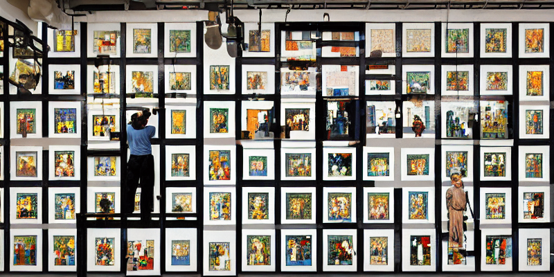

Lab 3: Training Tokenizers
Contents
Lab 3: Training Tokenizers#

Prepare the environment#
%pip install --pre ekorpkit[tokenize]
%config InlineBackend.figure_format='retina'
%load_ext autotime
%load_ext autoreload
%autoreload 2
from ekorpkit import eKonf
eKonf.setLogger("INFO")
print("version:", eKonf.__version__)
is_colab = eKonf.is_colab()
print("is colab?", is_colab)
if is_colab:
eKonf.mount_google_drive()
workspace_dir = "/content/drive/MyDrive/workspace"
project_name = "ekorpkit-book"
project_dir = eKonf.set_workspace(workspace=workspace_dir, project=project_name)
print("project_dir:", project_dir)
INFO:ekorpkit.utils.notebook:Google Colab not detected.
INFO:ekorpkit.base:Setting EKORPKIT_WORKSPACE_ROOT to /content/drive/MyDrive/workspace
INFO:ekorpkit.base:Setting EKORPKIT_PROJECT to ekorpkit-book
INFO:ekorpkit.base:Loaded .env from /workspace/projects/ekorpkit-book/config/.env
The autotime extension is already loaded. To reload it, use:
%reload_ext autotime
The autoreload extension is already loaded. To reload it, use:
%reload_ext autoreload
version: 0.1.40.post0.dev19
is colab? False
project_dir: /content/drive/MyDrive/workspace/projects/ekorpkit-book
time: 253 ms (started: 2022-11-17 00:40:20 +00:00)
Load the saved corpora#
data = eKonf.load_data("enko_filtered.parquet", project_dir + "/data")
data.head()
INFO:ekorpkit.io.file:Processing [1] files from ['enko_filtered.parquet']
INFO:ekorpkit.io.file:Loading 1 dataframes from ['/content/drive/MyDrive/workspace/projects/ekorpkit-book/data/enko_filtered.parquet']
INFO:ekorpkit.io.file:Loading data from /content/drive/MyDrive/workspace/projects/ekorpkit-book/data/enko_filtered.parquet
| id | text | split | filename | corpus | num_chars | num_words | num_sents | avg_num_chars | avg_num_words | |
|---|---|---|---|---|---|---|---|---|---|---|
| 1 | 7644961 | Anaissini is a tribe of click beetles in the f... | train | wiki_49 | enwiki_sampled | 63 | 11 | 1 | 5.727273 | 11.000000 |
| 2 | 6658552 | The Vicky Metcalf Award for Literature for You... | train | wiki_24 | enwiki_sampled | 479 | 82 | 5 | 5.841463 | 16.400000 |
| 4 | 11081255 | Eylex Films Pvt is a chain of multiplex and si... | train | wiki_94 | enwiki_sampled | 1161 | 181 | 12 | 6.414365 | 15.083333 |
| 8 | 4706486 | Željko Zečević (; born 21 October 1963) is a S... | train | wiki_02 | enwiki_sampled | 1151 | 201 | 15 | 5.726368 | 13.400000 |
| 12 | 2170359 | Gilberto Nascimento Silva (born 9 June 1956) i... | train | wiki_57 | enwiki_sampled | 685 | 105 | 9 | 6.523810 | 11.666667 |
time: 3.3 s (started: 2022-11-14 02:09:12 +00:00)
text_column = "text"
text_en = (
data[data.corpus == "enwiki_sampled"][text_column].sample(1).values[0].split("\n")
)
text_ko = data[data.corpus == "kowiki"][text_column].sample(1).values[0].split("\n")
print(text_en)
print(text_ko)
['The Rijeka Thermal Power Station (, TE Rijeka, also known as "TE Urinj") is an oil-fired power station east of Rijeka at Kostrena, Croatia. It was built between 1974 and 1978 and it has one generation unit with capacity of 320\xa0MW. The height of the boiler house including its rooftop flue gas stack is .', 'Turbine for the power station was supplied by Ansaldo Energia. Ansaldo Energia was also awarded engineering, procurement and construction contract. Boilers were supplied by Waagner-Biro.', 'The power station is owned and operated by Hrvatska elektroprivreda. Its annual production varies, averaging 917 GWh, but only 141 GWh in 2011. It is expected to undergo decommissioning in 2020, but it is doubtful that it will remain operational until then because of its pollution problem. , Rijeka Thermal Power Station is offline, ready to resume generation within 160 hours of notice. On 18 October 2022, it was unofficially reported that HEP plans to restart the operation of the power plant in order to cover the losses incurred during the energy crisis.']
['런던의 2012년 하계 올림픽 펜싱 여자 플뢰레 단체전은 8월 2일에 엑셀 박람회관에서 진행되었다.', '토너먼트 형식.', '9팀이 여자 플뢰레 단체전에 참가하였다. 본선에 출전하는 팀들은 FIE 랭킹에 따라 대진이 정해졌다. 영국은 개최국 자격으로 모든 종목을 선택 여부에 따라 참전할 수 있는 자격이 주어졌다. 영국은 이 토너먼트에 참가하여 첫경기에서 9번 시드의 이집트를 상대하여 승리하며 8강전에서 나머지 7개의 참가팀들과 만났다. 8강전에서 패한 팀들도 두 경기를 더 치러 5위에서 8위까지의 순위를 결정한다. 반대로, 8강전에서 승리한 팀들은 준결승전에서 서로와 맞붙는다. 준결승전에서 승리한 두 팀은 금메달 결정전으로, 패한 팀들은 동메달 결정전으로 이동한다.', '단체전은 먼저 45투셰를 기록하거나, 정규시간이 지나고 더 많은 투셰를 기록한 팀이 승리한다.']
time: 145 ms (started: 2022-11-14 02:09:16 +00:00)
Covert pandas datafame to huggingface dataset#
from datasets import Dataset
raw_dataset = Dataset.from_pandas(data[[text_column]])
raw_dataset
Dataset({
features: ['text', '__index_level_0__'],
num_rows: 603719
})
time: 1.22 s (started: 2022-11-14 02:09:19 +00:00)
Shuffle the dataset#
# shuffle the dataset
raw_dataset = raw_dataset.shuffle(seed=42)
time: 116 ms (started: 2022-11-14 02:09:21 +00:00)
Split the dataset into sentences for training#
The sentencepiece module comes with a python training API, which uses sentences in a file, one sentence per line. We will use the sent_tokenize function from the nltk package to split the text into sentences. The sent_tokenize function is a wrapper around the punkt tokenizer, which is a pre-trained sentence tokenizer. The punkt tokenizer is trained on the Penn Treebank corpus, which is a collection of Wall Street Journal articles. The punkt tokenizer is a good choice for plain English text, but it may not be the best choice for other languages.
import nltk
from nltk.tokenize import sent_tokenize
from ekorpkit.tokenizers.trainers.spm import export_sentence_chunk_files
nltk.download("punkt")
[nltk_data] Downloading package punkt to /root/nltk_data...
[nltk_data] Package punkt is already up-to-date!
True
time: 1.13 s (started: 2022-11-14 02:09:23 +00:00)
output_dir = project_dir + "/data/tokenizers/enko_filtered_chunk"
export_sentence_chunk_files(
raw_dataset,
output_dir=output_dir,
chunk_size=10000,
text_column=text_column,
sent_tokenize=sent_tokenize,
)
INFO:ekorpkit.tokenizers.trainers.spm:Writing sentence chunks to /content/drive/MyDrive/workspace/projects/ekorpkit-book/data/tokenizers/enko_filtered_chunk
time: 1min 29s (started: 2022-11-14 02:09:26 +00:00)
Sample sentences and combine them into a single file#
If your dataset is too large, you can sample a subset of the sentence files for training. The sample function from the random module can be used to sample a subset of the files.
You can use sample_and_combine function to sample a subset of sentence files and combine them into a single file.
from ekorpkit.tokenizers.trainers.spm import sample_and_combine
input_dir = project_dir + "/data/tokenizers/enko_filtered_chunk"
output_dir = project_dir + "/data/tokenizers/enko_filtered_samples"
sampled_file = sample_and_combine(
input_dir=input_dir, output_dir=output_dir, sample_size=50
)
INFO:ekorpkit.tokenizers.trainers.spm:sampled files: ['sent_chunk_0009.txt', 'sent_chunk_0019.txt', 'sent_chunk_0060.txt', 'sent_chunk_0038.txt', 'sent_chunk_0000.txt', 'sent_chunk_0042.txt', 'sent_chunk_0025.txt', 'sent_chunk_0053.txt', 'sent_chunk_0035.txt', 'sent_chunk_0033.txt', 'sent_chunk_0008.txt', 'sent_chunk_0023.txt', 'sent_chunk_0004.txt', 'sent_chunk_0024.txt', 'sent_chunk_0013.txt', 'sent_chunk_0003.txt', 'sent_chunk_0017.txt', 'sent_chunk_0051.txt', 'sent_chunk_0027.txt', 'sent_chunk_0058.txt', 'sent_chunk_0012.txt', 'sent_chunk_0029.txt', 'sent_chunk_0015.txt', 'sent_chunk_0044.txt', 'sent_chunk_0057.txt', 'sent_chunk_0020.txt', 'sent_chunk_0052.txt', 'sent_chunk_0059.txt', 'sent_chunk_0005.txt', 'sent_chunk_0011.txt', 'sent_chunk_0031.txt', 'sent_chunk_0030.txt', 'sent_chunk_0001.txt', 'sent_chunk_0056.txt', 'sent_chunk_0047.txt', 'sent_chunk_0055.txt', 'sent_chunk_0007.txt', 'sent_chunk_0032.txt', 'sent_chunk_0018.txt', 'sent_chunk_0014.txt', 'sent_chunk_0016.txt', 'sent_chunk_0054.txt', 'sent_chunk_0028.txt', 'sent_chunk_0021.txt', 'sent_chunk_0006.txt', 'sent_chunk_0040.txt', 'sent_chunk_0049.txt', 'sent_chunk_0043.txt', 'sent_chunk_0037.txt', 'sent_chunk_0022.txt']
INFO:ekorpkit.tokenizers.trainers.spm:number of lines sampled: 2,998,856
INFO:ekorpkit.tokenizers.trainers.spm:saved sampled sentences to /content/drive/MyDrive/workspace/projects/ekorpkit-book/data/tokenizers/enko_filtered_samples/sampled_sentences.txt
time: 20.9 s (started: 2022-11-13 05:07:06 +00:00)
Train tokenizers with Hugging Face Tokenizers#
Hugging Face’s Tokenizers provides a wide range of tokenizers, including BPE, WordPiece, Unigram, SentencePiece, and ByteLevel. We will use the BPE and Unigram tokenizers in this lab.
Import the libraries and prepare functions#
from tokenizers import Tokenizer
from tokenizers.models import BPE, Unigram, WordLevel
from tokenizers.trainers import BpeTrainer, UnigramTrainer, WordLevelTrainer
from tokenizers.pre_tokenizers import Whitespace
from tokenizers import normalizers
from tokenizers.normalizers import NFD, StripAccents
from ekorpkit.tokenizers.trainers.spm import batch_chunks
unk_token = "<UNK>" # token for unknown words
spl_tokens = ["<UNK>", "<SEP>", "<MASK>", "<CLS>", "[MASK]"] # special tokens
def prepare_tokenizer_trainer(algo):
"""
Prepares the tokenizer and trainer with unknown & special tokens.
"""
if algo == "BPE":
tokenizer = Tokenizer(BPE(unk_token=unk_token))
trainer = BpeTrainer(special_tokens=spl_tokens)
elif algo == "UNI":
tokenizer = Tokenizer(Unigram())
trainer = UnigramTrainer(unk_token=unk_token, special_tokens=spl_tokens)
else:
tokenizer = Tokenizer(WordLevel(unk_token=unk_token))
trainer = WordLevelTrainer(special_tokens=spl_tokens)
normalizer = normalizers.Sequence([NFD(), StripAccents()])
tokenizer.normalizer = normalizer
tokenizer.pre_tokenizer = Whitespace()
return tokenizer, trainer
time: 2.35 ms (started: 2022-11-12 06:51:08 +00:00)
def train_tokenizer(algo="BPE"):
"""
Takes the files and trains the tokenizer.
"""
save_path = f"{project_dir}/tokenizers/{algo}_tokenizer.json"
tokenizer, trainer = prepare_tokenizer_trainer(algo)
tokenizer.train_from_iterator(
batch_chunks(raw_dataset, batch_size=1000, text_column=text_column),
trainer=trainer,
)
tokenizer.save(save_path)
tokenizer = Tokenizer.from_file(save_path)
return tokenizer
time: 20.2 ms (started: 2022-11-13 03:09:51 +00:00)
Train BPE tokenizer#
model_path = train_tokenizer("BPE")
time: 15h 30min 58s (started: 2022-11-11 06:36:01 +00:00)
To train a BPE tokenizer, it took 15 hours and 30 minutes for the 2,998,856 sentences. The tokenizer was saved in the {project_dir}/tokenizers directory.
To train more efficiently with multiple processors, it is preferable to use CLI (command line interface) tools.
ekorpkit \
project.name=ekorpkit-book \
dir.workspace=/content/drive/MyDrive/workspace \
verbose=false \
run=tokenizer \
tokenizer=train_hf \
tokenizer.model_prefix=enko_wiki \
tokenizer.model_type=bpe \
tokenizer.vocab_size=30000 \
tokenizer.input_files=sampled_sentences.txt \
tokenizer.input_dir=data/tokenizers/enko_filtered_samples \
tokenizer.output_dir=tokenizers/hf/enko_wiki
took 22m 36.6s
With 256 processors, it took 22 minutes and 37 seconds to tokenize the 2,998,856 sentences.
from tokenizers import Tokenizer
tokenizer_path = (
f"{project_dir}/tokenizers/hf/enko_wiki/enko_wiki_bpe_huggingface_vocab_30000.json"
)
bpe_tokenizer = Tokenizer.from_file(tokenizer_path)
print(f"Vocab size: {bpe_tokenizer.get_vocab_size()}")
print(bpe_tokenizer.encode(text_en[0]).tokens)
print(bpe_tokenizer.encode(text_ko[0]).tokens)
Vocab size: 30000
['This', 'article', 'describ', 'es', 'the', 'process', 'by', 'which', 'the', 'ter', 'rit', 'or', 'ial', 'ext', 'ent', 'of', 'Moroc', 'co', 'came', 'to', 'be', 'as', 'it', 'is', 'now', '.']
['크리', '클', '레이드', '(', 'C', 'rick', 'l', 'ade', ')', '는', '잉글랜드의', '노스', '윌', '트', '셔', '에', '위치한', '템', '스', '강의', '타운', '이자', '지방', '행정', '구이다', '.', '스', '윈', '던', '과', '시', '런', '세', '스터', '의', '중간에', '위치해', '있다', '.']
time: 67.4 ms (started: 2022-11-13 08:47:47 +00:00)
Train Unigram tokenizer#
model_path = train_tokenizer("UNI")
For a very large corpus, it may take a long time to train a Unigram tokenizer. It is recommended to use the following CLI command to train a Unigram tokenizer.
ekorpkit \
project.name=ekorpkit-book \
dir.workspace=/content/drive/MyDrive/workspace \
verbose=false \
run=tokenizer \
tokenizer=train_hf \
tokenizer.model_prefix=enko_wiki \
tokenizer.model_type=unigram \
tokenizer.vocab_size=30000 \
tokenizer.input_files=sampled_sentences.txt \
tokenizer.input_dir=data/tokenizers/enko_filtered_samples \
tokenizer.output_dir=tokenizers/hf/enko_wiki
took 10m 10.7s
With 256 processors, it took 10 minutes and 11 seconds to tokenize the 2,998,856 sentences.
from tokenizers import Tokenizer
tokenizer_path = (
f"{project_dir}/tokenizers/hf/enko_wiki/enko_wiki_unigram_huggingface_vocab_30000.json"
)
unigram_tokenizer = Tokenizer.from_file(tokenizer_path)
print(f"Vocab size: {bpe_tokenizer.get_vocab_size()}")
print(unigram_tokenizer.encode(text_en[0]).tokens)
print(unigram_tokenizer.encode(text_ko[0]).tokens)
Vocab size: 30000
['This', 'article', 'describe', 's', 'the', 'process', 'by', 'which', 'the', 'territor', 'ial', 'ex', 't', 'ent', 'of', 'Morocc', 'o', 'came', 'to', 'be', 'as', 'it', 'is', 'now', '.']
['크리', '클레이', '드', '(', 'C', 'rick', 'la', 'de', ')', '는', '잉글랜드의', '노스', '윌', '트', '셔', '에', '위치한', '템', '스', '강의', '타운', '이자', '지방', '행정', '구', '이다', '.', '스', '윈', '던', '과', '시', '런', '세', '스터', '의', '중간에', '위치해', '있다', '.']
time: 82 ms (started: 2022-11-13 08:47:51 +00:00)
Train tokenizers with Google SentencePiece (SPM)#
Install SentencePiece#
pip install sentencepiece
Train SentencePiece models#
You can use train_spm function to train a SentencePiece model. The train_spm function takes the following arguments:
model_prefix: The prefix of the model file. The model file will be saved as{model_prefix}_{model_type}_vocab_{vocab_size}.model.input: The input file for training.output_dir: The directory to save the model file.vocab_size: The vocabulary size.model_type: The model type. It can beunigram(default),bpe,char, orword.character_coverage: The character coverage. It is only used forunigramandbpemodel types. The default value is1.0.num_threads: The number of threads to use for training. The default value is1. The max value is128.train_extremely_large_corpus: Whether to train an extremely large corpus. The default value isFalse.
Train Unigram model#
from ekorpkit.tokenizers.trainers.spm import train_spm
uni_model_path = train_spm(
model_prefix="enko_wiki",
input=sampled_file,
output_dir=project_dir + "/tokenizers/spm",
model_type="unigram",
vocab_size=30000,
character_coverage=0.9995,
num_threads=128,
)
INFO:ekorpkit.tokenizers.spm:Training SentencePiece model enko_wiki_unigram_vocab_30000.model
sentencepiece_trainer.cc(77) LOG(INFO) Starts training with :
trainer_spec {
input: /content/drive/MyDrive/workspace/projects/ekorpkit-book/data/tokenizers/enko_filtered_samples/sampled_sentences.txt
input_format:
model_prefix:
model_type: UNIGRAM
vocab_size: 30000
self_test_sample_size: 0
character_coverage: 0.9995
input_sentence_size: 0
shuffle_input_sentence: 1
seed_sentencepiece_size: 1000000
shrinking_factor: 0.75
max_sentence_length: 4192
num_threads: 128
num_sub_iterations: 2
max_sentencepiece_length: 16
split_by_unicode_script: 1
split_by_number: 1
split_by_whitespace: 1
split_digits: 0
treat_whitespace_as_suffix: 0
allow_whitespace_only_pieces: 0
required_chars:
byte_fallback: 0
vocabulary_output_piece_score: 1
train_extremely_large_corpus: 0
hard_vocab_limit: 1
use_all_vocab: 0
unk_id: 0
bos_id: 1
eos_id: 2
pad_id: -1
unk_piece: <unk>
bos_piece: <s>
eos_piece: </s>
pad_piece: <pad>
unk_surface: ⁇
enable_differential_privacy: 0
differential_privacy_noise_level: 0
differential_privacy_clipping_threshold: 0
}
normalizer_spec {
name: nmt_nfkc
add_dummy_prefix: 1
remove_extra_whitespaces: 1
escape_whitespaces: 1
normalization_rule_tsv:
}
denormalizer_spec {}
trainer_interface.cc(350) LOG(INFO) SentenceIterator is not specified. Using MultiFileSentenceIterator.
trainer_interface.cc(181) LOG(INFO) Loading corpus: /content/drive/MyDrive/workspace/projects/ekorpkit-book/data/tokenizers/enko_filtered_samples/sampled_sentences.txt
trainer_interface.cc(143) LOG(INFO) Loaded 1000000 lines
trainer_interface.cc(143) LOG(INFO) Loaded 2000000 lines
trainer_interface.cc(143) LOG(INFO) Loaded 3000000 lines
trainer_interface.cc(143) LOG(INFO) Loaded 4000000 lines
trainer_interface.cc(143) LOG(INFO) Loaded 5000000 lines
trainer_interface.cc(143) LOG(INFO) Loaded 6000000 lines
trainer_interface.cc(143) LOG(INFO) Loaded 7000000 lines
trainer_interface.cc(143) LOG(INFO) Loaded 8000000 lines
trainer_interface.cc(143) LOG(INFO) Loaded 9000000 lines
trainer_interface.cc(143) LOG(INFO) Loaded 10000000 lines
trainer_interface.cc(143) LOG(INFO) Loaded 11000000 lines
trainer_interface.cc(143) LOG(INFO) Loaded 12000000 lines
trainer_interface.cc(143) LOG(INFO) Loaded 13000000 lines
trainer_interface.cc(143) LOG(INFO) Loaded 14000000 lines
trainer_interface.cc(143) LOG(INFO) Loaded 15000000 lines
trainer_interface.cc(143) LOG(INFO) Loaded 16000000 lines
trainer_interface.cc(143) LOG(INFO) Loaded 17000000 lines
trainer_interface.cc(143) LOG(INFO) Loaded 18000000 lines
trainer_interface.cc(143) LOG(INFO) Loaded 19000000 lines
trainer_interface.cc(143) LOG(INFO) Loaded 20000000 lines
trainer_interface.cc(143) LOG(INFO) Loaded 21000000 lines
trainer_interface.cc(143) LOG(INFO) Loaded 22000000 lines
trainer_interface.cc(143) LOG(INFO) Loaded 23000000 lines
trainer_interface.cc(143) LOG(INFO) Loaded 24000000 lines
trainer_interface.cc(120) LOG(WARNING) Too many sentences are loaded! (24420004), which may slow down training.
trainer_interface.cc(122) LOG(WARNING) Consider using --input_sentence_size=<size> and --shuffle_input_sentence=true.
trainer_interface.cc(125) LOG(WARNING) They allow to randomly sample <size> sentences from the entire corpus.
trainer_interface.cc(406) LOG(INFO) Loaded all 24420004 sentences
trainer_interface.cc(422) LOG(INFO) Adding meta_piece: <unk>
trainer_interface.cc(422) LOG(INFO) Adding meta_piece: <s>
trainer_interface.cc(422) LOG(INFO) Adding meta_piece: </s>
trainer_interface.cc(427) LOG(INFO) Normalizing sentences...
trainer_interface.cc(536) LOG(INFO) all chars count=1528397615
trainer_interface.cc(547) LOG(INFO) Done: 99.95% characters are covered.
trainer_interface.cc(557) LOG(INFO) Alphabet size=3816
trainer_interface.cc(558) LOG(INFO) Final character coverage=0.9995
trainer_interface.cc(590) LOG(INFO) Done! preprocessed 24419902 sentences.
unigram_model_trainer.cc(146) LOG(INFO) Making suffix array...
unigram_model_trainer.cc(150) LOG(INFO) ExtracINFO:ekorpkit.tokenizers.spm:saved model to /content/drive/MyDrive/workspace/projects/ekorpkit-book/tokenizers/spm/enko_wiki_unigram_vocab_30000.model
time: 23min 6s (started: 2022-11-12 08:03:08 +00:00)
ting frequent sub strings...
unigram_model_trainer.cc(201) LOG(INFO) Initialized 1000000 seed sentencepieces
trainer_interface.cc(596) LOG(INFO) Tokenizing input sentences with whitespace: 24419902
trainer_interface.cc(607) LOG(INFO) Done! 4696044
unigram_model_trainer.cc(491) LOG(INFO) Using 4696044 sentences for EM training
unigram_model_trainer.cc(507) LOG(INFO) EM sub_iter=0 size=838106 obj=16.3019 num_tokens=14291441 num_tokens/piece=17.0521
unigram_model_trainer.cc(507) LOG(INFO) EM sub_iter=1 size=688067 obj=14.038 num_tokens=14365800 num_tokens/piece=20.8785
unigram_model_trainer.cc(507) LOG(INFO) EM sub_iter=0 size=516036 obj=13.9962 num_tokens=14484892 num_tokens/piece=28.0695
unigram_model_trainer.cc(507) LOG(INFO) EM sub_iter=1 size=515998 obj=13.9855 num_tokens=14495195 num_tokens/piece=28.0916
unigram_model_trainer.cc(507) LOG(INFO) EM sub_iter=0 size=386997 obj=14.0208 num_tokens=14763508 num_tokens/piece=38.1489
unigram_model_trainer.cc(507) LOG(INFO) EM sub_iter=1 size=386994 obj=14.0098 num_tokens=14769200 num_tokens/piece=38.1639
unigram_model_trainer.cc(507) LOG(INFO) EM sub_iter=0 size=290245 obj=14.1075 num_tokens=15208608 num_tokens/piece=52.3992
unigram_model_trainer.cc(507) LOG(INFO) EM sub_iter=1 size=290245 obj=14.0799 num_tokens=15208857 num_tokens/piece=52.4001
unigram_model_trainer.cc(507) LOG(INFO) EM sub_iter=0 size=217683 obj=14.2339 num_tokens=15712334 num_tokens/piece=72.1799
unigram_model_trainer.cc(507) LOG(INFO) EM sub_iter=1 size=217683 obj=14.1986 num_tokens=15712378 num_tokens/piece=72.1801
unigram_model_trainer.cc(507) LOG(INFO) EM sub_iter=0 size=163262 obj=14.3894 num_tokens=16252847 num_tokens/piece=99.5507
unigram_model_trainer.cc(507) LOG(INFO) EM sub_iter=1 size=163262 obj=14.3501 num_tokens=16252560 num_tokens/piece=99.5489
unigram_model_trainer.cc(507) LOG(INFO) EM sub_iter=0 size=122446 obj=14.5717 num_tokens=16812721 num_tokens/piece=137.307
unigram_model_trainer.cc(507) LOG(INFO) EM sub_iter=1 size=122446 obj=14.5288 num_tokens=16812579 num_tokens/piece=137.306
unigram_model_trainer.cc(507) LOG(INFO) EM sub_iter=0 size=91834 obj=14.7795 num_tokens=17416351 num_tokens/piece=189.65
unigram_model_trainer.cc(507) LOG(INFO) EM sub_iter=1 size=91834 obj=14.7313 num_tokens=17416277 num_tokens/piece=189.65
unigram_model_trainer.cc(507) LOG(INFO) EM sub_iter=0 size=68875 obj=15.012 num_tokens=18049647 num_tokens/piece=262.064
unigram_model_trainer.cc(507) LOG(INFO) EM sub_iter=1 size=68875 obj=14.9565 num_tokens=18050042 num_tokens/piece=262.07
unigram_model_trainer.cc(507) LOG(INFO) EM sub_iter=0 size=51656 obj=15.2728 num_tokens=18704298 num_tokens/piece=362.093
unigram_model_trainer.cc(507) LOG(INFO) EM sub_iter=1 size=51656 obj=15.2075 num_tokens=18704520 num_tokens/piece=362.098
unigram_model_trainer.cc(507) LOG(INFO) EM sub_iter=0 size=38742 obj=15.5638 num_tokens=19386320 num_tokens/piece=500.395
unigram_model_trainer.cc(507) LOG(INFO) EM sub_iter=1 size=38742 obj=15.4915 num_tokens=19385990 num_tokens/piece=500.387
unigram_model_trainer.cc(507) LOG(INFO) EM sub_iter=0 size=33000 obj=15.7017 num_tokens=19770798 num_tokens/piece=599.115
unigram_model_trainer.cc(507) LOG(INFO) EM sub_iter=1 size=33000 obj=15.6585 num_tokens=19771014 num_tokens/piece=599.122
time: 23min 6s (started: 2022-11-12 08:03:08 +00:00)
It took 23 minutes to train a unigram model with a vocabulary size of 30,000. The model file was saved in the {project_dir}/tokenizers directory.
ekorpkit \
project.name=ekorpkit-book \
dir.workspace=/content/drive/MyDrive/workspace \
verbose=false \
run=tokenizer \
tokenizer=train_spm \
tokenizer.model_prefix=enko_wiki \
tokenizer.model_type=unigram \
tokenizer.vocab_size=30000 \
tokenizer.input_files=sampled_sentences.txt \
tokenizer.input_dir=data/tokenizers/enko_filtered_samples \
tokenizer.output_dir=tokenizers/spm/enko_wiki \
tokenizer.character_coverage=0.9995 \
tokenizer.num_workers=128
took 4m 2.4s
With 128 processors, it took 4 minutes and 2 seconds to tokenize the 2,998,856 sentences.
Load the trained model#
import sentencepiece as spm
model_file = "tokenizers/spm/enko_wiki_unigram_vocab_30000.model"
model_file = project_dir + "/" + model_file
uni_spm = spm.SentencePieceProcessor(model_file=model_file)
print(f"Vocab size: {uni_spm.vocab_size()}")
print(uni_spm.encode(text_en[0], out_type=str))
print(uni_spm.encode(text_ko[0], out_type=str))
Vocab size: 30000
['▁This', '▁article', '▁describes', '▁the', '▁process', '▁by', '▁which', '▁the', '▁', 'ter', 'ri', 'torial', '▁ex', 't', 'ent', '▁of', '▁Morocco', '▁came', '▁to', '▁be', '▁as', '▁it', '▁is', '▁now', '.']
['▁크리', '클', '레이드', '(', 'C', 'rick', 'lade', ')', '는', '▁잉글랜드의', '▁노스', '▁윌', '트', '셔', '에', '▁위치한', '▁', '템', '스', '▁강의', '▁타운', '이자', '▁지방', '▁행정', '구', '이다', '.', '▁스', '윈', '던', '과', '▁시', '런', '세', '스터', '의', '▁중간에', '▁위치해', '▁있다', '.']
time: 67.4 ms (started: 2022-11-13 08:48:00 +00:00)
Train BPE model#
ekorpkit \
project.name=ekorpkit-book \
dir.workspace=/content/drive/MyDrive/workspace \
verbose=false \
run=tokenizer \
tokenizer=train_spm \
tokenizer.model_prefix=enko_wiki \
tokenizer.model_type=bpe \
tokenizer.vocab_size=30000 \
tokenizer.input_files=sampled_sentences.txt \
tokenizer.input_dir=data/tokenizers/enko_filtered_samples \
tokenizer.output_dir=tokenizers/spm/enko_wiki \
tokenizer.character_coverage=0.9995 \
tokenizer.num_workers=128
took 8m 41.8s
With 128 processors, it took 8 minutes and 42 seconds to tokenize the 2,998,856 sentences.
Load the trained model#
import sentencepiece as spm
model_file = "tokenizers/spm/enko_wiki_bpe_vocab_30000.model"
model_file = project_dir + "/" + model_file
bpe_spm = spm.SentencePieceProcessor(model_file=model_file)
print(f"Vocab size: {uni_spm.vocab_size()}")
print(bpe_spm.encode(text_en[0], out_type=str))
print(bpe_spm.encode(text_ko[0], out_type=str))
Vocab size: 30000
['▁This', '▁article', '▁describes', '▁the', '▁process', '▁by', '▁which', '▁the', '▁ter', 'rit', 'orial', '▁ext', 'ent', '▁of', '▁Morocco', '▁came', '▁to', '▁be', '▁as', '▁it', '▁is', '▁now', '.']
['▁크리', '클', '레이드', '(', 'C', 'rick', 'l', 'ade', ')', '는', '▁잉글랜드의', '▁노스', '▁윌', '트', '셔', '에', '▁위치한', '▁템', '스', '▁강의', '▁타운', '이자', '▁지방', '▁행정', '구이다', '.', '▁스', '윈', '던', '과', '▁시', '런', '세', '스터', '의', '▁중간에', '▁위치해', '▁있다', '.']
time: 34.1 ms (started: 2022-11-13 08:48:11 +00:00)
Compare the Tokenizers#
Load the tokenizers#
tokenizers = {
"BPE": bpe_tokenizer,
"UNI": unigram_tokenizer,
"UNI_SPM": uni_spm,
"BPE_SPM": bpe_spm,
}
def tokenize(tokenizer, text):
"""
Tokenizes the text using the tokenizer.
"""
if isinstance(tokenizer, spm.SentencePieceProcessor):
return tokenizer.encode(text, out_type=str)
return tokenizer.encode(text).tokens
time: 20.6 ms (started: 2022-11-13 08:48:24 +00:00)
Analyze the output of the tokenizers#
texts = [text_en[0] , text_ko[0]]
tokens = {name: [] for name in tokenizers.keys()}
# tokenize the texts with the tokenizers
for text in texts:
for name, tokenizer in tokenizers.items():
print(f"Tokenizer: {name}")
tokens[name].append(tokenize(tokenizer, text))
print(tokens[name][-1])
print("-" * 50)
Tokenizer: BPE
['This', 'article', 'describ', 'es', 'the', 'process', 'by', 'which', 'the', 'ter', 'rit', 'or', 'ial', 'ext', 'ent', 'of', 'Moroc', 'co', 'came', 'to', 'be', 'as', 'it', 'is', 'now', '.']
--------------------------------------------------
Tokenizer: UNI
['This', 'article', 'describe', 's', 'the', 'process', 'by', 'which', 'the', 'territor', 'ial', 'ex', 't', 'ent', 'of', 'Morocc', 'o', 'came', 'to', 'be', 'as', 'it', 'is', 'now', '.']
--------------------------------------------------
Tokenizer: UNI_SPM
['▁This', '▁article', '▁describes', '▁the', '▁process', '▁by', '▁which', '▁the', '▁', 'ter', 'ri', 'torial', '▁ex', 't', 'ent', '▁of', '▁Morocco', '▁came', '▁to', '▁be', '▁as', '▁it', '▁is', '▁now', '.']
--------------------------------------------------
Tokenizer: BPE_SPM
['▁This', '▁article', '▁describes', '▁the', '▁process', '▁by', '▁which', '▁the', '▁ter', 'rit', 'orial', '▁ext', 'ent', '▁of', '▁Morocco', '▁came', '▁to', '▁be', '▁as', '▁it', '▁is', '▁now', '.']
--------------------------------------------------
Tokenizer: BPE
['크리', '클', '레이드', '(', 'C', 'rick', 'l', 'ade', ')', '는', '잉글랜드의', '노스', '윌', '트', '셔', '에', '위치한', '템', '스', '강의', '타운', '이자', '지방', '행정', '구이다', '.', '스', '윈', '던', '과', '시', '런', '세', '스터', '의', '중간에', '위치해', '있다', '.']
--------------------------------------------------
Tokenizer: UNI
['크리', '클레이', '드', '(', 'C', 'rick', 'la', 'de', ')', '는', '잉글랜드의', '노스', '윌', '트', '셔', '에', '위치한', '템', '스', '강의', '타운', '이자', '지방', '행정', '구', '이다', '.', '스', '윈', '던', '과', '시', '런', '세', '스터', '의', '중간에', '위치해', '있다', '.']
--------------------------------------------------
Tokenizer: UNI_SPM
['▁크리', '클', '레이드', '(', 'C', 'rick', 'lade', ')', '는', '▁잉글랜드의', '▁노스', '▁윌', '트', '셔', '에', '▁위치한', '▁', '템', '스', '▁강의', '▁타운', '이자', '▁지방', '▁행정', '구', '이다', '.', '▁스', '윈', '던', '과', '▁시', '런', '세', '스터', '의', '▁중간에', '▁위치해', '▁있다', '.']
--------------------------------------------------
Tokenizer: BPE_SPM
['▁크리', '클', '레이드', '(', 'C', 'rick', 'l', 'ade', ')', '는', '▁잉글랜드의', '▁노스', '▁윌', '트', '셔', '에', '▁위치한', '▁템', '스', '▁강의', '▁타운', '이자', '▁지방', '▁행정', '구이다', '.', '▁스', '윈', '던', '과', '▁시', '런', '세', '스터', '의', '▁중간에', '▁위치해', '▁있다', '.']
--------------------------------------------------
time: 20.8 ms (started: 2022-11-13 08:48:25 +00:00)
Compare the Tokens#
import pandas as pd
def compare_tokens(tokenizers, tokens, sample_num=0):
max_len = max(len(tokens[name][sample_num]) for name in tokenizers.keys())
diffs = {
name: max_len - len(tokens[name][sample_num]) for name in tokenizers.keys()
}
padded_tokens = {
name: tokens[name][sample_num] + [""] * diffs[name]
for name in tokenizers.keys()
}
df = pd.DataFrame(padded_tokens)
return df
time: 20.5 ms (started: 2022-11-13 08:48:30 +00:00)
compare_tokens(tokenizers, tokens, sample_num=0)
| BPE | UNI | UNI_SPM | BPE_SPM | |
|---|---|---|---|---|
| 0 | This | This | ▁This | ▁This |
| 1 | article | article | ▁article | ▁article |
| 2 | describ | describe | ▁describes | ▁describes |
| 3 | es | s | ▁the | ▁the |
| 4 | the | the | ▁process | ▁process |
| 5 | process | process | ▁by | ▁by |
| 6 | by | by | ▁which | ▁which |
| 7 | which | which | ▁the | ▁the |
| 8 | the | the | ▁ | ▁ter |
| 9 | ter | territor | ter | rit |
| 10 | rit | ial | ri | orial |
| 11 | or | ex | torial | ▁ext |
| 12 | ial | t | ▁ex | ent |
| 13 | ext | ent | t | ▁of |
| 14 | ent | of | ent | ▁Morocco |
| 15 | of | Morocc | ▁of | ▁came |
| 16 | Moroc | o | ▁Morocco | ▁to |
| 17 | co | came | ▁came | ▁be |
| 18 | came | to | ▁to | ▁as |
| 19 | to | be | ▁be | ▁it |
| 20 | be | as | ▁as | ▁is |
| 21 | as | it | ▁it | ▁now |
| 22 | it | is | ▁is | . |
| 23 | is | now | ▁now | |
| 24 | now | . | . | |
| 25 | . |
time: 26.6 ms (started: 2022-11-13 08:48:31 +00:00)
compare_tokens(tokenizers, tokens, sample_num=1)
| BPE | UNI | UNI_SPM | BPE_SPM | |
|---|---|---|---|---|
| 0 | 크리 | 크리 | ▁크리 | ▁크리 |
| 1 | 클 | 클레이 | 클 | 클 |
| 2 | 레이드 | 드 | 레이드 | 레이드 |
| 3 | ( | ( | ( | ( |
| 4 | C | C | C | C |
| 5 | rick | rick | rick | rick |
| 6 | l | la | lade | l |
| 7 | ade | de | ) | ade |
| 8 | ) | ) | 는 | ) |
| 9 | 는 | 는 | ▁잉글랜드의 | 는 |
| 10 | 잉글랜드의 | 잉글랜드의 | ▁노스 | ▁잉글랜드의 |
| 11 | 노스 | 노스 | ▁윌 | ▁노스 |
| 12 | 윌 | 윌 | 트 | ▁윌 |
| 13 | 트 | 트 | 셔 | 트 |
| 14 | 셔 | 셔 | 에 | 셔 |
| 15 | 에 | 에 | ▁위치한 | 에 |
| 16 | 위치한 | 위치한 | ▁ | ▁위치한 |
| 17 | 템 | 템 | 템 | ▁템 |
| 18 | 스 | 스 | 스 | 스 |
| 19 | 강의 | 강의 | ▁강의 | ▁강의 |
| 20 | 타운 | 타운 | ▁타운 | ▁타운 |
| 21 | 이자 | 이자 | 이자 | 이자 |
| 22 | 지방 | 지방 | ▁지방 | ▁지방 |
| 23 | 행정 | 행정 | ▁행정 | ▁행정 |
| 24 | 구이다 | 구 | 구 | 구이다 |
| 25 | . | 이다 | 이다 | . |
| 26 | 스 | . | . | ▁스 |
| 27 | 윈 | 스 | ▁스 | 윈 |
| 28 | 던 | 윈 | 윈 | 던 |
| 29 | 과 | 던 | 던 | 과 |
| 30 | 시 | 과 | 과 | ▁시 |
| 31 | 런 | 시 | ▁시 | 런 |
| 32 | 세 | 런 | 런 | 세 |
| 33 | 스터 | 세 | 세 | 스터 |
| 34 | 의 | 스터 | 스터 | 의 |
| 35 | 중간에 | 의 | 의 | ▁중간에 |
| 36 | 위치해 | 중간에 | ▁중간에 | ▁위치해 |
| 37 | 있다 | 위치해 | ▁위치해 | ▁있다 |
| 38 | . | 있다 | ▁있다 | . |
| 39 | . | . |
time: 26.1 ms (started: 2022-11-13 08:48:32 +00:00)
Train tokenizers for Bengali#
import nltk
from nltk.tokenize import sent_tokenize
from ekorpkit.tokenizers.trainers.spm import export_sentence_chunk_files
from datasets import Dataset
nltk.download("punkt")
data = eKonf.load_data("wiki_filtered.parquet", project_dir + "/data")
data_filtered = data[data.corpus == "bnwiki"]
text_column = "text"
raw_dataset = Dataset.from_pandas(data_filtered[[text_column]])
# shuffle the dataset
raw_dataset = raw_dataset.shuffle(seed=42)
output_dir = project_dir + "/data/tokenizers/bn_filtered_chunk"
export_sentence_chunk_files(
raw_dataset,
output_dir=output_dir,
chunk_size=10000,
text_column=text_column,
sent_tokenize=sent_tokenize,
)
[nltk_data] Downloading package punkt to /root/nltk_data...
[nltk_data] Package punkt is already up-to-date!
INFO:ekorpkit.io.file:Processing [1] files from ['wiki_filtered.parquet']
INFO:ekorpkit.io.file:Loading 1 dataframes from ['/content/drive/MyDrive/workspace/projects/ekorpkit-book/data/wiki_filtered.parquet']
INFO:ekorpkit.io.file:Loading data from /content/drive/MyDrive/workspace/projects/ekorpkit-book/data/wiki_filtered.parquet
INFO:ekorpkit.tokenizers.trainers.spm:Writing sentence chunks to /content/drive/MyDrive/workspace/projects/ekorpkit-book/data/tokenizers/bn_filtered_chunk
time: 15.3 s (started: 2022-11-17 00:42:04 +00:00)
from ekorpkit.tokenizers.trainers.spm import sample_and_combine
input_dir = project_dir + "/data/tokenizers/bn_filtered_chunk"
output_dir = project_dir + "/data/tokenizers/bn_filtered_samples"
sampled_file = sample_and_combine(
input_dir=input_dir, output_dir=output_dir, sample_size=5
)
INFO:ekorpkit.tokenizers.trainers.spm:sampled files: ['sent_chunk_0005.txt', 'sent_chunk_0008.txt', 'sent_chunk_0000.txt', 'sent_chunk_0004.txt', 'sent_chunk_0006.txt']
INFO:ekorpkit.tokenizers.trainers.spm:number of lines sampled: 190,496
INFO:ekorpkit.tokenizers.trainers.spm:saved sampled sentences to /content/drive/MyDrive/workspace/projects/ekorpkit-book/data/tokenizers/bn_filtered_samples/sampled_sentences.txt
time: 4.08 s (started: 2022-11-17 00:42:54 +00:00)
!ekorpkit \
project.name=ekorpkit-book \
dir.workspace=/content/drive/MyDrive/workspace \
verbose=false \
run=tokenizer \
tokenizer=train_hf \
tokenizer.model_prefix=bn_wiki \
tokenizer.model_type=bpe \
tokenizer.vocab_size=30000 \
tokenizer.input_files=sampled_sentences.txt \
tokenizer.input_dir=data/tokenizers/bn_filtered_samples \
tokenizer.output_dir=tokenizers/bn_wiki
[2022-11-17 00:50:13,740][ekorpkit.base][INFO] - Loaded .env from /workspace/projects/ekorpkit-book/config/.env
[2022-11-17 00:50:13,742][ekorpkit.base][INFO] - setting environment variable CACHED_PATH_CACHE_ROOT to /content/drive/MyDrive/workspace/.cache/cached_path
[2022-11-17 00:50:13,742][ekorpkit.base][INFO] - setting environment variable KMP_DUPLICATE_LIB_OK to TRUE
[2022-11-17 00:50:15,207][ekorpkit.tokenizers.trainer][INFO] - Additional kwargs: {'special_tokens': ['[PAD]', '[UNK]', '[CLS]', '[SEP]', '[MASK]'], 'unk_token': '[UNK]'}
[2022-11-17 00:50:15,208][ekorpkit.tokenizers.trainer][INFO] - Using project_dir /content/drive/MyDrive/workspace/projects/ekorpkit-book
[2022-11-17 00:50:15,208][ekorpkit.io.file][INFO] - Processing [1] files from ['sampled_sentences.txt']
[00:00:00] Pre-processing files (80 Mo) ░░░░░░░░ 0%
[00:00:00] Pre-processing files (80 Mo) ░░░░░░░░ 1%
[00:00:00] Pre-processing files (80 Mo) ░░░░░░░░ 2%
[00:00:00] Pre-processing files (80 Mo) ░░░░░░░░ 3%
[00:00:00] Pre-processing files (80 Mo) ░░░░░░░░ 4%
[00:00:00] Pre-processing files (80 Mo) ░░░░░░░░ 5%
[00:00:00] Pre-processing files (80 Mo) ░░░░░░░░ 6%
[00:00:00] Pre-processing files (80 Mo) ░░░░░░░░ 7%
[00:00:00] Pre-processing files (80 Mo) ░░░░░░░░ 8%
[00:00:00] Pre-processing files (80 Mo) ░░░░░░░░ 9%
[00:00:00] Pre-processing files (80 Mo) ░░░░░░░░ 10%
[00:00:00] Pre-processing files (80 Mo) ░░░░░░░░ 11%
[00:00:00] Pre-processing files (80 Mo) ░░░░░░░░ 12%
[00:00:00] Pre-processing files (80 Mo) █░░░░░░░ 13%
[00:00:00] Pre-processing files (80 Mo) █░░░░░░░ 14%
[00:00:01] Pre-processing files (80 Mo) █░░░░░░░ 15%
[00:00:01] Pre-processing files (80 Mo) █░░░░░░░ 16%
[00:00:01] Pre-processing files (80 Mo) █░░░░░░░ 17%
[00:00:01] Pre-processing files (80 Mo) █░░░░░░░ 18%
[00:00:01] Pre-processing files (80 Mo) █░░░░░░░ 19%
[00:00:01] Pre-processing files (80 Mo) █░░░░░░░ 20%
[00:00:01] Pre-processing files (80 Mo) █░░░░░░░ 21%
[00:00:01] Pre-processing files (80 Mo) █░░░░░░░ 22%
[00:00:01] Pre-processing files (80 Mo) █░░░░░░░ 23%
[00:00:01] Pre-processing files (80 Mo) █░░░░░░░ 24%
[00:00:01] Pre-processing files (80 Mo) ██░░░░░░ 25%
[00:00:01] Pre-processing files (80 Mo) ██░░░░░░ 26%
[00:00:01] Pre-processing files (80 Mo) ██░░░░░░ 27%
[00:00:01] Pre-processing files (80 Mo) ██░░░░░░ 28%
[00:00:01] Pre-processing files (80 Mo) ██░░░░░░ 29%
[00:00:02] Pre-processing files (80 Mo) ██░░░░░░ 30%
[00:00:02] Pre-processing files (80 Mo) ██░░░░░░ 31%
[00:00:02] Pre-processing files (80 Mo) ██░░░░░░ 32%
[00:00:02] Pre-processing files (80 Mo) ██░░░░░░ 33%
[00:00:02] Pre-processing files (80 Mo) ██░░░░░░ 34%
[00:00:02] Pre-processing files (80 Mo) ██░░░░░░ 35%
[00:00:02] Pre-processing files (80 Mo) ██░░░░░░ 36%
[00:00:02] Pre-processing files (80 Mo) ██░░░░░░ 37%
[00:00:02] Pre-processing files (80 Mo) ███░░░░░ 38%
[00:00:02] Pre-processing files (80 Mo) ███░░░░░ 39%
[00:00:02] Pre-processing files (80 Mo) ███░░░░░ 40%
[00:00:02] Pre-processing files (80 Mo) ███░░░░░ 41%
[00:00:02] Pre-processing files (80 Mo) ███░░░░░ 42%
[00:00:02] Pre-processing files (80 Mo) ███░░░░░ 43%
[00:00:03] Pre-processing files (80 Mo) ███░░░░░ 44%
[00:00:03] Pre-processing files (80 Mo) ███░░░░░ 45%
[00:00:03] Pre-processing files (80 Mo) ███░░░░░ 46%
[00:00:03] Pre-processing files (80 Mo) ███░░░░░ 47%
[00:00:03] Pre-processing files (80 Mo) ███░░░░░ 48%
[00:00:03] Pre-processing files (80 Mo) ███░░░░░ 49%
[00:00:03] Pre-processing files (80 Mo) ████░░░░ 50%
[00:00:03] Pre-processing files (80 Mo) ████░░░░ 51%
[00:00:03] Pre-processing files (80 Mo) ████░░░░ 52%
[00:00:03] Pre-processing files (80 Mo) ████░░░░ 53%
[00:00:03] Pre-processing files (80 Mo) ████░░░░ 54%
[00:00:03] Pre-processing files (80 Mo) ████░░░░ 55%
[00:00:03] Pre-processing files (80 Mo) ████░░░░ 56%
[00:00:03] Pre-processing files (80 Mo) ████░░░░ 57%
[00:00:03] Pre-processing files (80 Mo) ████░░░░ 58%
[00:00:04] Pre-processing files (80 Mo) ████░░░░ 59%
[00:00:04] Pre-processing files (80 Mo) ████░░░░ 60%
[00:00:04] Pre-processing files (80 Mo) ████░░░░ 61%
[00:00:04] Pre-processing files (80 Mo) ████░░░░ 62%
[00:00:04] Pre-processing files (80 Mo) █████░░░ 63%
[00:00:04] Pre-processing files (80 Mo) █████░░░ 64%
[00:00:04] Pre-processing files (80 Mo) █████░░░ 65%
[00:00:04] Pre-processing files (80 Mo) █████░░░ 66%
[00:00:04] Pre-processing files (80 Mo) █████░░░ 67%
[00:00:04] Pre-processing files (80 Mo) █████░░░ 68%
[00:00:04] Pre-processing files (80 Mo) █████░░░ 69%
[00:00:04] Pre-processing files (80 Mo) █████░░░ 70%
[00:00:04] Pre-processing files (80 Mo) █████░░░ 71%
[00:00:04] Pre-processing files (80 Mo) █████░░░ 72%
[00:00:05] Pre-processing files (80 Mo) █████░░░ 73%
[00:00:05] Pre-processing files (80 Mo) █████░░░ 74%
[00:00:05] Pre-processing files (80 Mo) ██████░░ 75%
[00:00:05] Pre-processing files (80 Mo) ██████░░ 76%
[00:00:05] Pre-processing files (80 Mo) ██████░░ 77%
[00:00:05] Pre-processing files (80 Mo) ██████░░ 78%
[00:00:05] Pre-processing files (80 Mo) ██████░░ 79%
[00:00:05] Pre-processing files (80 Mo) ██████░░ 80%
[00:00:05] Pre-processing files (80 Mo) ██████░░ 81%
[00:00:05] Pre-processing files (80 Mo) ██████░░ 82%
[00:00:05] Pre-processing files (80 Mo) ██████░░ 83%
[00:00:05] Pre-processing files (80 Mo) ██████░░ 84%
[00:00:05] Pre-processing files (80 Mo) ██████░░ 85%
[00:00:05] Pre-processing files (80 Mo) ██████░░ 86%
[00:00:05] Pre-processing files (80 Mo) ██████░░ 87%
[00:00:06] Pre-processing files (80 Mo) ███████░ 88%
[00:00:06] Pre-processing files (80 Mo) ███████░ 89%
[00:00:06] Pre-processing files (80 Mo) ███████░ 90%
[00:00:06] Pre-processing files (80 Mo) ███████░ 91%
[00:00:06] Pre-processing files (80 Mo) ███████░ 92%
[00:00:06] Pre-processing files (80 Mo) ███████░ 93%
[00:00:06] Pre-processing files (80 Mo) ███████░ 94%
[00:00:06] Pre-processing files (80 Mo) ███████░ 95%
[00:00:06] Pre-processing files (80 Mo) ███████░ 96%
[00:00:06] Pre-processing files (80 Mo) ███████░ 97%
[00:00:06] Pre-processing files (80 Mo) ███████░ 98%
[00:00:06] Pre-processing files (80 Mo) ███████░ 99%
[00:00:06] Pre-processing files (80 Mo) ████████ 100%
[00:00:00] Tokenize words ████████ 0 / 0
[00:00:00] Tokenize words ███░░░░░ 85634 / 182235
[00:00:00] Tokenize words ███████░ 171268 / 182235
[00:00:00] Tokenize words ████████ 182235 / 182235
[00:00:00] Count pairs ░░░░░░░░ 9110 / 182235
[00:00:00] Count pairs ░░░░░░░░ 12754 / 182235
[00:00:00] Count pairs ░░░░░░░░ 16398 / 182235
[00:00:00] Count pairs ░░░░░░░░ 20042 / 182235
[00:00:00] Count pairs ░░░░░░░░ 21864 / 182235
[00:00:00] Count pairs █░░░░░░░ 23686 / 182235
[00:00:00] Count pairs █░░░░░░░ 25508 / 182235
[00:00:00] Count pairs █░░░░░░░ 27330 / 182235
[00:00:00] Count pairs █░░░░░░░ 29152 / 182235
[00:00:00] Count pairs █░░░░░░░ 30974 / 182235
[00:00:00] Count pairs █░░░░░░░ 32796 / 182235
[00:00:01] Count pairs █░░░░░░░ 34618 / 182235
[00:00:01] Count pairs █░░░░░░░ 36440 / 182235
[00:00:01] Count pairs █░░░░░░░ 38262 / 182235
[00:00:01] Count pairs █░░░░░░░ 40084 / 182235
[00:00:01] Count pairs █░░░░░░░ 41906 / 182235
[00:00:01] Count pairs █░░░░░░░ 43728 / 182235
[00:00:01] Count pairs █░░░░░░░ 45550 / 182235
[00:00:01] Count pairs ██░░░░░░ 47372 / 182235
[00:00:02] Count pairs ██░░░░░░ 49194 / 182235
[00:00:02] Count pairs ██░░░░░░ 51016 / 182235
[00:00:02] Count pairs ██░░░░░░ 52838 / 182235
[00:00:02] Count pairs ██░░░░░░ 54660 / 182235
[00:00:02] Count pairs ██░░░░░░ 56482 / 182235
[00:00:02] Count pairs ██░░░░░░ 58304 / 182235
[00:00:03] Count pairs ██░░░░░░ 60126 / 182235
[00:00:03] Count pairs ██░░░░░░ 61948 / 182235
[00:00:03] Count pairs ██░░░░░░ 63770 / 182235
[00:00:03] Count pairs ██░░░░░░ 65592 / 182235
[00:00:03] Count pairs ██░░░░░░ 67414 / 182235
[00:00:04] Count pairs ███░░░░░ 69236 / 182235
[00:00:04] Count pairs ███░░░░░ 71058 / 182235
[00:00:04] Count pairs ███░░░░░ 72880 / 182235
[00:00:04] Count pairs ███░░░░░ 74702 / 182235
[00:00:05] Count pairs ███░░░░░ 76524 / 182235
[00:00:05] Count pairs ███░░░░░ 78346 / 182235
[00:00:05] Count pairs ███░░░░░ 80168 / 182235
[00:00:05] Count pairs ███░░░░░ 81990 / 182235
[00:00:06] Count pairs ███░░░░░ 83812 / 182235
[00:00:06] Count pairs ███░░░░░ 85634 / 182235
[00:00:06] Count pairs ███░░░░░ 87456 / 182235
[00:00:06] Count pairs ███░░░░░ 89278 / 182235
[00:00:07] Count pairs ███░░░░░ 91100 / 182235
[00:00:07] Count pairs ████░░░░ 92922 / 182235
[00:00:07] Count pairs ████░░░░ 94744 / 182235
[00:00:07] Count pairs ████░░░░ 96566 / 182235
[00:00:08] Count pairs ████░░░░ 98388 / 182235
[00:00:08] Count pairs ████░░░░ 100210 / 182235
[00:00:08] Count pairs ████░░░░ 102032 / 182235
[00:00:09] Count pairs ████░░░░ 103854 / 182235
[00:00:09] Count pairs ████░░░░ 105676 / 182235
[00:00:09] Count pairs ████░░░░ 107498 / 182235
[00:00:10] Count pairs ████░░░░ 109320 / 182235
[00:00:10] Count pairs ████░░░░ 111142 / 182235
[00:00:10] Count pairs ████░░░░ 112964 / 182235
[00:00:11] Count pairs █████░░░ 114786 / 182235
[00:00:11] Count pairs █████░░░ 116608 / 182235
[00:00:11] Count pairs █████░░░ 118430 / 182235
[00:00:12] Count pairs █████░░░ 120252 / 182235
[00:00:12] Count pairs █████░░░ 122074 / 182235
[00:00:13] Count pairs █████░░░ 123896 / 182235
[00:00:13] Count pairs █████░░░ 125718 / 182235
[00:00:13] Count pairs █████░░░ 127540 / 182235
[00:00:14] Count pairs █████░░░ 129362 / 182235
[00:00:14] Count pairs █████░░░ 131184 / 182235
[00:00:14] Count pairs █████░░░ 133006 / 182235
[00:00:15] Count pairs █████░░░ 134828 / 182235
[00:00:15] Count pairs █████░░░ 136650 / 182235
[00:00:16] Count pairs ██████░░ 138472 / 182235
[00:00:16] Count pairs ██████░░ 140294 / 182235
[00:00:17] Count pairs ██████░░ 142116 / 182235
[00:00:17] Count pairs ██████░░ 143938 / 182235
[00:00:17] Count pairs ██████░░ 145760 / 182235
[00:00:18] Count pairs ██████░░ 147582 / 182235
[00:00:18] Count pairs ██████░░ 149404 / 182235
[00:00:19] Count pairs ██████░░ 151226 / 182235
[00:00:19] Count pairs ██████░░ 153048 / 182235
[00:00:20] Count pairs ██████░░ 154870 / 182235
[00:00:20] Count pairs ██████░░ 156692 / 182235
[00:00:21] Count pairs ██████░░ 158514 / 182235
[00:00:21] Count pairs ███████░ 160336 / 182235
[00:00:22] Count pairs ███████░ 162158 / 182235
[00:00:22] Count pairs ███████░ 163980 / 182235
[00:00:23] Count pairs ███████░ 165802 / 182235
[00:00:23] Count pairs ███████░ 167624 / 182235
[00:00:24] Count pairs ███████░ 169446 / 182235
[00:00:24] Count pairs ███████░ 171268 / 182235
[00:00:25] Count pairs ███████░ 173090 / 182235
[00:00:25] Count pairs ███████░ 174912 / 182235
[00:00:26] Count pairs ███████░ 176734 / 182235
[00:00:26] Count pairs ███████░ 178556 / 182235
[00:00:27] Count pairs ███████░ 180378 / 182235
[00:00:28] Count pairs ███████░ 182200 / 182235
[00:00:28] Count pairs ████████ 182235 / 182235
[00:00:00] Compute merges ░░░░░░░░ 300 / 30000
[00:00:00] Compute merges ░░░░░░░░ 900 / 30000
[00:00:00] Compute merges ░░░░░░░░ 2100 / 30000
[00:00:00] Compute merges █░░░░░░░ 4800 / 30000
[00:00:00] Compute merges ██░░░░░░ 9900 / 30000
[00:00:00] Compute merges ████░░░░ 17400 / 30000
[00:00:00] Compute merges ███████░ 27000 / 30000
[00:00:00] Compute merges ████████ 28193 / 28193
[2022-11-17 00:50:51,068][ekorpkit.tokenizers.trainers.hf][INFO] - saved model to /content/drive/MyDrive/workspace/projects/ekorpkit-book/tokenizers/bn_wiki/bn_wiki_bpe_huggingface_vocab_30000.json
time: 41.2 s (started: 2022-11-17 00:50:10 +00:00)
!ekorpkit \
project.name=ekorpkit-book \
dir.workspace=/content/drive/MyDrive/workspace \
verbose=false \
run=tokenizer \
tokenizer=train_hf \
tokenizer.model_prefix=bn_wiki \
tokenizer.model_type=unigram \
tokenizer.vocab_size=30000 \
tokenizer.input_files=sampled_sentences.txt \
tokenizer.input_dir=data/tokenizers/bn_filtered_samples \
tokenizer.output_dir=tokenizers/bn_wiki
[2022-11-17 00:50:54,891][ekorpkit.base][INFO] - Loaded .env from /workspace/projects/ekorpkit-book/config/.env
[2022-11-17 00:50:54,892][ekorpkit.base][INFO] - setting environment variable CACHED_PATH_CACHE_ROOT to /content/drive/MyDrive/workspace/.cache/cached_path
[2022-11-17 00:50:54,892][ekorpkit.base][INFO] - setting environment variable KMP_DUPLICATE_LIB_OK to TRUE
[2022-11-17 00:50:56,309][ekorpkit.tokenizers.trainer][INFO] - Additional kwargs: {'special_tokens': ['[PAD]', '[UNK]', '[CLS]', '[SEP]', '[MASK]'], 'unk_token': '[UNK]'}
[2022-11-17 00:50:56,309][ekorpkit.tokenizers.trainer][INFO] - Using project_dir /content/drive/MyDrive/workspace/projects/ekorpkit-book
[2022-11-17 00:50:56,309][ekorpkit.io.file][INFO] - Processing [1] files from ['sampled_sentences.txt']
[00:00:00] Pre-processing files (80 Mo) ░░░░░░░░ 0%
[00:00:00] Pre-processing files (80 Mo) ░░░░░░░░ 1%
[00:00:00] Pre-processing files (80 Mo) ░░░░░░░░ 2%
[00:00:00] Pre-processing files (80 Mo) ░░░░░░░░ 3%
[00:00:00] Pre-processing files (80 Mo) ░░░░░░░░ 4%
[00:00:00] Pre-processing files (80 Mo) ░░░░░░░░ 5%
[00:00:00] Pre-processing files (80 Mo) ░░░░░░░░ 6%
[00:00:00] Pre-processing files (80 Mo) ░░░░░░░░ 7%
[00:00:00] Pre-processing files (80 Mo) ░░░░░░░░ 8%
[00:00:00] Pre-processing files (80 Mo) ░░░░░░░░ 9%
[00:00:00] Pre-processing files (80 Mo) ░░░░░░░░ 10%
[00:00:00] Pre-processing files (80 Mo) ░░░░░░░░ 11%
[00:00:00] Pre-processing files (80 Mo) ░░░░░░░░ 12%
[00:00:00] Pre-processing files (80 Mo) █░░░░░░░ 13%
[00:00:00] Pre-processing files (80 Mo) █░░░░░░░ 14%
[00:00:01] Pre-processing files (80 Mo) █░░░░░░░ 15%
[00:00:01] Pre-processing files (80 Mo) █░░░░░░░ 16%
[00:00:01] Pre-processing files (80 Mo) █░░░░░░░ 17%
[00:00:01] Pre-processing files (80 Mo) █░░░░░░░ 18%
[00:00:01] Pre-processing files (80 Mo) █░░░░░░░ 19%
[00:00:01] Pre-processing files (80 Mo) █░░░░░░░ 20%
[00:00:01] Pre-processing files (80 Mo) █░░░░░░░ 21%
[00:00:01] Pre-processing files (80 Mo) █░░░░░░░ 22%
[00:00:01] Pre-processing files (80 Mo) █░░░░░░░ 23%
[00:00:01] Pre-processing files (80 Mo) █░░░░░░░ 24%
[00:00:01] Pre-processing files (80 Mo) ██░░░░░░ 25%
[00:00:01] Pre-processing files (80 Mo) ██░░░░░░ 26%
[00:00:01] Pre-processing files (80 Mo) ██░░░░░░ 27%
[00:00:01] Pre-processing files (80 Mo) ██░░░░░░ 28%
[00:00:01] Pre-processing files (80 Mo) ██░░░░░░ 29%
[00:00:02] Pre-processing files (80 Mo) ██░░░░░░ 30%
[00:00:02] Pre-processing files (80 Mo) ██░░░░░░ 31%
[00:00:02] Pre-processing files (80 Mo) ██░░░░░░ 32%
[00:00:02] Pre-processing files (80 Mo) ██░░░░░░ 33%
[00:00:02] Pre-processing files (80 Mo) ██░░░░░░ 34%
[00:00:02] Pre-processing files (80 Mo) ██░░░░░░ 35%
[00:00:02] Pre-processing files (80 Mo) ██░░░░░░ 36%
[00:00:02] Pre-processing files (80 Mo) ██░░░░░░ 37%
[00:00:02] Pre-processing files (80 Mo) ███░░░░░ 38%
[00:00:02] Pre-processing files (80 Mo) ███░░░░░ 39%
[00:00:02] Pre-processing files (80 Mo) ███░░░░░ 40%
[00:00:02] Pre-processing files (80 Mo) ███░░░░░ 41%
[00:00:02] Pre-processing files (80 Mo) ███░░░░░ 42%
[00:00:02] Pre-processing files (80 Mo) ███░░░░░ 43%
[00:00:02] Pre-processing files (80 Mo) ███░░░░░ 44%
[00:00:03] Pre-processing files (80 Mo) ███░░░░░ 45%
[00:00:03] Pre-processing files (80 Mo) ███░░░░░ 46%
[00:00:03] Pre-processing files (80 Mo) ███░░░░░ 47%
[00:00:03] Pre-processing files (80 Mo) ███░░░░░ 48%
[00:00:03] Pre-processing files (80 Mo) ███░░░░░ 49%
[00:00:03] Pre-processing files (80 Mo) ████░░░░ 50%
[00:00:03] Pre-processing files (80 Mo) ████░░░░ 51%
[00:00:03] Pre-processing files (80 Mo) ████░░░░ 52%
[00:00:03] Pre-processing files (80 Mo) ████░░░░ 53%
[00:00:03] Pre-processing files (80 Mo) ████░░░░ 54%
[00:00:03] Pre-processing files (80 Mo) ████░░░░ 55%
[00:00:03] Pre-processing files (80 Mo) ████░░░░ 56%
[00:00:03] Pre-processing files (80 Mo) ████░░░░ 57%
[00:00:03] Pre-processing files (80 Mo) ████░░░░ 58%
[00:00:04] Pre-processing files (80 Mo) ████░░░░ 59%
[00:00:04] Pre-processing files (80 Mo) ████░░░░ 60%
[00:00:04] Pre-processing files (80 Mo) ████░░░░ 61%
[00:00:04] Pre-processing files (80 Mo) ████░░░░ 62%
[00:00:04] Pre-processing files (80 Mo) █████░░░ 63%
[00:00:04] Pre-processing files (80 Mo) █████░░░ 64%
[00:00:04] Pre-processing files (80 Mo) █████░░░ 65%
[00:00:04] Pre-processing files (80 Mo) █████░░░ 66%
[00:00:04] Pre-processing files (80 Mo) █████░░░ 67%
[00:00:04] Pre-processing files (80 Mo) █████░░░ 68%
[00:00:04] Pre-processing files (80 Mo) █████░░░ 69%
[00:00:04] Pre-processing files (80 Mo) █████░░░ 70%
[00:00:04] Pre-processing files (80 Mo) █████░░░ 71%
[00:00:04] Pre-processing files (80 Mo) █████░░░ 72%
[00:00:04] Pre-processing files (80 Mo) █████░░░ 73%
[00:00:05] Pre-processing files (80 Mo) █████░░░ 74%
[00:00:05] Pre-processing files (80 Mo) ██████░░ 75%
[00:00:05] Pre-processing files (80 Mo) ██████░░ 76%
[00:00:05] Pre-processing files (80 Mo) ██████░░ 77%
[00:00:05] Pre-processing files (80 Mo) ██████░░ 78%
[00:00:05] Pre-processing files (80 Mo) ██████░░ 79%
[00:00:05] Pre-processing files (80 Mo) ██████░░ 80%
[00:00:05] Pre-processing files (80 Mo) ██████░░ 81%
[00:00:05] Pre-processing files (80 Mo) ██████░░ 82%
[00:00:05] Pre-processing files (80 Mo) ██████░░ 83%
[00:00:05] Pre-processing files (80 Mo) ██████░░ 84%
[00:00:05] Pre-processing files (80 Mo) ██████░░ 85%
[00:00:05] Pre-processing files (80 Mo) ██████░░ 86%
[00:00:05] Pre-processing files (80 Mo) ██████░░ 87%
[00:00:05] Pre-processing files (80 Mo) ███████░ 88%
[00:00:06] Pre-processing files (80 Mo) ███████░ 89%
[00:00:06] Pre-processing files (80 Mo) ███████░ 90%
[00:00:06] Pre-processing files (80 Mo) ███████░ 91%
[00:00:06] Pre-processing files (80 Mo) ███████░ 92%
[00:00:06] Pre-processing files (80 Mo) ███████░ 93%
[00:00:06] Pre-processing files (80 Mo) ███████░ 94%
[00:00:06] Pre-processing files (80 Mo) ███████░ 95%
[00:00:06] Pre-processing files (80 Mo) ███████░ 96%
[00:00:06] Pre-processing files (80 Mo) ███████░ 97%
[00:00:06] Pre-processing files (80 Mo) ███████░ 98%
[00:00:06] Pre-processing files (80 Mo) ███████░ 99%
[00:00:06] Pre-processing files (80 Mo) ████████ 100%
[00:00:00] Suffix array seeds ████████ 0 / 0
[00:00:00] Suffix array seeds ████████ 182235 / 182235
[00:00:00] EM training ████████ 182235 / 10
[00:00:00] EM training ████████ 182235 / 10
[00:00:02] EM training ░░░░░░░░ 1 / 10
[00:00:03] EM training █░░░░░░░ 2 / 10
[00:00:06] EM training ██░░░░░░ 3 / 10
[00:00:07] EM training ███░░░░░ 4 / 10
[00:00:09] EM training ████░░░░ 5 / 10
[00:00:10] EM training ████░░░░ 6 / 10
[00:00:12] EM training █████░░░ 7 / 10
[00:00:13] EM training ██████░░ 8 / 10
[00:00:13] EM training ████████ 10 / 10
[2022-11-17 00:51:16,474][ekorpkit.tokenizers.trainers.hf][INFO] - saved model to /content/drive/MyDrive/workspace/projects/ekorpkit-book/tokenizers/bn_wiki/bn_wiki_unigram_huggingface_vocab_30000.json
time: 25.4 s (started: 2022-11-17 00:50:51 +00:00)
!ekorpkit \
project.name=ekorpkit-book \
dir.workspace=/content/drive/MyDrive/workspace \
verbose=false \
run=tokenizer \
tokenizer=train_spm \
tokenizer.model_prefix=bn_wiki \
tokenizer.model_type=unigram \
tokenizer.vocab_size=30000 \
tokenizer.input_files=sampled_sentences.txt \
tokenizer.input_dir=data/tokenizers/bn_filtered_samples \
tokenizer.output_dir=tokenizers/bn_wiki \
tokenizer.character_coverage=0.9995 \
tokenizer.num_workers=128
[2022-11-17 00:51:20,313][ekorpkit.base][INFO] - Loaded .env from /workspace/projects/ekorpkit-book/config/.env
[2022-11-17 00:51:20,314][ekorpkit.base][INFO] - setting environment variable CACHED_PATH_CACHE_ROOT to /content/drive/MyDrive/workspace/.cache/cached_path
[2022-11-17 00:51:20,314][ekorpkit.base][INFO] - setting environment variable KMP_DUPLICATE_LIB_OK to TRUE
[2022-11-17 00:51:21,796][ekorpkit.tokenizers.trainer][INFO] - Using project_dir /content/drive/MyDrive/workspace/projects/ekorpkit-book
[2022-11-17 00:51:21,797][ekorpkit.io.file][INFO] - Processing [1] files from ['sampled_sentences.txt']
[2022-11-17 00:51:21,797][ekorpkit.tokenizers.trainers.spm][INFO] - Training SentencePiece model bn_wiki_unigram_spm_vocab_30000.model
Change directory to /content/drive/MyDrive/workspace/projects/ekorpkit-book/tokenizers/bn_wiki
sentencepiece_trainer.cc(77) LOG(INFO) Starts training with :
trainer_spec {
input: /content/drive/MyDrive/workspace/projects/ekorpkit-book/data/tokenizers/bn_filtered_samples/sampled_sentences.txt
input_format:
model_prefix: bn_wiki_unigram_spm_vocab_30000
model_type: UNIGRAM
vocab_size: 30000
self_test_sample_size: 0
character_coverage: 0.9995
input_sentence_size: 0
shuffle_input_sentence: 1
seed_sentencepiece_size: 1000000
shrinking_factor: 0.75
max_sentence_length: 4192
num_threads: 128
num_sub_iterations: 2
max_sentencepiece_length: 16
split_by_unicode_script: 1
split_by_number: 1
split_by_whitespace: 1
split_digits: 0
treat_whitespace_as_suffix: 0
allow_whitespace_only_pieces: 0
required_chars:
byte_fallback: 0
vocabulary_output_piece_score: 1
train_extremely_large_corpus: 0
hard_vocab_limit: 1
use_all_vocab: 0
unk_id: 0
bos_id: 1
eos_id: 2
pad_id: -1
unk_piece: <unk>
bos_piece: <s>
eos_piece: </s>
pad_piece: <pad>
unk_surface: ⁇
enable_differential_privacy: 0
differential_privacy_noise_level: 0
differential_privacy_clipping_threshold: 0
}
normalizer_spec {
name: nmt_nfkc
add_dummy_prefix: 1
remove_extra_whitespaces: 1
escape_whitespaces: 1
normalization_rule_tsv:
}
denormalizer_spec {}
trainer_interface.cc(350) LOG(INFO) SentenceIterator is not specified. Using MultiFileSentenceIterator.
trainer_interface.cc(181) LOG(INFO) Loading corpus: /content/drive/MyDrive/workspace/projects/ekorpkit-book/data/tokenizers/bn_filtered_samples/sampled_sentences.txt
trainer_interface.cc(377) LOG(WARNING) Found too long line (4535 > 4192).
trainer_interface.cc(379) LOG(WARNING) Too long lines are skipped in the training.
trainer_interface.cc(380) LOG(WARNING) The maximum length can be changed with --max_sentence_length=<size> flag.
trainer_interface.cc(406) LOG(INFO) Loaded all 190456 sentences
trainer_interface.cc(413) LOG(INFO) Skipped 4 too long sentences.
trainer_interface.cc(422) LOG(INFO) Adding meta_piece: <unk>
trainer_interface.cc(422) LOG(INFO) Adding meta_piece: <s>
trainer_interface.cc(422) LOG(INFO) Adding meta_piece: </s>
trainer_interface.cc(427) LOG(INFO) Normalizing sentences...
trainer_interface.cc(536) LOG(INFO) all chars count=30127325
trainer_interface.cc(547) LOG(INFO) Done: 99.9501% characters are covered.
trainer_interface.cc(557) LOG(INFO) Alphabet size=186
trainer_interface.cc(558) LOG(INFO) Final character coverage=0.999501
trainer_interface.cc(590) LOG(INFO) Done! preprocessed 190451 sentences.
unigram_model_trainer.cc(146) LOG(INFO) Making suffix array...
unigram_model_trainer.cc(150) LOG(INFO) Extracting frequent sub strings...
unigram_model_trainer.cc(201) LOG(INFO) Initialized 513080 seed sentencepieces
trainer_interface.cc(596) LOG(INFO) Tokenizing input sentences with whitespace: 190451
trainer_interface.cc(607) LOG(INFO) Done! 391398
unigram_model_trainer.cc(491) LOG(INFO) Using 391398 sentences for EM training
unigram_model_trainer.cc(507) LOG(INFO) EM sub_iter=0 size=173697 obj=13.4865 num_tokens=905253 num_tokens/piece=5.21168
unigram_model_trainer.cc(507) LOG(INFO) EM sub_iter=1 size=153358 obj=10.9318 num_tokens=908824 num_tokens/piece=5.92616
unigram_model_trainer.cc(507) LOG(INFO) EM sub_iter=0 size=114953 obj=10.9211 num_tokens=944125 num_tokens/piece=8.21314
unigram_model_trainer.cc(507) LOG(INFO) EM sub_iter=1 size=114795 obj=10.9014 num_tokens=946388 num_tokens/piece=8.24416
unigram_model_trainer.cc(507) LOG(INFO) EM sub_iter=0 size=86093 obj=10.9768 num_tokens=991947 num_tokens/piece=11.5218
unigram_model_trainer.cc(507) LOG(INFO) EM sub_iter=1 size=86085 obj=10.9576 num_tokens=992027 num_tokens/piece=11.5238
unigram_model_trainer.cc(507) LOG(INFO) EM sub_iter=0 size=64561 obj=11.0608 num_tokens=1042069 num_tokens/piece=16.1408
unigram_model_trainer.cc(507) LOG(INFO) EM sub_iter=1 size=64560 obj=11.0376 num_tokens=1042338 num_tokens/piece=16.1453
unigram_model_trainer.cc(507) LOG(INFO) EM sub_iter=0 size=48420 obj=11.1688 num_tokens=1095078 num_tokens/piece=22.6162
unigram_model_trainer.cc(507) LOG(INFO) EM sub_iter=1 size=48420 obj=11.1433 num_tokens=1095025 num_tokens/piece=22.6151
unigram_model_trainer.cc(507) LOG(INFO) EM sub_iter=0 size=36315 obj=11.2976 num_tokens=1149537 num_tokens/piece=31.6546
unigram_model_trainer.cc(507) LOG(INFO) EM sub_iter=1 size=36315 obj=11.2679 num_tokens=1149487 num_tokens/piece=31.6532
unigram_model_trainer.cc(507) LOG(INFO) EM sub_iter=0 size=33000 obj=11.3221 num_tokens=1167333 num_tokens/piece=35.3737
unigram_model_trainer.cc(507) LOG(INFO) EM sub_iter=1 size=33000 obj=11.312 num_tokens=1167353 num_tokens/piece=35.3743
trainer_interface.cc(685) LOG(INFO) Saving model: bn_wiki_unigram_spm_vocab_30000.model
trainer_interface.cc(697) LOG(INFO) Saving vocabs: bn_wiki_unigram_spm_vocab_30000.vocab
Change directory back to /workspace/content/drive/MyDrive/workspace/projects/ekorpkit-book/logs/hydra/ekorpkit-book/2022-11-17/2022-11-17_00-51-20
[2022-11-17 00:51:58,377][ekorpkit.tokenizers.trainers.spm][INFO] - saved model to /content/drive/MyDrive/workspace/projects/ekorpkit-book/tokenizers/bn_wiki/bn_wiki_unigram_spm_vocab_30000.model
time: 41.9 s (started: 2022-11-17 00:51:16 +00:00)
!ekorpkit \
project.name=ekorpkit-book \
dir.workspace=/content/drive/MyDrive/workspace \
verbose=false \
run=tokenizer \
tokenizer=train_spm \
tokenizer.model_prefix=bn_wiki \
tokenizer.model_type=bpe \
tokenizer.vocab_size=30000 \
tokenizer.input_files=sampled_sentences.txt \
tokenizer.input_dir=data/tokenizers/bn_filtered_samples \
tokenizer.output_dir=tokenizers/bn_wiki \
tokenizer.character_coverage=0.9995 \
tokenizer.num_workers=128
[2022-11-17 00:52:02,236][ekorpkit.base][INFO] - Loaded .env from /workspace/projects/ekorpkit-book/config/.env
[2022-11-17 00:52:02,237][ekorpkit.base][INFO] - setting environment variable CACHED_PATH_CACHE_ROOT to /content/drive/MyDrive/workspace/.cache/cached_path
[2022-11-17 00:52:02,237][ekorpkit.base][INFO] - setting environment variable KMP_DUPLICATE_LIB_OK to TRUE
[2022-11-17 00:52:03,704][ekorpkit.tokenizers.trainer][INFO] - Using project_dir /content/drive/MyDrive/workspace/projects/ekorpkit-book
[2022-11-17 00:52:03,705][ekorpkit.io.file][INFO] - Processing [1] files from ['sampled_sentences.txt']
[2022-11-17 00:52:03,705][ekorpkit.tokenizers.trainers.spm][INFO] - Training SentencePiece model bn_wiki_bpe_spm_vocab_30000.model
Change directory to /content/drive/MyDrive/workspace/projects/ekorpkit-book/tokenizers/bn_wiki
sentencepiece_trainer.cc(77) LOG(INFO) Starts training with :
trainer_spec {
input: /content/drive/MyDrive/workspace/projects/ekorpkit-book/data/tokenizers/bn_filtered_samples/sampled_sentences.txt
input_format:
model_prefix: bn_wiki_bpe_spm_vocab_30000
model_type: BPE
vocab_size: 30000
self_test_sample_size: 0
character_coverage: 0.9995
input_sentence_size: 0
shuffle_input_sentence: 1
seed_sentencepiece_size: 1000000
shrinking_factor: 0.75
max_sentence_length: 4192
num_threads: 128
num_sub_iterations: 2
max_sentencepiece_length: 16
split_by_unicode_script: 1
split_by_number: 1
split_by_whitespace: 1
split_digits: 0
treat_whitespace_as_suffix: 0
allow_whitespace_only_pieces: 0
required_chars:
byte_fallback: 0
vocabulary_output_piece_score: 1
train_extremely_large_corpus: 0
hard_vocab_limit: 1
use_all_vocab: 0
unk_id: 0
bos_id: 1
eos_id: 2
pad_id: -1
unk_piece: <unk>
bos_piece: <s>
eos_piece: </s>
pad_piece: <pad>
unk_surface: ⁇
enable_differential_privacy: 0
differential_privacy_noise_level: 0
differential_privacy_clipping_threshold: 0
}
normalizer_spec {
name: nmt_nfkc
add_dummy_prefix: 1
remove_extra_whitespaces: 1
escape_whitespaces: 1
normalization_rule_tsv:
}
denormalizer_spec {}
trainer_interface.cc(350) LOG(INFO) SentenceIterator is not specified. Using MultiFileSentenceIterator.
trainer_interface.cc(181) LOG(INFO) Loading corpus: /content/drive/MyDrive/workspace/projects/ekorpkit-book/data/tokenizers/bn_filtered_samples/sampled_sentences.txt
trainer_interface.cc(377) LOG(WARNING) Found too long line (4535 > 4192).
trainer_interface.cc(379) LOG(WARNING) Too long lines are skipped in the training.
trainer_interface.cc(380) LOG(WARNING) The maximum length can be changed with --max_sentence_length=<size> flag.
trainer_interface.cc(406) LOG(INFO) Loaded all 190456 sentences
trainer_interface.cc(413) LOG(INFO) Skipped 4 too long sentences.
trainer_interface.cc(422) LOG(INFO) Adding meta_piece: <unk>
trainer_interface.cc(422) LOG(INFO) Adding meta_piece: <s>
trainer_interface.cc(422) LOG(INFO) Adding meta_piece: </s>
trainer_interface.cc(427) LOG(INFO) Normalizing sentences...
trainer_interface.cc(536) LOG(INFO) all chars count=30127325
trainer_interface.cc(547) LOG(INFO) Done: 99.9501% characters are covered.
trainer_interface.cc(557) LOG(INFO) Alphabet size=186
trainer_interface.cc(558) LOG(INFO) Final character coverage=0.999501
trainer_interface.cc(590) LOG(INFO) Done! preprocessed 190451 sentences.
trainer_interface.cc(596) LOG(INFO) Tokenizing input sentences with whitespace: 190451
trainer_interface.cc(607) LOG(INFO) Done! 391398
bpe_model_trainer.cc(167) LOG(INFO) Updating active symbols. max_freq=501614 min_freq=1400
bpe_model_trainer.cc(258) LOG(INFO) Added: freq=147912 size=20 all=7987 active=2568 piece=▁ত
bpe_model_trainer.cc(258) LOG(INFO) Added: freq=82912 size=40 all=9634 active=4215 piece=্ট
bpe_model_trainer.cc(258) LOG(INFO) Added: freq=63330 size=60 all=11132 active=5713 piece=তি
bpe_model_trainer.cc(258) LOG(INFO) Added: freq=45400 size=80 all=13066 active=7647 piece=▁১৯
bpe_model_trainer.cc(258) LOG(INFO) Added: freq=35609 size=100 all=14945 active=9526 piece=▁সালে
bpe_model_trainer.cc(167) LOG(INFO) Updating active symbols. max_freq=34452 min_freq=3588
bpe_model_trainer.cc(258) LOG(INFO) Added: freq=30327 size=120 all=16682 active=2715 piece=াপ
bpe_model_trainer.cc(258) LOG(INFO) Added: freq=24827 size=140 all=18940 active=4973 piece=োগ
bpe_model_trainer.cc(258) LOG(INFO) Added: freq=22157 size=160 all=20875 active=6908 piece=▁ভার
bpe_model_trainer.cc(258) LOG(INFO) Added: freq=19869 size=180 all=22401 active=8434 piece=ত্ত
bpe_model_trainer.cc(258) LOG(INFO) Added: freq=16874 size=200 all=24196 active=10229 piece=ুরু
bpe_model_trainer.cc(167) LOG(INFO) Updating active symbols. max_freq=16846 min_freq=2504
bpe_model_trainer.cc(258) LOG(INFO) Added: freq=15219 size=220 all=26464 active=3365 piece=েবে
bpe_model_trainer.cc(258) LOG(INFO) Added: freq=13720 size=240 all=28453 active=5354 piece=গুল
bpe_model_trainer.cc(258) LOG(INFO) Added: freq=12736 size=260 all=30620 active=7521 piece=▁শিক্ষ
bpe_model_trainer.cc(258) LOG(INFO) Added: freq=11877 size=280 all=32500 active=9401 piece=নী
bpe_model_trainer.cc(258) LOG(INFO) Added: freq=10887 size=300 all=34235 active=11136 piece=র্ণ
bpe_model_trainer.cc(167) LOG(INFO) Updating active symbols. max_freq=10860 min_freq=1558
bpe_model_trainer.cc(258) LOG(INFO) Added: freq=10349 size=320 all=35769 active=3122 piece=াণ
bpe_model_trainer.cc(258) LOG(INFO) Added: freq=9615 size=340 all=37572 active=4925 piece=্রি
bpe_model_trainer.cc(258) LOG(INFO) Added: freq=8974 size=360 all=39164 active=6517 piece=তিহ
bpe_model_trainer.cc(258) LOG(INFO) Added: freq=8535 size=380 all=40404 active=7757 piece=ন্ড
bpe_model_trainer.cc(258) LOG(INFO) Added: freq=8114 size=400 all=41860 active=9213 piece=শ্চিম
bpe_model_trainer.cc(167) LOG(INFO) Updating active symbols. max_freq=8086 min_freq=1171
bpe_model_trainer.cc(258) LOG(INFO) Added: freq=7607 size=420 all=43955 active=4160 piece=▁রেল
bpe_model_trainer.cc(258) LOG(INFO) Added: freq=7194 size=440 all=45673 active=5878 piece=লেখ
bpe_model_trainer.cc(258) LOG(INFO) Added: freq=6807 size=460 all=47302 active=7507 piece=▁১৯৭
bpe_model_trainer.cc(258) LOG(INFO) Added: freq=6450 size=480 all=48823 active=9028 piece=▁জীবন
bpe_model_trainer.cc(258) LOG(INFO) Added: freq=6212 size=500 all=49977 active=10182 piece=খন
bpe_model_trainer.cc(167) LOG(INFO) Updating active symbols. max_freq=6205 min_freq=905
bpe_model_trainer.cc(258) LOG(INFO) Added: freq=5983 size=520 all=50935 active=3401 piece=▁সময়
bpe_model_trainer.cc(258) LOG(INFO) Added: freq=5745 size=540 all=52114 active=4580 piece=াতে
bpe_model_trainer.cc(258) LOG(INFO) Added: freq=5506 size=560 all=53590 active=6056 piece=▁বে
bpe_model_trainer.cc(258) LOG(INFO) Added: freq=5294 size=580 all=55148 active=7614 piece=ষণ
bpe_model_trainer.cc(258) LOG(INFO) Added: freq=5096 size=600 all=57191 active=9657 piece=%।
bpe_model_trainer.cc(167) LOG(INFO) Updating active symbols. max_freq=5084 min_freq=736
bpe_model_trainer.cc(258) LOG(INFO) Added: freq=4947 size=620 all=58308 active=3968 piece=▁ভূ
bpe_model_trainer.cc(258) LOG(INFO) Added: freq=4754 size=640 all=59576 active=5236 piece=▁মাস
bpe_model_trainer.cc(258) LOG(INFO) Added: freq=4623 size=660 all=60409 active=6069 piece=▁যার
bpe_model_trainer.cc(258) LOG(INFO) Added: freq=4372 size=680 all=61906 active=7566 piece=টে
bpe_model_trainer.cc(258) LOG(INFO) Added: freq=4229 size=700 all=63463 active=9123 piece=▁রেলওয়ে
bpe_model_trainer.cc(167) LOG(INFO) Updating active symbols. max_freq=4219 min_freq=628
bpe_model_trainer.cc(258) LOG(INFO) Added: freq=4112 size=720 all=64981 active=4682 piece=মা
bpe_model_trainer.cc(258) LOG(INFO) Added: freq=3976 size=740 all=66453 active=6154 piece=▁অনুযায়ী
bpe_model_trainer.cc(258) LOG(INFO) Added: freq=3838 size=760 all=67648 active=7349 piece=▁১০
bpe_model_trainer.cc(258) LOG(INFO) Added: freq=3737 size=780 all=68592 active=8293 piece=▁শ্র
bpe_model_trainer.cc(258) LOG(INFO) Added: freq=3647 size=800 all=69788 active=9489 piece=▁কার্য
bpe_model_trainer.cc(167) LOG(INFO) Updating active symbols. max_freq=3639 min_freq=540
bpe_model_trainer.cc(258) LOG(INFO) Added: freq=3552 size=820 all=71150 active=4821 piece=মিক
bpe_model_trainer.cc(258) LOG(INFO) Added: freq=3460 size=840 all=72571 active=6242 piece=ন্স
bpe_model_trainer.cc(258) LOG(INFO) Added: freq=3395 size=860 all=73772 active=7443 piece=্ভ
bpe_model_trainer.cc(258) LOG(INFO) Added: freq=3272 size=880 all=75140 active=8811 piece=িয়ন
bpe_model_trainer.cc(258) LOG(INFO) Added: freq=3185 size=900 all=76390 active=10061 piece=▁অংশগ্রহণ
bpe_model_trainer.cc(167) LOG(INFO) Updating active symbols. max_freq=3182 min_freq=466
bpe_model_trainer.cc(258) LOG(INFO) Added: freq=3087 size=920 all=77783 active=5203 piece=▁সংস্থা
bpe_model_trainer.cc(258) LOG(INFO) Added: freq=2987 size=940 all=79055 active=6475 piece=ীগ
bpe_model_trainer.cc(258) LOG(INFO) Added: freq=2928 size=960 all=80190 active=7610 piece=▁গঠিত
bpe_model_trainer.cc(258) LOG(INFO) Added: freq=2857 size=980 all=81437 active=8857 piece=্যাম্প
bpe_model_trainer.cc(258) LOG(INFO) Added: freq=2782 size=1000 all=82798 active=10218 piece=▁বিক
bpe_model_trainer.cc(167) LOG(INFO) Updating active symbols. max_freq=2779 min_freq=408
bpe_model_trainer.cc(258) LOG(INFO) Added: freq=2702 size=1020 all=83808 active=5108 piece=▁গুরু
bpe_model_trainer.cc(258) LOG(INFO) Added: freq=2618 size=1040 all=84671 active=5971 piece=▁ঝ
bpe_model_trainer.cc(258) LOG(INFO) Added: freq=2561 size=1060 all=85811 active=7111 piece=▁হাস
bpe_model_trainer.cc(258) LOG(INFO) Added: freq=2516 size=1080 all=87229 active=8529 piece=বন
bpe_model_trainer.cc(258) LOG(INFO) Added: freq=2459 size=1100 all=88608 active=9908 piece=▁নাট
bpe_model_trainer.cc(167) LOG(INFO) Updating active symbols. max_freq=2458 min_freq=363
bpe_model_trainer.cc(258) LOG(INFO) Added: freq=2421 size=1120 all=89439 active=5225 piece=an
bpe_model_trainer.cc(258) LOG(INFO) Added: freq=2374 size=1140 all=90667 active=6453 piece=▁জার্
bpe_model_trainer.cc(258) LOG(INFO) Added: freq=2326 size=1160 all=91642 active=7428 piece=▁জানুয়ারি
bpe_model_trainer.cc(258) LOG(INFO) Added: freq=2281 size=1180 all=92024 active=7810 piece=াদার
bpe_model_trainer.cc(258) LOG(INFO) Added: freq=2236 size=1200 all=92898 active=8684 piece=▁চলচ্চিত্রে
bpe_model_trainer.cc(167) LOG(INFO) Updating active symbols. max_freq=2234 min_freq=333
bpe_model_trainer.cc(258) LOG(INFO) Added: freq=2184 size=1220 all=93608 active=5353 piece=▁দৈ
bpe_model_trainer.cc(258) LOG(INFO) Added: freq=2133 size=1240 all=94522 active=6267 piece=▁জল
bpe_model_trainer.cc(258) LOG(INFO) Added: freq=2100 size=1260 all=95553 active=7298 piece=or
bpe_model_trainer.cc(258) LOG(INFO) Added: freq=2062 size=1280 all=96535 active=8280 piece=র্ড
bpe_model_trainer.cc(258) LOG(INFO) Added: freq=2022 size=1300 all=97546 active=9291 piece=▁নব
bpe_model_trainer.cc(167) LOG(INFO) Updating active symbols. max_freq=2019 min_freq=306
bpe_model_trainer.cc(258) LOG(INFO) Added: freq=1975 size=1320 all=98830 active=6097 piece=▁মোহ
bpe_model_trainer.cc(258) LOG(INFO) Added: freq=1935 size=1340 all=99536 active=6803 piece=াধিক
bpe_model_trainer.cc(258) LOG(INFO) Added: freq=1901 size=1360 all=100551 active=7818 piece=গ্রেস
bpe_model_trainer.cc(258) LOG(INFO) Added: freq=1868 size=1380 all=101446 active=8713 piece=▁নং
bpe_model_trainer.cc(258) LOG(INFO) Added: freq=1839 size=1400 all=102467 active=9734 piece=▁উল্লেখযোগ্য
bpe_model_trainer.cc(167) LOG(INFO) Updating active symbols. max_freq=1835 min_freq=280
bpe_model_trainer.cc(258) LOG(INFO) Added: freq=1812 size=1420 all=103574 active=6225 piece=▁ক্ষেত্রে
bpe_model_trainer.cc(258) LOG(INFO) Added: freq=1797 size=1440 all=104466 active=7117 piece=▁প্রতিষ্ঠা
bpe_model_trainer.cc(258) LOG(INFO) Added: freq=1773 size=1460 all=105002 active=7653 piece=▁ছাত্র
bpe_model_trainer.cc(258) LOG(INFO) Added: freq=1741 size=1480 all=106194 active=8845 piece=▁খেলার
bpe_model_trainer.cc(258) LOG(INFO) Added: freq=1716 size=1500 all=107066 active=9717 piece=িৎ
bpe_model_trainer.cc(167) LOG(INFO) Updating active symbols. max_freq=1715 min_freq=259
bpe_model_trainer.cc(258) LOG(INFO) Added: freq=1681 size=1520 all=108600 active=6844 piece=▁অ্যাল
bpe_model_trainer.cc(258) LOG(INFO) Added: freq=1659 size=1540 all=109535 active=7779 piece=▁মুখ
bpe_model_trainer.cc(258) LOG(INFO) Added: freq=1618 size=1560 all=110210 active=8454 piece=াযোগ
bpe_model_trainer.cc(258) LOG(INFO) Added: freq=1594 size=1580 all=110970 active=9214 piece=▁একাড
bpe_model_trainer.cc(258) LOG(INFO) Added: freq=1576 size=1600 all=111858 active=10102 piece=▁ডে
bpe_model_trainer.cc(167) LOG(INFO) Updating active symbols. max_freq=1576 min_freq=238
bpe_model_trainer.cc(258) LOG(INFO) Added: freq=1552 size=1620 all=112500 active=6196 piece=▁কোনো
bpe_model_trainer.cc(258) LOG(INFO) Added: freq=1528 size=1640 all=113268 active=6963 piece=▁এতে
bpe_model_trainer.cc(258) LOG(INFO) Added: freq=1513 size=1660 all=114293 active=7988 piece=▁পশ্চিমে
bpe_model_trainer.cc(258) LOG(INFO) Added: freq=1484 size=1680 all=115227 active=8922 piece=ধর্ম
bpe_model_trainer.cc(258) LOG(INFO) Added: freq=1463 size=1700 all=116449 active=10144 piece=▁সংগঠ
bpe_model_trainer.cc(167) LOG(INFO) Updating active symbols. max_freq=1462 min_freq=220
bpe_model_trainer.cc(258) LOG(INFO) Added: freq=1450 size=1720 all=117263 active=6630 piece=▁যোগাযোগ
bpe_model_trainer.cc(258) LOG(INFO) Added: freq=1426 size=1740 all=117795 active=7162 piece=▁ভূম
bpe_model_trainer.cc(258) LOG(INFO) Added: freq=1410 size=1760 all=118451 active=7818 piece=▁সৈ
bpe_model_trainer.cc(258) LOG(INFO) Added: freq=1395 size=1780 all=119416 active=8783 piece=স্থান
bpe_model_trainer.cc(258) LOG(INFO) Added: freq=1378 size=1800 all=120405 active=9772 piece=▁প্রাণ
bpe_model_trainer.cc(167) LOG(INFO) Updating active symbols. max_freq=1377 min_freq=207
bpe_model_trainer.cc(258) LOG(INFO) Added: freq=1359 size=1820 all=121291 active=6864 piece=▁গবেষণা
bpe_model_trainer.cc(258) LOG(INFO) Added: freq=1336 size=1840 all=122329 active=7902 piece=▁অথবা
bpe_model_trainer.cc(258) LOG(INFO) Added: freq=1319 size=1860 all=122970 active=8543 piece=▁রেক
bpe_model_trainer.cc(258) LOG(INFO) Added: freq=1291 size=1880 all=123792 active=9365 piece=▁উৎস
bpe_model_trainer.cc(258) LOG(INFO) Added: freq=1273 size=1900 all=124535 active=10108 piece=▁সিটি
bpe_model_trainer.cc(167) LOG(INFO) Updating active symbols. max_freq=1271 min_freq=195
bpe_model_trainer.cc(258) LOG(INFO) Added: freq=1253 size=1920 all=125041 active=6718 piece=is
bpe_model_trainer.cc(258) LOG(INFO) Added: freq=1241 size=1940 all=125656 active=7333 piece=▁আইস
bpe_model_trainer.cc(258) LOG(INFO) Added: freq=1220 size=1960 all=126377 active=8054 piece=মতা
bpe_model_trainer.cc(258) LOG(INFO) Added: freq=1205 size=1980 all=127314 active=8991 piece=১৩
bpe_model_trainer.cc(258) LOG(INFO) Added: freq=1187 size=2000 all=128105 active=9782 piece=চিত্র
bpe_model_trainer.cc(167) LOG(INFO) Updating active symbols. max_freq=1187 min_freq=186
bpe_model_trainer.cc(258) LOG(INFO) Added: freq=1167 size=2020 all=128819 active=7001 piece=▁মাই
bpe_model_trainer.cc(258) LOG(INFO) Added: freq=1158 size=2040 all=129572 active=7754 piece=▁হোস
bpe_model_trainer.cc(258) LOG(INFO) Added: freq=1139 size=2060 all=130385 active=8567 piece=▁যারা
bpe_model_trainer.cc(258) LOG(INFO) Added: freq=1125 size=2080 all=131125 active=9307 piece=▁পিতা
bpe_model_trainer.cc(258) LOG(INFO) Added: freq=1114 size=2100 all=131664 active=9846 piece=▁এটির
bpe_model_trainer.cc(167) LOG(INFO) Updating active symbols. max_freq=1113 min_freq=176
bpe_model_trainer.cc(258) LOG(INFO) Added: freq=1100 size=2120 all=132361 active=7279 piece=র্তি
bpe_model_trainer.cc(258) LOG(INFO) Added: freq=1081 size=2140 all=133010 active=7928 piece=▁কাঠামো
bpe_model_trainer.cc(258) LOG(INFO) Added: freq=1065 size=2160 all=133881 active=8799 piece=▁স্থাপন
bpe_model_trainer.cc(258) LOG(INFO) Added: freq=1055 size=2180 all=134701 active=9619 piece=▁আবার
bpe_model_trainer.cc(258) LOG(INFO) Added: freq=1040 size=2200 all=135585 active=10503 piece=চের
bpe_model_trainer.cc(167) LOG(INFO) Updating active symbols. max_freq=1040 min_freq=167
bpe_model_trainer.cc(258) LOG(INFO) Added: freq=1025 size=2220 all=136371 active=7481 piece=গে
bpe_model_trainer.cc(258) LOG(INFO) Added: freq=1014 size=2240 all=137259 active=8369 piece=▁হাজার
bpe_model_trainer.cc(258) LOG(INFO) Added: freq=1002 size=2260 all=137993 active=9103 piece=▁প্রতিষ্ঠাতা
bpe_model_trainer.cc(258) LOG(INFO) Added: freq=993 size=2280 all=138618 active=9728 piece=▁ইউনিভার্সি
bpe_model_trainer.cc(258) LOG(INFO) Added: freq=981 size=2300 all=139309 active=10419 piece=▁ঐতিহাসিক
bpe_model_trainer.cc(167) LOG(INFO) Updating active symbols. max_freq=980 min_freq=159
bpe_model_trainer.cc(258) LOG(INFO) Added: freq=969 size=2320 all=140091 active=7739 piece=▁বাড়ি
bpe_model_trainer.cc(258) LOG(INFO) Added: freq=955 size=2340 all=140847 active=8495 piece=▁A
bpe_model_trainer.cc(258) LOG(INFO) Added: freq=942 size=2360 all=141819 active=9467 piece=▁আবদুল
bpe_model_trainer.cc(258) LOG(INFO) Added: freq=930 size=2380 all=142349 active=9997 piece=▁কেন্দ্রের
bpe_model_trainer.cc(258) LOG(INFO) Added: freq=921 size=2400 all=142814 active=10462 piece=তাবাদ
bpe_model_trainer.cc(167) LOG(INFO) Updating active symbols. max_freq=921 min_freq=153
bpe_model_trainer.cc(258) LOG(INFO) Added: freq=912 size=2420 all=143600 active=7891 piece=▁সংরক্ষিত
bpe_model_trainer.cc(258) LOG(INFO) Added: freq=901 size=2440 all=144190 active=8481 piece=▁জম
bpe_model_trainer.cc(258) LOG(INFO) Added: freq=890 size=2460 all=144774 active=9065 piece=হের
bpe_model_trainer.cc(258) LOG(INFO) Added: freq=882 size=2480 all=145303 active=9594 piece=▁সম্পর্কিত
bpe_model_trainer.cc(258) LOG(INFO) Added: freq=874 size=2500 all=146137 active=10428 piece=লাইন
bpe_model_trainer.cc(167) LOG(INFO) Updating active symbols. max_freq=874 min_freq=147
bpe_model_trainer.cc(258) LOG(INFO) Added: freq=863 size=2520 all=146977 active=8082 piece=র্নাম
bpe_model_trainer.cc(258) LOG(INFO) Added: freq=851 size=2540 all=147406 active=8511 piece=গড়
bpe_model_trainer.cc(258) LOG(INFO) Added: freq=846 size=2560 all=148003 active=9108 piece=▁সামরিক
bpe_model_trainer.cc(258) LOG(INFO) Added: freq=836 size=2580 all=148515 active=9620 piece=নাট
bpe_model_trainer.cc(258) LOG(INFO) Added: freq=829 size=2600 all=149367 active=10472 piece=▁সন্তান
bpe_model_trainer.cc(167) LOG(INFO) Updating active symbols. max_freq=829 min_freq=141
bpe_model_trainer.cc(258) LOG(INFO) Added: freq=821 size=2620 all=149879 active=7966 piece=বাদিক
bpe_model_trainer.cc(258) LOG(INFO) Added: freq=814 size=2640 all=150365 active=8452 piece=▁ইউনিভার্সিটি
bpe_model_trainer.cc(258) LOG(INFO) Added: freq=802 size=2660 all=150701 active=8788 piece=▁কুর
bpe_model_trainer.cc(258) LOG(INFO) Added: freq=795 size=2680 all=151364 active=9451 piece=▁অধিকাংশ
bpe_model_trainer.cc(258) LOG(INFO) Added: freq=786 size=2700 all=151673 active=9760 piece=েন্টি২০
bpe_model_trainer.cc(167) LOG(INFO) Updating active symbols. max_freq=785 min_freq=136
bpe_model_trainer.cc(258) LOG(INFO) Added: freq=779 size=2720 all=152006 active=7912 piece=▁দি
bpe_model_trainer.cc(258) LOG(INFO) Added: freq=771 size=2740 all=152593 active=8499 piece=▁ফাইন
bpe_model_trainer.cc(258) LOG(INFO) Added: freq=763 size=2760 all=152963 active=8869 piece=ার্গ
bpe_model_trainer.cc(258) LOG(INFO) Added: freq=755 size=2780 all=153767 active=9673 piece=▁ঔ
bpe_model_trainer.cc(258) LOG(INFO) Added: freq=748 size=2800 all=154333 active=10239 piece=▁পুরস্কারের
bpe_model_trainer.cc(167) LOG(INFO) Updating active symbols. max_freq=747 min_freq=131
bpe_model_trainer.cc(258) LOG(INFO) Added: freq=742 size=2820 all=155130 active=8514 piece=▁পয়
bpe_model_trainer.cc(258) LOG(INFO) Added: freq=736 size=2840 all=155543 active=8927 piece=▁হাজ
bpe_model_trainer.cc(258) LOG(INFO) Added: freq=730 size=2860 all=156236 active=9620 piece=▁চাক
bpe_model_trainer.cc(258) LOG(INFO) Added: freq=723 size=2880 all=156687 active=10071 piece=াইপ
bpe_model_trainer.cc(258) LOG(INFO) Added: freq=715 size=2900 all=157094 active=10478 piece=▁ঋ
bpe_model_trainer.cc(167) LOG(INFO) Updating active symbols. max_freq=715 min_freq=126
bpe_model_trainer.cc(258) LOG(INFO) Added: freq=708 size=2920 all=158087 active=8831 piece=▁করছে
bpe_model_trainer.cc(258) LOG(INFO) Added: freq=700 size=2940 all=158826 active=9570 piece=াস্ত্র
bpe_model_trainer.cc(258) LOG(INFO) Added: freq=693 size=2960 all=159352 active=10096 piece=▁স্বাস্থ্য
bpe_model_trainer.cc(258) LOG(INFO) Added: freq=687 size=2980 all=159979 active=10723 piece=▁ফিরে
bpe_model_trainer.cc(258) LOG(INFO) Added: freq=679 size=3000 all=160319 active=11063 piece=▁কোটি
bpe_model_trainer.cc(167) LOG(INFO) Updating active symbols. max_freq=679 min_freq=121
bpe_model_trainer.cc(258) LOG(INFO) Added: freq=671 size=3020 all=161016 active=8701 piece=র্ভর
bpe_model_trainer.cc(258) LOG(INFO) Added: freq=665 size=3040 all=161638 active=9323 piece=দর্শ
bpe_model_trainer.cc(258) LOG(INFO) Added: freq=660 size=3060 all=162072 active=9757 piece=▁রবীন্দ্র
bpe_model_trainer.cc(258) LOG(INFO) Added: freq=654 size=3080 all=162871 active=10556 piece=▁1
bpe_model_trainer.cc(258) LOG(INFO) Added: freq=650 size=3100 all=163511 active=11196 piece=▁মুম্ব
bpe_model_trainer.cc(167) LOG(INFO) Updating active symbols. max_freq=650 min_freq=116
bpe_model_trainer.cc(258) LOG(INFO) Added: freq=644 size=3120 all=163832 active=8493 piece=▁কলেজটি
bpe_model_trainer.cc(258) LOG(INFO) Added: freq=637 size=3140 all=164202 active=8863 piece=ারিত
bpe_model_trainer.cc(258) LOG(INFO) Added: freq=627 size=3160 all=164504 active=9165 piece=)-
bpe_model_trainer.cc(258) LOG(INFO) Added: freq=623 size=3180 all=164973 active=9634 piece=▁চূ
bpe_model_trainer.cc(258) LOG(INFO) Added: freq=619 size=3200 all=165521 active=10182 piece=য়েড
bpe_model_trainer.cc(167) LOG(INFO) Updating active symbols. max_freq=619 min_freq=113
bpe_model_trainer.cc(258) LOG(INFO) Added: freq=614 size=3220 all=166116 active=8776 piece=▁হয়নি
bpe_model_trainer.cc(258) LOG(INFO) Added: freq=608 size=3240 all=166614 active=9274 piece=্ৰ
bpe_model_trainer.cc(258) LOG(INFO) Added: freq=603 size=3260 all=167278 active=9938 piece=োদ্ধ
bpe_model_trainer.cc(258) LOG(INFO) Added: freq=600 size=3280 all=167704 active=10364 piece=▁পার্ক
bpe_model_trainer.cc(258) LOG(INFO) Added: freq=595 size=3300 all=168206 active=10866 piece=বাং
bpe_model_trainer.cc(167) LOG(INFO) Updating active symbols. max_freq=595 min_freq=109
bpe_model_trainer.cc(258) LOG(INFO) Added: freq=592 size=3320 all=168849 active=9016 piece=াতন
bpe_model_trainer.cc(258) LOG(INFO) Added: freq=585 size=3340 all=169584 active=9751 piece=▁শুম
bpe_model_trainer.cc(258) LOG(INFO) Added: freq=579 size=3360 all=170323 active=10490 piece=▁প্রাকৃতিক
bpe_model_trainer.cc(258) LOG(INFO) Added: freq=573 size=3380 all=170922 active=11089 piece=▁তারিখ
bpe_model_trainer.cc(258) LOG(INFO) Added: freq=569 size=3400 all=171528 active=11695 piece=▁কাট
bpe_model_trainer.cc(167) LOG(INFO) Updating active symbols. max_freq=569 min_freq=106
bpe_model_trainer.cc(258) LOG(INFO) Added: freq=564 size=3420 all=172344 active=9324 piece=▁স্টু
bpe_model_trainer.cc(258) LOG(INFO) Added: freq=559 size=3440 all=172885 active=9865 piece=▁সম্রাট
bpe_model_trainer.cc(258) LOG(INFO) Added: freq=554 size=3460 all=173577 active=10557 piece=ষ্ট্রে
bpe_model_trainer.cc(258) LOG(INFO) Added: freq=549 size=3480 all=174158 active=11138 piece=ত্রের
bpe_model_trainer.cc(258) LOG(INFO) Added: freq=543 size=3500 all=174528 active=11508 piece=াসমূহ
bpe_model_trainer.cc(167) LOG(INFO) Updating active symbols. max_freq=543 min_freq=102
bpe_model_trainer.cc(258) LOG(INFO) Added: freq=540 size=3520 all=175137 active=9279 piece=▁বিদ্যালয়ের
bpe_model_trainer.cc(258) LOG(INFO) Added: freq=535 size=3540 all=176034 active=10176 piece=▁ওঠে
bpe_model_trainer.cc(258) LOG(INFO) Added: freq=531 size=3560 all=176729 active=10871 piece=দ্ম
bpe_model_trainer.cc(258) LOG(INFO) Added: freq=528 size=3580 all=177392 active=11534 piece=▁চুক্তি
bpe_model_trainer.cc(258) LOG(INFO) Added: freq=522 size=3600 all=177921 active=12063 piece=▁পর্তুগ
bpe_model_trainer.cc(167) LOG(INFO) Updating active symbols. max_freq=522 min_freq=98
bpe_model_trainer.cc(258) LOG(INFO) Added: freq=517 size=3620 all=178427 active=9396 piece=▁অক্স
bpe_model_trainer.cc(258) LOG(INFO) Added: freq=513 size=3640 all=178877 active=9846 piece=স্বর
bpe_model_trainer.cc(258) LOG(INFO) Added: freq=510 size=3660 all=179540 active=10509 piece=▁মেট্রো
bpe_model_trainer.cc(258) LOG(INFO) Added: freq=507 size=3680 all=180141 active=11110 piece=▁স্থায়ী
bpe_model_trainer.cc(258) LOG(INFO) Added: freq=503 size=3700 all=180732 active=11701 piece=▁ক্ষুদ্র
bpe_model_trainer.cc(167) LOG(INFO) Updating active symbols. max_freq=503 min_freq=95
bpe_model_trainer.cc(258) LOG(INFO) Added: freq=498 size=3720 all=181611 active=9888 piece=জু
bpe_model_trainer.cc(258) LOG(INFO) Added: freq=496 size=3740 all=182166 active=10443 piece=▁উদ্যান
bpe_model_trainer.cc(258) LOG(INFO) Added: freq=492 size=3760 all=182670 active=10947 piece=▁জায়গ
bpe_model_trainer.cc(258) LOG(INFO) Added: freq=487 size=3780 all=183002 active=11279 piece=সূত্র
bpe_model_trainer.cc(258) LOG(INFO) Added: freq=484 size=3800 all=183553 active=11830 piece=▁খাবার
bpe_model_trainer.cc(167) LOG(INFO) Updating active symbols. max_freq=484 min_freq=92
bpe_model_trainer.cc(258) LOG(INFO) Added: freq=480 size=3820 all=183987 active=9599 piece=ال
bpe_model_trainer.cc(258) LOG(INFO) Added: freq=477 size=3840 all=184719 active=10331 piece=৪৯
bpe_model_trainer.cc(258) LOG(INFO) Added: freq=475 size=3860 all=185428 active=11040 piece=ষ্ঠীর
bpe_model_trainer.cc(258) LOG(INFO) Added: freq=471 size=3880 all=185738 active=11350 piece=ফিক
bpe_model_trainer.cc(258) LOG(INFO) Added: freq=469 size=3900 all=186362 active=11974 piece=▁মিডিয়া
bpe_model_trainer.cc(167) LOG(INFO) Updating active symbols. max_freq=468 min_freq=90
bpe_model_trainer.cc(258) LOG(INFO) Added: freq=464 size=3920 all=186716 active=9667 piece=কৃ
bpe_model_trainer.cc(258) LOG(INFO) Added: freq=461 size=3940 all=187332 active=10283 piece=ing
bpe_model_trainer.cc(258) LOG(INFO) Added: freq=459 size=3960 all=187995 active=10946 piece=বিজ্ঞানী
bpe_model_trainer.cc(258) LOG(INFO) Added: freq=455 size=3980 all=188531 active=11482 piece=মাইল
bpe_model_trainer.cc(258) LOG(INFO) Added: freq=452 size=4000 all=188927 active=11878 piece=▁প্রেক্ষ
bpe_model_trainer.cc(167) LOG(INFO) Updating active symbols. max_freq=451 min_freq=87
bpe_model_trainer.cc(258) LOG(INFO) Added: freq=448 size=4020 all=189360 active=9874 piece=▁নৌবাহ
bpe_model_trainer.cc(258) LOG(INFO) Added: freq=444 size=4040 all=189867 active=10381 piece=▁দেও
bpe_model_trainer.cc(258) LOG(INFO) Added: freq=441 size=4060 all=190396 active=10910 piece=▁যাদের
bpe_model_trainer.cc(258) LOG(INFO) Added: freq=437 size=4080 all=190818 active=11332 piece=িবদ্ধ
bpe_model_trainer.cc(258) LOG(INFO) Added: freq=435 size=4100 all=191350 active=11864 piece=▁প্রকৌশল
bpe_model_trainer.cc(167) LOG(INFO) Updating active symbols. max_freq=435 min_freq=85
bpe_model_trainer.cc(258) LOG(INFO) Added: freq=433 size=4120 all=192127 active=10332 piece=▁ধাত
bpe_model_trainer.cc(258) LOG(INFO) Added: freq=431 size=4140 all=192649 active=10854 piece=্নাই
bpe_model_trainer.cc(258) LOG(INFO) Added: freq=427 size=4160 all=193027 active=11232 piece=▁দাব
bpe_model_trainer.cc(258) LOG(INFO) Added: freq=424 size=4180 all=193235 active=11440 piece=▁বসু
bpe_model_trainer.cc(258) LOG(INFO) Added: freq=422 size=4200 all=193401 active=11606 piece=▁সোভিয়েত
bpe_model_trainer.cc(167) LOG(INFO) Updating active symbols. max_freq=421 min_freq=83
bpe_model_trainer.cc(258) LOG(INFO) Added: freq=419 size=4220 all=194092 active=10359 piece=ওয়েল
bpe_model_trainer.cc(258) LOG(INFO) Added: freq=417 size=4240 all=194602 active=10869 piece=▁ইন্দোনেশ
bpe_model_trainer.cc(258) LOG(INFO) Added: freq=413 size=4260 all=195102 active=11369 piece=▁[[
bpe_model_trainer.cc(258) LOG(INFO) Added: freq=411 size=4280 all=195588 active=11855 piece=াপ্তাহিক
bpe_model_trainer.cc(258) LOG(INFO) Added: freq=407 size=4300 all=196048 active=12315 piece=িনে
bpe_model_trainer.cc(167) LOG(INFO) Updating active symbols. max_freq=407 min_freq=80
bpe_model_trainer.cc(258) LOG(INFO) Added: freq=405 size=4320 all=196647 active=10299 piece=তান্ত্রিক
bpe_model_trainer.cc(258) LOG(INFO) Added: freq=402 size=4340 all=197021 active=10673 piece=প্রদেশ
bpe_model_trainer.cc(258) LOG(INFO) Added: freq=398 size=4360 all=197616 active=11268 piece=▁দেখে
bpe_model_trainer.cc(258) LOG(INFO) Added: freq=395 size=4380 all=197840 active=11492 piece=ation
bpe_model_trainer.cc(258) LOG(INFO) Added: freq=393 size=4400 all=198571 active=12223 piece=▁পরিবেশন
bpe_model_trainer.cc(167) LOG(INFO) Updating active symbols. max_freq=392 min_freq=78
bpe_model_trainer.cc(258) LOG(INFO) Added: freq=390 size=4420 all=199211 active=10559 piece=্বাব
bpe_model_trainer.cc(258) LOG(INFO) Added: freq=388 size=4440 all=199705 active=11053 piece=▁শতাব্দীতে
bpe_model_trainer.cc(258) LOG(INFO) Added: freq=386 size=4460 all=200107 active=11455 piece=▁সাম্প
bpe_model_trainer.cc(258) LOG(INFO) Added: freq=383 size=4480 all=200411 active=11759 piece=▁উঠ
bpe_model_trainer.cc(258) LOG(INFO) Added: freq=381 size=4500 all=200815 active=12163 piece=াগুলির
bpe_model_trainer.cc(167) LOG(INFO) Updating active symbols. max_freq=381 min_freq=76
bpe_model_trainer.cc(258) LOG(INFO) Added: freq=379 size=4520 all=201453 active=10615 piece=৩৬
bpe_model_trainer.cc(258) LOG(INFO) Added: freq=377 size=4540 all=201854 active=11016 piece=▁কর্ণাট
bpe_model_trainer.cc(258) LOG(INFO) Added: freq=375 size=4560 all=202287 active=11449 piece=যন্ত্র
bpe_model_trainer.cc(258) LOG(INFO) Added: freq=373 size=4580 all=202640 active=11802 piece=▁কমিশনের
bpe_model_trainer.cc(258) LOG(INFO) Added: freq=370 size=4600 all=203123 active=12285 piece=▁লন্ডন
bpe_model_trainer.cc(167) LOG(INFO) Updating active symbols. max_freq=370 min_freq=75
bpe_model_trainer.cc(258) LOG(INFO) Added: freq=367 size=4620 all=203476 active=10502 piece=▁লুই
bpe_model_trainer.cc(258) LOG(INFO) Added: freq=365 size=4640 all=204149 active=11175 piece=▁হয়েছিলো
bpe_model_trainer.cc(258) LOG(INFO) Added: freq=363 size=4660 all=204716 active=11742 piece=ডেন
bpe_model_trainer.cc(258) LOG(INFO) Added: freq=360 size=4680 all=205402 active=12428 piece=▁গা
bpe_model_trainer.cc(258) LOG(INFO) Added: freq=357 size=4700 all=205777 active=12803 piece=ামার
bpe_model_trainer.cc(167) LOG(INFO) Updating active symbols. max_freq=357 min_freq=73
bpe_model_trainer.cc(258) LOG(INFO) Added: freq=355 size=4720 all=206640 active=11060 piece=▁খুঁ
bpe_model_trainer.cc(258) LOG(INFO) Added: freq=353 size=4740 all=207136 active=11556 piece=▁দার্শনিক
bpe_model_trainer.cc(258) LOG(INFO) Added: freq=351 size=4760 all=207493 active=11913 piece=▁খ্রিস্টপূর্ব
bpe_model_trainer.cc(258) LOG(INFO) Added: freq=348 size=4780 all=207858 active=12277 piece=জিৎ
bpe_model_trainer.cc(258) LOG(INFO) Added: freq=346 size=4800 all=208461 active=12880 piece=▁সঠিক
bpe_model_trainer.cc(167) LOG(INFO) Updating active symbols. max_freq=346 min_freq=71
bpe_model_trainer.cc(258) LOG(INFO) Added: freq=343 size=4820 all=208769 active=10730 piece=িয়েল
bpe_model_trainer.cc(258) LOG(INFO) Added: freq=342 size=4840 all=209188 active=11149 piece=▁স্বায়
bpe_model_trainer.cc(258) LOG(INFO) Added: freq=340 size=4860 all=209558 active=11519 piece=▁বিতর্ক
bpe_model_trainer.cc(258) LOG(INFO) Added: freq=336 size=4880 all=209917 active=11878 piece=এক
bpe_model_trainer.cc(258) LOG(INFO) Added: freq=335 size=4900 all=210518 active=12479 piece=▁মাথ
bpe_model_trainer.cc(167) LOG(INFO) Updating active symbols. max_freq=335 min_freq=69
bpe_model_trainer.cc(258) LOG(INFO) Added: freq=333 size=4920 all=211107 active=11095 piece=টিয়া
bpe_model_trainer.cc(258) LOG(INFO) Added: freq=332 size=4940 all=211466 active=11454 piece=▁আর্থিক
bpe_model_trainer.cc(258) LOG(INFO) Added: freq=330 size=4960 all=211870 active=11858 piece=▁ঝাড়
bpe_model_trainer.cc(258) LOG(INFO) Added: freq=328 size=4980 all=212196 active=12184 piece=st
bpe_model_trainer.cc(258) LOG(INFO) Added: freq=327 size=5000 all=212791 active=12779 piece=▁জগতে
bpe_model_trainer.cc(167) LOG(INFO) Updating active symbols. max_freq=327 min_freq=68
bpe_model_trainer.cc(258) LOG(INFO) Added: freq=325 size=5020 all=213234 active=11079 piece=র্জা
bpe_model_trainer.cc(258) LOG(INFO) Added: freq=324 size=5040 all=213513 active=11358 piece=নামূলক
bpe_model_trainer.cc(258) LOG(INFO) Added: freq=322 size=5060 all=213870 active=11715 piece=▁সাংসদ
bpe_model_trainer.cc(258) LOG(INFO) Added: freq=320 size=5080 all=214356 active=12201 piece=শালী
bpe_model_trainer.cc(258) LOG(INFO) Added: freq=318 size=5100 all=214805 active=12650 piece=ব্ধ
bpe_model_trainer.cc(167) LOG(INFO) Updating active symbols. max_freq=318 min_freq=66
bpe_model_trainer.cc(258) LOG(INFO) Added: freq=316 size=5120 all=215122 active=11038 piece=▁লিস্ট
bpe_model_trainer.cc(258) LOG(INFO) Added: freq=314 size=5140 all=215395 active=11311 piece=▁ডাকা
bpe_model_trainer.cc(258) LOG(INFO) Added: freq=312 size=5160 all=215714 active=11629 piece=ভান
bpe_model_trainer.cc(258) LOG(INFO) Added: freq=311 size=5180 all=216285 active=12200 piece=▁সিদ্দ
bpe_model_trainer.cc(258) LOG(INFO) Added: freq=309 size=5200 all=216733 active=12648 piece=▁সঞ্চ
bpe_model_trainer.cc(167) LOG(INFO) Updating active symbols. max_freq=309 min_freq=65
bpe_model_trainer.cc(258) LOG(INFO) Added: freq=307 size=5220 all=217269 active=11358 piece=ষ্ক
bpe_model_trainer.cc(258) LOG(INFO) Added: freq=305 size=5240 all=218018 active=12107 piece=▁ওর
bpe_model_trainer.cc(258) LOG(INFO) Added: freq=304 size=5260 all=218236 active=12325 piece=▁পত্রিকাটি
bpe_model_trainer.cc(258) LOG(INFO) Added: freq=302 size=5280 all=218661 active=12750 piece=▁পোস্ট
bpe_model_trainer.cc(258) LOG(INFO) Added: freq=300 size=5300 all=219265 active=13354 piece=▁পাঠ্য
bpe_model_trainer.cc(167) LOG(INFO) Updating active symbols. max_freq=300 min_freq=63
bpe_model_trainer.cc(258) LOG(INFO) Added: freq=298 size=5320 all=219874 active=11547 piece=ফু
bpe_model_trainer.cc(258) LOG(INFO) Added: freq=297 size=5340 all=220414 active=12087 piece=▁১৯৪৯
bpe_model_trainer.cc(258) LOG(INFO) Added: freq=295 size=5360 all=220677 active=12350 piece=▁আর্ক
bpe_model_trainer.cc(258) LOG(INFO) Added: freq=294 size=5380 all=221036 active=12709 piece=▁সর্বভারতীয়
bpe_model_trainer.cc(258) LOG(INFO) Added: freq=292 size=5400 all=221467 active=13140 piece=▁নূর
bpe_model_trainer.cc(167) LOG(INFO) Updating active symbols. max_freq=292 min_freq=62
bpe_model_trainer.cc(258) LOG(INFO) Added: freq=290 size=5420 all=221935 active=11519 piece=চেল
bpe_model_trainer.cc(258) LOG(INFO) Added: freq=289 size=5440 all=222450 active=12034 piece=শিং
bpe_model_trainer.cc(258) LOG(INFO) Added: freq=288 size=5460 all=222791 active=12375 piece=▁শিক্ষালা
bpe_model_trainer.cc(258) LOG(INFO) Added: freq=286 size=5480 all=223163 active=12747 piece=▁জুনিয়র
bpe_model_trainer.cc(258) LOG(INFO) Added: freq=284 size=5500 all=223554 active=13138 piece=▁ডোম
bpe_model_trainer.cc(167) LOG(INFO) Updating active symbols. max_freq=284 min_freq=61
bpe_model_trainer.cc(258) LOG(INFO) Added: freq=282 size=5520 all=224239 active=11837 piece=বেল
bpe_model_trainer.cc(258) LOG(INFO) Added: freq=281 size=5540 all=224726 active=12324 piece=▁আউট
bpe_model_trainer.cc(258) LOG(INFO) Added: freq=280 size=5560 all=225175 active=12773 piece=▁বেই
bpe_model_trainer.cc(258) LOG(INFO) Added: freq=279 size=5580 all=225664 active=13262 piece=▁গোলাম
bpe_model_trainer.cc(258) LOG(INFO) Added: freq=277 size=5600 all=225944 active=13542 piece=▁৪২
bpe_model_trainer.cc(167) LOG(INFO) Updating active symbols. max_freq=277 min_freq=59
bpe_model_trainer.cc(258) LOG(INFO) Added: freq=276 size=5620 all=226309 active=11658 piece=▁সংগ্রাম
bpe_model_trainer.cc(258) LOG(INFO) Added: freq=274 size=5640 all=226849 active=12198 piece=▁ইউরোপের
bpe_model_trainer.cc(258) LOG(INFO) Added: freq=272 size=5660 all=227170 active=12519 piece=ভেদ
bpe_model_trainer.cc(258) LOG(INFO) Added: freq=271 size=5680 all=227343 active=12692 piece=▁বন্দ্যোপাধ্যায়
bpe_model_trainer.cc(258) LOG(INFO) Added: freq=269 size=5700 all=227834 active=13183 piece=▁ওষু
bpe_model_trainer.cc(167) LOG(INFO) Updating active symbols. max_freq=269 min_freq=58
bpe_model_trainer.cc(258) LOG(INFO) Added: freq=267 size=5720 all=228157 active=11712 piece=▁কুই
bpe_model_trainer.cc(258) LOG(INFO) Added: freq=266 size=5740 all=228329 active=11884 piece=▁গ্রামীণ
bpe_model_trainer.cc(258) LOG(INFO) Added: freq=264 size=5760 all=228637 active=12192 piece=▁শন
bpe_model_trainer.cc(258) LOG(INFO) Added: freq=263 size=5780 all=229055 active=12610 piece=▁উচ্চারণ
bpe_model_trainer.cc(258) LOG(INFO) Added: freq=262 size=5800 all=229368 active=12923 piece=▁মাঝামাঝি
bpe_model_trainer.cc(167) LOG(INFO) Updating active symbols. max_freq=261 min_freq=57
bpe_model_trainer.cc(258) LOG(INFO) Added: freq=260 size=5820 all=230137 active=12238 piece=▁হেন
bpe_model_trainer.cc(258) LOG(INFO) Added: freq=259 size=5840 all=230505 active=12606 piece=যাত্র
bpe_model_trainer.cc(258) LOG(INFO) Added: freq=258 size=5860 all=231029 active=13130 piece=▁আনুষ্ঠানিক
bpe_model_trainer.cc(258) LOG(INFO) Added: freq=256 size=5880 all=231209 active=13310 piece=কজ
bpe_model_trainer.cc(258) LOG(INFO) Added: freq=255 size=5900 all=231532 active=13633 piece=াগড়া
bpe_model_trainer.cc(167) LOG(INFO) Updating active symbols. max_freq=255 min_freq=56
bpe_model_trainer.cc(258) LOG(INFO) Added: freq=254 size=5920 all=231747 active=11783 piece=▁বরাবর
bpe_model_trainer.cc(258) LOG(INFO) Added: freq=253 size=5940 all=232077 active=12113 piece=▁প্রকাশের
bpe_model_trainer.cc(258) LOG(INFO) Added: freq=251 size=5960 all=232439 active=12475 piece=▁গীতিকার
bpe_model_trainer.cc(258) LOG(INFO) Added: freq=250 size=5980 all=232604 active=12640 piece=▁স্বাগতিক
bpe_model_trainer.cc(258) LOG(INFO) Added: freq=248 size=6000 all=232947 active=12982 piece=লিন
bpe_model_trainer.cc(167) LOG(INFO) Updating active symbols. max_freq=248 min_freq=55
bpe_model_trainer.cc(258) LOG(INFO) Added: freq=247 size=6020 all=233394 active=12025 piece=▁অনুপাত
bpe_model_trainer.cc(258) LOG(INFO) Added: freq=246 size=6040 all=233766 active=12397 piece=▁আটটি
bpe_model_trainer.cc(258) LOG(INFO) Added: freq=244 size=6060 all=234108 active=12739 piece=াঞ্চল
bpe_model_trainer.cc(258) LOG(INFO) Added: freq=243 size=6080 all=234479 active=13110 piece=▁সমাধি
bpe_model_trainer.cc(258) LOG(INFO) Added: freq=241 size=6100 all=234852 active=13483 piece=৬৩
bpe_model_trainer.cc(167) LOG(INFO) Updating active symbols. max_freq=241 min_freq=54
bpe_model_trainer.cc(258) LOG(INFO) Added: freq=240 size=6120 all=235275 active=12136 piece=▁চাঁদ
bpe_model_trainer.cc(258) LOG(INFO) Added: freq=239 size=6140 all=235509 active=12370 piece=▁পরিস্থিত
bpe_model_trainer.cc(258) LOG(INFO) Added: freq=237 size=6160 all=235960 active=12821 piece=▁শুভ
bpe_model_trainer.cc(258) LOG(INFO) Added: freq=236 size=6180 all=236178 active=13039 piece=▁হংকং
bpe_model_trainer.cc(258) LOG(INFO) Added: freq=235 size=6200 all=236396 active=13257 piece=্নের
bpe_model_trainer.cc(167) LOG(INFO) Updating active symbols. max_freq=235 min_freq=53
bpe_model_trainer.cc(258) LOG(INFO) Added: freq=234 size=6220 all=236713 active=12114 piece=তিনি
bpe_model_trainer.cc(258) LOG(INFO) Added: freq=233 size=6240 all=237253 active=12654 piece=▁ইউসু
bpe_model_trainer.cc(258) LOG(INFO) Added: freq=232 size=6260 all=237559 active=12960 piece=▁হামিদ
bpe_model_trainer.cc(258) LOG(INFO) Added: freq=230 size=6280 all=237888 active=13289 piece=ডের
bpe_model_trainer.cc(258) LOG(INFO) Added: freq=229 size=6300 all=238493 active=13894 piece=▁জার
bpe_model_trainer.cc(167) LOG(INFO) Updating active symbols. max_freq=229 min_freq=52
bpe_model_trainer.cc(258) LOG(INFO) Added: freq=228 size=6320 all=238936 active=12304 piece=র্জে
bpe_model_trainer.cc(258) LOG(INFO) Added: freq=227 size=6340 all=239326 active=12694 piece=িসে
bpe_model_trainer.cc(258) LOG(INFO) Added: freq=227 size=6360 all=239715 active=13083 piece=▁খ্রিষ্টাব্দের
bpe_model_trainer.cc(258) LOG(INFO) Added: freq=226 size=6380 all=239954 active=13322 piece=▁যুক্তরাজ্য
bpe_model_trainer.cc(258) LOG(INFO) Added: freq=224 size=6400 all=240475 active=13843 piece=▁জেল
bpe_model_trainer.cc(167) LOG(INFO) Updating active symbols. max_freq=224 min_freq=51
bpe_model_trainer.cc(258) LOG(INFO) Added: freq=223 size=6420 all=240835 active=12347 piece=▁কর্ন
bpe_model_trainer.cc(258) LOG(INFO) Added: freq=222 size=6440 all=241468 active=12980 piece=▁১৯২৯
bpe_model_trainer.cc(258) LOG(INFO) Added: freq=221 size=6460 all=241765 active=13277 piece=▁লোকসংখ্যা
bpe_model_trainer.cc(258) LOG(INFO) Added: freq=219 size=6480 all=242131 active=13643 piece=▁ইরান
bpe_model_trainer.cc(258) LOG(INFO) Added: freq=218 size=6500 all=242439 active=13951 piece=▁গার
bpe_model_trainer.cc(167) LOG(INFO) Updating active symbols. max_freq=218 min_freq=50
bpe_model_trainer.cc(258) LOG(INFO) Added: freq=217 size=6520 all=242787 active=12424 piece=েসি
bpe_model_trainer.cc(258) LOG(INFO) Added: freq=217 size=6540 all=243091 active=12728 piece=▁ক্যাথলিক
bpe_model_trainer.cc(258) LOG(INFO) Added: freq=216 size=6560 all=243317 active=12954 piece=▁বিদেশী
bpe_model_trainer.cc(258) LOG(INFO) Added: freq=215 size=6580 all=243691 active=13328 piece=▁সিভিল
bpe_model_trainer.cc(258) LOG(INFO) Added: freq=214 size=6600 all=243954 active=13591 piece=▁দ্বি
bpe_model_trainer.cc(167) LOG(INFO) Updating active symbols. max_freq=214 min_freq=50
bpe_model_trainer.cc(258) LOG(INFO) Added: freq=213 size=6620 all=244273 active=12502 piece=▁ড্যান
bpe_model_trainer.cc(258) LOG(INFO) Added: freq=212 size=6640 all=244619 active=12848 piece=▁বাউ
bpe_model_trainer.cc(258) LOG(INFO) Added: freq=211 size=6660 all=244949 active=13178 piece=▁রোডের
bpe_model_trainer.cc(258) LOG(INFO) Added: freq=210 size=6680 all=245251 active=13480 piece=স্টিক
bpe_model_trainer.cc(258) LOG(INFO) Added: freq=209 size=6700 all=245595 active=13824 piece=▁রিয়াল
bpe_model_trainer.cc(167) LOG(INFO) Updating active symbols. max_freq=209 min_freq=49
bpe_model_trainer.cc(258) LOG(INFO) Added: freq=208 size=6720 all=245980 active=12662 piece=▁গ্রাফ
bpe_model_trainer.cc(258) LOG(INFO) Added: freq=207 size=6740 all=246354 active=13036 piece=করণের
bpe_model_trainer.cc(258) LOG(INFO) Added: freq=206 size=6760 all=246675 active=13357 piece=▁),
bpe_model_trainer.cc(258) LOG(INFO) Added: freq=206 size=6780 all=246830 active=13512 piece=▁স্থানান্তর
bpe_model_trainer.cc(258) LOG(INFO) Added: freq=204 size=6800 all=247259 active=13941 piece=লেন
bpe_model_trainer.cc(167) LOG(INFO) Updating active symbols. max_freq=204 min_freq=48
bpe_model_trainer.cc(258) LOG(INFO) Added: freq=204 size=6820 all=247712 active=12758 piece=▁ডিভিশন
bpe_model_trainer.cc(258) LOG(INFO) Added: freq=203 size=6840 all=248110 active=13156 piece=পোষক
bpe_model_trainer.cc(258) LOG(INFO) Added: freq=202 size=6860 all=248350 active=13396 piece=ভক্ত
bpe_model_trainer.cc(258) LOG(INFO) Added: freq=201 size=6880 all=248687 active=13733 piece=তাধিক
bpe_model_trainer.cc(258) LOG(INFO) Added: freq=200 size=6900 all=249029 active=14075 piece=▁হয
bpe_model_trainer.cc(167) LOG(INFO) Updating active symbols. max_freq=200 min_freq=47
bpe_model_trainer.cc(258) LOG(INFO) Added: freq=200 size=6920 all=249176 active=12591 piece=▁আমিরাতের
bpe_model_trainer.cc(258) LOG(INFO) Added: freq=199 size=6940 all=249511 active=12926 piece=▁রানের
bpe_model_trainer.cc(258) LOG(INFO) Added: freq=198 size=6960 all=249789 active=13204 piece=▁প্রিয়
bpe_model_trainer.cc(258) LOG(INFO) Added: freq=197 size=6980 all=250235 active=13650 piece=▁বিগ
bpe_model_trainer.cc(258) LOG(INFO) Added: freq=196 size=7000 all=250530 active=13945 piece=ুনের
bpe_model_trainer.cc(167) LOG(INFO) Updating active symbols. max_freq=196 min_freq=46
bpe_model_trainer.cc(258) LOG(INFO) Added: freq=196 size=7020 all=250830 active=12793 piece=▁মুজিবুর
bpe_model_trainer.cc(258) LOG(INFO) Added: freq=195 size=7040 all=251088 active=13051 piece=▁কিছুদিন
bpe_model_trainer.cc(258) LOG(INFO) Added: freq=194 size=7060 all=251374 active=13337 piece=▁স্টক
bpe_model_trainer.cc(258) LOG(INFO) Added: freq=193 size=7080 all=251616 active=13579 piece=▁সেটি
bpe_model_trainer.cc(258) LOG(INFO) Added: freq=192 size=7100 all=251802 active=13765 piece=▁ডু
bpe_model_trainer.cc(167) LOG(INFO) Updating active symbols. max_freq=192 min_freq=46
bpe_model_trainer.cc(258) LOG(INFO) Added: freq=192 size=7120 all=252055 active=12814 piece=▁রূপান্তর
bpe_model_trainer.cc(258) LOG(INFO) Added: freq=191 size=7140 all=252275 active=13034 piece=▁মিডিয়াম
bpe_model_trainer.cc(258) LOG(INFO) Added: freq=190 size=7160 all=252684 active=13443 piece=াওয়াল
bpe_model_trainer.cc(258) LOG(INFO) Added: freq=189 size=7180 all=252931 active=13690 piece=▁দুর্ঘ
bpe_model_trainer.cc(258) LOG(INFO) Added: freq=188 size=7200 all=253296 active=14055 piece=▁লুইস
bpe_model_trainer.cc(167) LOG(INFO) Updating active symbols. max_freq=188 min_freq=45
bpe_model_trainer.cc(258) LOG(INFO) Added: freq=187 size=7220 all=253446 active=12811 piece=▁আসল
bpe_model_trainer.cc(258) LOG(INFO) Added: freq=186 size=7240 all=253614 active=12979 piece=ফত
bpe_model_trainer.cc(258) LOG(INFO) Added: freq=186 size=7260 all=253968 active=13333 piece=▁বাচ্চ
bpe_model_trainer.cc(258) LOG(INFO) Added: freq=185 size=7280 all=254179 active=13544 piece=সভাপতি
bpe_model_trainer.cc(258) LOG(INFO) Added: freq=184 size=7300 all=254272 active=13637 piece=নেস
bpe_model_trainer.cc(167) LOG(INFO) Updating active symbols. max_freq=184 min_freq=44
bpe_model_trainer.cc(258) LOG(INFO) Added: freq=184 size=7320 all=254657 active=13041 piece=▁রোগের
bpe_model_trainer.cc(258) LOG(INFO) Added: freq=183 size=7340 all=254891 active=13275 piece=▁রাউন্ড
bpe_model_trainer.cc(258) LOG(INFO) Added: freq=181 size=7360 all=255318 active=13702 piece=সাস
bpe_model_trainer.cc(258) LOG(INFO) Added: freq=180 size=7380 all=255502 active=13886 piece=";
bpe_model_trainer.cc(258) LOG(INFO) Added: freq=180 size=7400 all=255918 active=14302 piece=দেশীয়
bpe_model_trainer.cc(167) LOG(INFO) Updating active symbols. max_freq=180 min_freq=44
bpe_model_trainer.cc(258) LOG(INFO) Added: freq=179 size=7420 all=256152 active=13005 piece=▁সংয
bpe_model_trainer.cc(258) LOG(INFO) Added: freq=178 size=7440 all=256456 active=13309 piece=যে
bpe_model_trainer.cc(258) LOG(INFO) Added: freq=178 size=7460 all=256653 active=13506 piece=▁মালয়েশিয়া
bpe_model_trainer.cc(258) LOG(INFO) Added: freq=177 size=7480 all=257033 active=13886 piece=▁শাসনের
bpe_model_trainer.cc(258) LOG(INFO) Added: freq=176 size=7500 all=257490 active=14343 piece=তাদের
bpe_model_trainer.cc(167) LOG(INFO) Updating active symbols. max_freq=176 min_freq=43
bpe_model_trainer.cc(258) LOG(INFO) Added: freq=176 size=7520 all=257607 active=12976 piece=▁স্থাপনের
bpe_model_trainer.cc(258) LOG(INFO) Added: freq=175 size=7540 all=258000 active=13369 piece=পাতের
bpe_model_trainer.cc(258) LOG(INFO) Added: freq=175 size=7560 all=258223 active=13592 piece=▁প্যারালিম্প
bpe_model_trainer.cc(258) LOG(INFO) Added: freq=174 size=7580 all=258491 active=13860 piece=▁রচয়িতা
bpe_model_trainer.cc(258) LOG(INFO) Added: freq=173 size=7600 all=258720 active=14089 piece=▁আলিম
bpe_model_trainer.cc(167) LOG(INFO) Updating active symbols. max_freq=173 min_freq=43
bpe_model_trainer.cc(258) LOG(INFO) Added: freq=172 size=7620 all=259044 active=13247 piece=▁পরগনা
bpe_model_trainer.cc(258) LOG(INFO) Added: freq=171 size=7640 all=259295 active=13498 piece=▁দিঘ
bpe_model_trainer.cc(258) LOG(INFO) Added: freq=171 size=7660 all=259516 active=13719 piece=▁মোল্লা
bpe_model_trainer.cc(258) LOG(INFO) Added: freq=170 size=7680 all=259758 active=13961 piece=িরাম
bpe_model_trainer.cc(258) LOG(INFO) Added: freq=170 size=7700 all=260007 active=14210 piece=▁প্রকাশক
bpe_model_trainer.cc(167) LOG(INFO) Updating active symbols. max_freq=170 min_freq=42
bpe_model_trainer.cc(258) LOG(INFO) Added: freq=169 size=7720 all=260275 active=13266 piece=▁ধারে
bpe_model_trainer.cc(258) LOG(INFO) Added: freq=168 size=7740 all=260477 active=13468 piece=৮৮
bpe_model_trainer.cc(258) LOG(INFO) Added: freq=168 size=7760 all=260845 active=13836 piece=▁ডক্টরেট
bpe_model_trainer.cc(258) LOG(INFO) Added: freq=167 size=7780 all=261205 active=14196 piece=▁খাম
bpe_model_trainer.cc(258) LOG(INFO) Added: freq=167 size=7800 all=261469 active=14460 piece=▁উল্লেখ্য
bpe_model_trainer.cc(167) LOG(INFO) Updating active symbols. max_freq=167 min_freq=41
bpe_model_trainer.cc(258) LOG(INFO) Added: freq=166 size=7820 all=261775 active=13378 piece=▁রোডে
bpe_model_trainer.cc(258) LOG(INFO) Added: freq=166 size=7840 all=261797 active=13400 piece=▁অস্ট্রেলিয়ান
bpe_model_trainer.cc(258) LOG(INFO) Added: freq=165 size=7860 all=262218 active=13821 piece=▁লিপিতে
bpe_model_trainer.cc(258) LOG(INFO) Added: freq=164 size=7880 all=262579 active=14182 piece=িরপুর
bpe_model_trainer.cc(258) LOG(INFO) Added: freq=164 size=7900 all=262676 active=14279 piece=▁সুরক্ষা
bpe_model_trainer.cc(167) LOG(INFO) Updating active symbols. max_freq=164 min_freq=41
bpe_model_trainer.cc(258) LOG(INFO) Added: freq=163 size=7920 all=262994 active=13452 piece=▁১৯১৩
bpe_model_trainer.cc(258) LOG(INFO) Added: freq=162 size=7940 all=263235 active=13693 piece=হোক
bpe_model_trainer.cc(258) LOG(INFO) Added: freq=162 size=7960 all=263614 active=14072 piece=▁ক্লোর
bpe_model_trainer.cc(258) LOG(INFO) Added: freq=161 size=7980 all=263735 active=14193 piece=▁$
bpe_model_trainer.cc(258) LOG(INFO) Added: freq=161 size=8000 all=264054 active=14512 piece=▁লক্ষণ
bpe_model_trainer.cc(167) LOG(INFO) Updating active symbols. max_freq=161 min_freq=40
bpe_model_trainer.cc(258) LOG(INFO) Added: freq=160 size=8020 all=264466 active=13599 piece=▁ইন্ট
bpe_model_trainer.cc(258) LOG(INFO) Added: freq=160 size=8040 all=264610 active=13743 piece=পূর্বাঞ্চলের
bpe_model_trainer.cc(258) LOG(INFO) Added: freq=159 size=8060 all=264926 active=14059 piece=▁নওয়
bpe_model_trainer.cc(258) LOG(INFO) Added: freq=158 size=8080 all=265016 active=14149 piece=ov
bpe_model_trainer.cc(258) LOG(INFO) Added: freq=158 size=8100 all=265497 active=14630 piece=▁সবার
bpe_model_trainer.cc(167) LOG(INFO) Updating active symbols. max_freq=158 min_freq=40
bpe_model_trainer.cc(258) LOG(INFO) Added: freq=157 size=8120 all=265593 active=13370 piece=পোর
bpe_model_trainer.cc(258) LOG(INFO) Added: freq=157 size=8140 all=265844 active=13621 piece=▁অভিবাস
bpe_model_trainer.cc(258) LOG(INFO) Added: freq=156 size=8160 all=266070 active=13847 piece=স্ম
bpe_model_trainer.cc(258) LOG(INFO) Added: freq=156 size=8180 all=266368 active=14145 piece=▁গণিতবিদ
bpe_model_trainer.cc(258) LOG(INFO) Added: freq=155 size=8200 all=266582 active=14359 piece=▁গুহ
bpe_model_trainer.cc(167) LOG(INFO) Updating active symbols. max_freq=155 min_freq=39
bpe_model_trainer.cc(258) LOG(INFO) Added: freq=155 size=8220 all=266817 active=13550 piece=▁বক্তৃত
bpe_model_trainer.cc(258) LOG(INFO) Added: freq=154 size=8240 all=267219 active=13952 piece=▁টেব
bpe_model_trainer.cc(258) LOG(INFO) Added: freq=154 size=8260 all=267373 active=14106 piece=▁শ্রদ্ধ
bpe_model_trainer.cc(258) LOG(INFO) Added: freq=153 size=8280 all=267777 active=14510 piece=▁পাঠক
bpe_model_trainer.cc(258) LOG(INFO) Added: freq=153 size=8300 all=267894 active=14627 piece=▁পুনর্নির্মাণ
bpe_model_trainer.cc(167) LOG(INFO) Updating active symbols. max_freq=153 min_freq=39
bpe_model_trainer.cc(258) LOG(INFO) Added: freq=152 size=8320 all=268241 active=13740 piece=▁নিজাম
bpe_model_trainer.cc(258) LOG(INFO) Added: freq=151 size=8340 all=268465 active=13964 piece=কারে
bpe_model_trainer.cc(258) LOG(INFO) Added: freq=151 size=8360 all=268730 active=14229 piece=▁মেয়েদের
bpe_model_trainer.cc(258) LOG(INFO) Added: freq=150 size=8380 all=269156 active=14655 piece=▁আকৃতি
bpe_model_trainer.cc(258) LOG(INFO) Added: freq=150 size=8400 all=269247 active=14746 piece=▁তামিলনাড়ুর
bpe_model_trainer.cc(167) LOG(INFO) Updating active symbols. max_freq=150 min_freq=38
bpe_model_trainer.cc(258) LOG(INFO) Added: freq=149 size=8420 all=269754 active=13969 piece=বুর্গ
bpe_model_trainer.cc(258) LOG(INFO) Added: freq=149 size=8440 all=269884 active=14099 piece=▁শরণার্থী
bpe_model_trainer.cc(258) LOG(INFO) Added: freq=148 size=8460 all=270244 active=14459 piece=▁ক্ষমত
bpe_model_trainer.cc(258) LOG(INFO) Added: freq=147 size=8480 all=270491 active=14706 piece=দিক
bpe_model_trainer.cc(258) LOG(INFO) Added: freq=147 size=8500 all=270931 active=15146 piece=▁রফিক
bpe_model_trainer.cc(167) LOG(INFO) Updating active symbols. max_freq=147 min_freq=38
bpe_model_trainer.cc(258) LOG(INFO) Added: freq=147 size=8520 all=271080 active=13686 piece=মাধ্যমিক
bpe_model_trainer.cc(258) LOG(INFO) Added: freq=146 size=8540 all=271285 active=13891 piece=▁রঞ্জ
bpe_model_trainer.cc(258) LOG(INFO) Added: freq=146 size=8560 all=271325 active=13931 piece=▁আটলান্টিক
bpe_model_trainer.cc(258) LOG(INFO) Added: freq=145 size=8580 all=271773 active=14379 piece=২০১৫
bpe_model_trainer.cc(258) LOG(INFO) Added: freq=145 size=8600 all=271949 active=14555 piece=▁বিক্ষ
bpe_model_trainer.cc(167) LOG(INFO) Updating active symbols. max_freq=145 min_freq=38
bpe_model_trainer.cc(258) LOG(INFO) Added: freq=144 size=8620 all=272276 active=13920 piece=্যুত
bpe_model_trainer.cc(258) LOG(INFO) Added: freq=144 size=8640 all=272405 active=14049 piece=▁মার্কেট
bpe_model_trainer.cc(258) LOG(INFO) Added: freq=143 size=8660 all=272850 active=14494 piece=কিছু
bpe_model_trainer.cc(258) LOG(INFO) Added: freq=143 size=8680 all=273144 active=14788 piece=▁পুনর্ব
bpe_model_trainer.cc(258) LOG(INFO) Added: freq=142 size=8700 all=273262 active=14906 piece=▁আঠ
bpe_model_trainer.cc(167) LOG(INFO) Updating active symbols. max_freq=142 min_freq=37
bpe_model_trainer.cc(258) LOG(INFO) Added: freq=142 size=8720 all=273462 active=13852 piece=▁ডেইলি
bpe_model_trainer.cc(258) LOG(INFO) Added: freq=141 size=8740 all=273743 active=14133 piece=▁পপ
bpe_model_trainer.cc(258) LOG(INFO) Added: freq=141 size=8760 all=273969 active=14359 piece=▁শরীয়
bpe_model_trainer.cc(258) LOG(INFO) Added: freq=140 size=8780 all=274140 active=14530 piece=কোড
bpe_model_trainer.cc(258) LOG(INFO) Added: freq=140 size=8800 all=274555 active=14945 piece=▁৪র্থ
bpe_model_trainer.cc(167) LOG(INFO) Updating active symbols. max_freq=140 min_freq=37
bpe_model_trainer.cc(258) LOG(INFO) Added: freq=140 size=8820 all=274720 active=13892 piece=▁শিক্ষাদান
bpe_model_trainer.cc(258) LOG(INFO) Added: freq=139 size=8840 all=275141 active=14313 piece=▁লখনউ
bpe_model_trainer.cc(258) LOG(INFO) Added: freq=139 size=8860 all=275277 active=14449 piece=▁খ্যাতনামা
bpe_model_trainer.cc(258) LOG(INFO) Added: freq=138 size=8880 all=275795 active=14967 piece=▁গিটার
bpe_model_trainer.cc(258) LOG(INFO) Added: freq=137 size=8900 all=275969 active=15141 piece=হাব
bpe_model_trainer.cc(167) LOG(INFO) Updating active symbols. max_freq=137 min_freq=36
bpe_model_trainer.cc(258) LOG(INFO) Added: freq=137 size=8920 all=276312 active=14107 piece=▁ডিজনি
bpe_model_trainer.cc(258) LOG(INFO) Added: freq=136 size=8940 all=276339 active=14134 piece=৮১
bpe_model_trainer.cc(258) LOG(INFO) Added: freq=136 size=8960 all=276670 active=14465 piece=ীকরণের
bpe_model_trainer.cc(258) LOG(INFO) Added: freq=136 size=8980 all=276829 active=14624 piece=▁সমতুল্য
bpe_model_trainer.cc(258) LOG(INFO) Added: freq=135 size=9000 all=277053 active=14848 piece=হেল
bpe_model_trainer.cc(167) LOG(INFO) Updating active symbols. max_freq=135 min_freq=36
bpe_model_trainer.cc(258) LOG(INFO) Added: freq=135 size=9020 all=277424 active=14160 piece=▁হাজী
bpe_model_trainer.cc(258) LOG(INFO) Added: freq=135 size=9040 all=277451 active=14187 piece=▁আবিষ্কারের
bpe_model_trainer.cc(258) LOG(INFO) Added: freq=134 size=9060 all=277822 active=14558 piece=িকারী
bpe_model_trainer.cc(258) LOG(INFO) Added: freq=134 size=9080 all=277972 active=14708 piece=▁একাডেমির
bpe_model_trainer.cc(258) LOG(INFO) Added: freq=133 size=9100 all=278188 active=14924 piece=▁নগ্ন
bpe_model_trainer.cc(167) LOG(INFO) Updating active symbols. max_freq=133 min_freq=35
bpe_model_trainer.cc(258) LOG(INFO) Added: freq=133 size=9120 all=278261 active=13972 piece=▁সিএনজি
bpe_model_trainer.cc(258) LOG(INFO) Added: freq=132 size=9140 all=278357 active=14068 piece=und
bpe_model_trainer.cc(258) LOG(INFO) Added: freq=132 size=9160 all=278832 active=14543 piece=▁সোনা
bpe_model_trainer.cc(258) LOG(INFO) Added: freq=132 size=9180 all=278962 active=14673 piece=▁প্রতিষ্ঠানটির
bpe_model_trainer.cc(258) LOG(INFO) Added: freq=131 size=9200 all=279233 active=14944 piece=▁জয়ন
bpe_model_trainer.cc(167) LOG(INFO) Updating active symbols. max_freq=131 min_freq=35
bpe_model_trainer.cc(258) LOG(INFO) Added: freq=131 size=9220 all=279369 active=14086 piece=▁মহানগরের
bpe_model_trainer.cc(258) LOG(INFO) Added: freq=130 size=9240 all=279863 active=14580 piece=▁পেল
bpe_model_trainer.cc(258) LOG(INFO) Added: freq=130 size=9260 all=280158 active=14875 piece=▁ধ্রুব
bpe_model_trainer.cc(258) LOG(INFO) Added: freq=130 size=9280 all=280243 active=14960 piece=▁ব্রহ্মপুত্র
bpe_model_trainer.cc(258) LOG(INFO) Added: freq=129 size=9300 all=280577 active=15294 piece=▁লেবান
bpe_model_trainer.cc(167) LOG(INFO) Updating active symbols. max_freq=129 min_freq=35
bpe_model_trainer.cc(258) LOG(INFO) Added: freq=128 size=9320 all=280854 active=14297 piece=৯টি
bpe_model_trainer.cc(258) LOG(INFO) Added: freq=128 size=9340 all=281158 active=14601 piece=▁বিজনেস
bpe_model_trainer.cc(258) LOG(INFO) Added: freq=127 size=9360 all=281402 active=14845 piece=িপরি
bpe_model_trainer.cc(258) LOG(INFO) Added: freq=127 size=9380 all=281573 active=15016 piece=▁দেয়াল
bpe_model_trainer.cc(258) LOG(INFO) Added: freq=126 size=9400 all=281744 active=15187 piece=পণ
bpe_model_trainer.cc(167) LOG(INFO) Updating active symbols. max_freq=126 min_freq=34
bpe_model_trainer.cc(258) LOG(INFO) Added: freq=126 size=9420 all=282415 active=14742 piece=কাণ্ড
bpe_model_trainer.cc(258) LOG(INFO) Added: freq=126 size=9440 all=282542 active=14869 piece=▁অ্যাপ্ল
bpe_model_trainer.cc(258) LOG(INFO) Added: freq=125 size=9460 all=282887 active=15214 piece=▁গুর
bpe_model_trainer.cc(258) LOG(INFO) Added: freq=125 size=9480 all=283146 active=15473 piece=▁নেপালে
bpe_model_trainer.cc(258) LOG(INFO) Added: freq=124 size=9500 all=283319 active=15646 piece=ভিক
bpe_model_trainer.cc(167) LOG(INFO) Updating active symbols. max_freq=124 min_freq=34
bpe_model_trainer.cc(258) LOG(INFO) Added: freq=124 size=9520 all=283673 active=14475 piece=▁ধরণের
bpe_model_trainer.cc(258) LOG(INFO) Added: freq=124 size=9540 all=283726 active=14528 piece=▁সংবাদপত্রের
bpe_model_trainer.cc(258) LOG(INFO) Added: freq=123 size=9560 all=284205 active=15007 piece=ুলেশন
bpe_model_trainer.cc(258) LOG(INFO) Added: freq=123 size=9580 all=284299 active=15101 piece=▁খেলাধু
bpe_model_trainer.cc(258) LOG(INFO) Added: freq=122 size=9600 all=284653 active=15455 piece=সূর
bpe_model_trainer.cc(167) LOG(INFO) Updating active symbols. max_freq=122 min_freq=33
bpe_model_trainer.cc(258) LOG(INFO) Added: freq=122 size=9620 all=284955 active=14523 piece=▁পদবী
bpe_model_trainer.cc(258) LOG(INFO) Added: freq=122 size=9640 all=285004 active=14572 piece=▁স্মার্ট
bpe_model_trainer.cc(258) LOG(INFO) Added: freq=121 size=9660 all=285233 active=14801 piece=্যুৎ
bpe_model_trainer.cc(258) LOG(INFO) Added: freq=121 size=9680 all=285447 active=15015 piece=▁পেছনে
bpe_model_trainer.cc(258) LOG(INFO) Added: freq=121 size=9700 all=285488 active=15056 piece=▁প্রত্যাখ্যান
bpe_model_trainer.cc(167) LOG(INFO) Updating active symbols. max_freq=120 min_freq=33
bpe_model_trainer.cc(258) LOG(INFO) Added: freq=120 size=9720 all=285969 active=14754 piece=▁পতন
bpe_model_trainer.cc(258) LOG(INFO) Added: freq=120 size=9740 all=286068 active=14853 piece=▁পঞ্চগড়
bpe_model_trainer.cc(258) LOG(INFO) Added: freq=119 size=9760 all=286370 active=15155 piece=কেটে
bpe_model_trainer.cc(258) LOG(INFO) Added: freq=119 size=9780 all=286693 active=15478 piece=▁বুড়
bpe_model_trainer.cc(258) LOG(INFO) Added: freq=119 size=9800 all=286847 active=15632 piece=▁বোলিংয়ে
bpe_model_trainer.cc(167) LOG(INFO) Updating active symbols. max_freq=119 min_freq=32
bpe_model_trainer.cc(258) LOG(INFO) Added: freq=118 size=9820 all=287142 active=14637 piece=াকরণ
bpe_model_trainer.cc(258) LOG(INFO) Added: freq=118 size=9840 all=287424 active=14919 piece=▁এরফলে
bpe_model_trainer.cc(258) LOG(INFO) Added: freq=118 size=9860 all=287494 active=14989 piece=▁শুক্রবার
bpe_model_trainer.cc(258) LOG(INFO) Added: freq=117 size=9880 all=287876 active=15371 piece=▁এস্ট
bpe_model_trainer.cc(258) LOG(INFO) Added: freq=117 size=9900 all=288065 active=15560 piece=▁টিভিতে
bpe_model_trainer.cc(167) LOG(INFO) Updating active symbols. max_freq=117 min_freq=32
bpe_model_trainer.cc(258) LOG(INFO) Added: freq=116 size=9920 all=288295 active=14633 piece=পল
bpe_model_trainer.cc(258) LOG(INFO) Added: freq=116 size=9940 all=288846 active=15184 piece=▁হোক
bpe_model_trainer.cc(258) LOG(INFO) Added: freq=116 size=9960 all=288922 active=15260 piece=▁বর্ধিত
bpe_model_trainer.cc(258) LOG(INFO) Added: freq=115 size=9980 all=288985 active=15323 piece=এমএ
bpe_model_trainer.cc(258) LOG(INFO) Added: freq=115 size=10000 all=289438 active=15776 piece=▁তবুও
bpe_model_trainer.cc(167) LOG(INFO) Updating active symbols. max_freq=115 min_freq=32
bpe_model_trainer.cc(258) LOG(INFO) Added: freq=114 size=10020 all=289462 active=14496 piece=▁4
bpe_model_trainer.cc(258) LOG(INFO) Added: freq=114 size=10040 all=289877 active=14911 piece=▁ইরাক
bpe_model_trainer.cc(258) LOG(INFO) Added: freq=114 size=10060 all=289986 active=15020 piece=তাবিশিষ্ট
bpe_model_trainer.cc(258) LOG(INFO) Added: freq=113 size=10080 all=290184 active=15218 piece=▁বট
bpe_model_trainer.cc(258) LOG(INFO) Added: freq=113 size=10100 all=290450 active=15484 piece=পরিবহন
bpe_model_trainer.cc(167) LOG(INFO) Updating active symbols. max_freq=113 min_freq=31
bpe_model_trainer.cc(258) LOG(INFO) Added: freq=113 size=10120 all=290526 active=14591 piece=▁ভাষাটি
bpe_model_trainer.cc(258) LOG(INFO) Added: freq=112 size=10140 all=290666 active=14731 piece=োহী
bpe_model_trainer.cc(258) LOG(INFO) Added: freq=112 size=10160 all=291042 active=15107 piece=ক্তির
bpe_model_trainer.cc(258) LOG(INFO) Added: freq=112 size=10180 all=291251 active=15316 piece=▁সঙ্গী
bpe_model_trainer.cc(258) LOG(INFO) Added: freq=111 size=10200 all=291362 active=15427 piece=ate
bpe_model_trainer.cc(167) LOG(INFO) Updating active symbols. max_freq=111 min_freq=31
bpe_model_trainer.cc(258) LOG(INFO) Added: freq=111 size=10220 all=291792 active=14945 piece=▁আলোর
bpe_model_trainer.cc(258) LOG(INFO) Added: freq=111 size=10240 all=291962 active=15115 piece=▁লিভার
bpe_model_trainer.cc(258) LOG(INFO) Added: freq=111 size=10260 all=292009 active=15162 piece=▁ফাউন্ডেশনের
bpe_model_trainer.cc(258) LOG(INFO) Added: freq=110 size=10280 all=292384 active=15537 piece=▁ভুম
bpe_model_trainer.cc(258) LOG(INFO) Added: freq=110 size=10300 all=292613 active=15766 piece=াইছড়ি
bpe_model_trainer.cc(167) LOG(INFO) Updating active symbols. max_freq=110 min_freq=31
bpe_model_trainer.cc(258) LOG(INFO) Added: freq=110 size=10320 all=292728 active=14740 piece=▁অভিযুক্ত
bpe_model_trainer.cc(258) LOG(INFO) Added: freq=109 size=10340 all=292764 active=14776 piece=কস
bpe_model_trainer.cc(258) LOG(INFO) Added: freq=109 size=10360 all=293247 active=15259 piece=েবারে
bpe_model_trainer.cc(258) LOG(INFO) Added: freq=109 size=10380 all=293372 active=15384 piece=নারায়ণ
bpe_model_trainer.cc(258) LOG(INFO) Added: freq=108 size=10400 all=293518 active=15530 piece=ীমা
bpe_model_trainer.cc(167) LOG(INFO) Updating active symbols. max_freq=108 min_freq=30
bpe_model_trainer.cc(258) LOG(INFO) Added: freq=108 size=10420 all=293755 active=14900 piece=▁১৮৯৮
bpe_model_trainer.cc(258) LOG(INFO) Added: freq=108 size=10440 all=293833 active=14978 piece=▁সার্ভার
bpe_model_trainer.cc(258) LOG(INFO) Added: freq=107 size=10460 all=293868 active=15013 piece=ok
bpe_model_trainer.cc(258) LOG(INFO) Added: freq=107 size=10480 all=294337 active=15482 piece=▁লোগ
bpe_model_trainer.cc(258) LOG(INFO) Added: freq=107 size=10500 all=294481 active=15626 piece=▁প্রবীণ
bpe_model_trainer.cc(167) LOG(INFO) Updating active symbols. max_freq=107 min_freq=30
bpe_model_trainer.cc(258) LOG(INFO) Added: freq=107 size=10520 all=294542 active=14782 piece=▁মুম্বাইয়ের
bpe_model_trainer.cc(258) LOG(INFO) Added: freq=106 size=10540 all=294930 active=15170 piece=ার্জন
bpe_model_trainer.cc(258) LOG(INFO) Added: freq=106 size=10560 all=295103 active=15343 piece=▁জমিতে
bpe_model_trainer.cc(258) LOG(INFO) Added: freq=106 size=10580 all=295171 active=15411 piece=▁বিক্ষোভ
bpe_model_trainer.cc(258) LOG(INFO) Added: freq=105 size=10600 all=295312 active=15551 piece=হরা
bpe_model_trainer.cc(167) LOG(INFO) Updating active symbols. max_freq=105 min_freq=30
bpe_model_trainer.cc(258) LOG(INFO) Added: freq=105 size=10620 all=295520 active=14947 piece=▁চাকুর
bpe_model_trainer.cc(258) LOG(INFO) Added: freq=105 size=10640 all=295636 active=15063 piece=▁সংমিশ্র
bpe_model_trainer.cc(258) LOG(INFO) Added: freq=104 size=10660 all=295855 active=15282 piece=▁re
bpe_model_trainer.cc(258) LOG(INFO) Added: freq=104 size=10680 all=296259 active=15686 piece=াংশের
bpe_model_trainer.cc(258) LOG(INFO) Added: freq=104 size=10700 all=296404 active=15831 piece=▁শৃঙ্গ
bpe_model_trainer.cc(167) LOG(INFO) Updating active symbols. max_freq=104 min_freq=30
bpe_model_trainer.cc(258) LOG(INFO) Added: freq=104 size=10720 all=296453 active=14860 piece=▁বর্ণমালার
bpe_model_trainer.cc(258) LOG(INFO) Added: freq=103 size=10740 all=296845 active=15252 piece=▁দাদ
bpe_model_trainer.cc(258) LOG(INFO) Added: freq=103 size=10760 all=297053 active=15460 piece=▁প্রেমে
bpe_model_trainer.cc(258) LOG(INFO) Added: freq=102 size=10780 all=297176 active=15583 piece=ary
bpe_model_trainer.cc(258) LOG(INFO) Added: freq=102 size=10800 all=297628 active=16035 piece=▁সরণ
bpe_model_trainer.cc(167) LOG(INFO) Updating active symbols. max_freq=102 min_freq=29
bpe_model_trainer.cc(258) LOG(INFO) Added: freq=102 size=10820 all=297802 active=15044 piece=▁যাবার
bpe_model_trainer.cc(258) LOG(INFO) Added: freq=101 size=10840 all=297875 active=15117 piece=uc
bpe_model_trainer.cc(258) LOG(INFO) Added: freq=101 size=10860 all=298336 active=15578 piece=▁বুন
bpe_model_trainer.cc(258) LOG(INFO) Added: freq=101 size=10880 all=298619 active=15861 piece=▁বিরাট
bpe_model_trainer.cc(258) LOG(INFO) Added: freq=101 size=10900 all=298670 active=15912 piece=▁সিরিয়ার
bpe_model_trainer.cc(167) LOG(INFO) Updating active symbols. max_freq=101 min_freq=29
bpe_model_trainer.cc(258) LOG(INFO) Added: freq=100 size=10920 all=298938 active=15202 piece=ৃহীত
bpe_model_trainer.cc(258) LOG(INFO) Added: freq=100 size=10940 all=299154 active=15418 piece=▁শায়
bpe_model_trainer.cc(258) LOG(INFO) Added: freq=100 size=10960 all=299304 active=15568 piece=▁পদাতিক
bpe_model_trainer.cc(258) LOG(INFO) Added: freq=99 size=10980 all=299412 active=15676 piece=ttp
bpe_model_trainer.cc(258) LOG(INFO) Added: freq=99 size=11000 all=299835 active=16099 piece=▁মনু
bpe_model_trainer.cc(167) LOG(INFO) Updating active symbols. max_freq=99 min_freq=29
bpe_model_trainer.cc(258) LOG(INFO) Added: freq=99 size=11020 all=300080 active=15234 piece=▁শাকিব
bpe_model_trainer.cc(258) LOG(INFO) Added: freq=99 size=11040 all=300133 active=15287 piece=▁ফ্যাক্ট
bpe_model_trainer.cc(258) LOG(INFO) Added: freq=98 size=11060 all=300191 active=15345 piece=পেট
bpe_model_trainer.cc(258) LOG(INFO) Added: freq=98 size=11080 all=300617 active=15771 piece=▁উপনি
bpe_model_trainer.cc(258) LOG(INFO) Added: freq=98 size=11100 all=300708 active=15862 piece=সাধারণত
bpe_model_trainer.cc(167) LOG(INFO) Updating active symbols. max_freq=98 min_freq=28
bpe_model_trainer.cc(258) LOG(INFO) Added: freq=98 size=11120 all=300726 active=15053 piece=▁স্থানীয়ভাবে
bpe_model_trainer.cc(258) LOG(INFO) Added: freq=97 size=11140 all=301103 active=15430 piece=সঙ্গে
bpe_model_trainer.cc(258) LOG(INFO) Added: freq=97 size=11160 all=301257 active=15584 piece=▁গ্লাস
bpe_model_trainer.cc(258) LOG(INFO) Added: freq=97 size=11180 all=301319 active=15646 piece=▁এখতিয়ার
bpe_model_trainer.cc(258) LOG(INFO) Added: freq=96 size=11200 all=301489 active=15816 piece=নাফ
bpe_model_trainer.cc(167) LOG(INFO) Updating active symbols. max_freq=96 min_freq=28
bpe_model_trainer.cc(258) LOG(INFO) Added: freq=96 size=11220 all=301983 active=15557 piece=ঙ্গিক
bpe_model_trainer.cc(258) LOG(INFO) Added: freq=96 size=11240 all=302093 active=15667 piece=▁উত্তোলন
bpe_model_trainer.cc(258) LOG(INFO) Added: freq=95 size=11260 all=302473 active=16047 piece=ৌজা
bpe_model_trainer.cc(258) LOG(INFO) Added: freq=95 size=11280 all=302859 active=16433 piece=▁হাঁস
bpe_model_trainer.cc(258) LOG(INFO) Added: freq=95 size=11300 all=302994 active=16568 piece=▁ছায়াপথ
bpe_model_trainer.cc(167) LOG(INFO) Updating active symbols. max_freq=95 min_freq=28
bpe_model_trainer.cc(258) LOG(INFO) Added: freq=94 size=11320 all=303200 active=15342 piece=গোলা
bpe_model_trainer.cc(258) LOG(INFO) Added: freq=94 size=11340 all=303492 active=15634 piece=▁চূড়া
bpe_model_trainer.cc(258) LOG(INFO) Added: freq=94 size=11360 all=303555 active=15697 piece=▁কান্ট্রি
bpe_model_trainer.cc(258) LOG(INFO) Added: freq=93 size=11380 all=303797 active=15939 piece=রাল
bpe_model_trainer.cc(258) LOG(INFO) Added: freq=93 size=11400 all=304185 active=16327 piece=▁সেচ
bpe_model_trainer.cc(167) LOG(INFO) Updating active symbols. max_freq=93 min_freq=27
bpe_model_trainer.cc(258) LOG(INFO) Added: freq=93 size=11420 all=304352 active=15371 piece=▁স্টোন
bpe_model_trainer.cc(258) LOG(INFO) Added: freq=93 size=11440 all=304394 active=15413 piece=▁ফিলিপাইন
bpe_model_trainer.cc(258) LOG(INFO) Added: freq=92 size=11460 all=304714 active=15733 piece=ালির
bpe_model_trainer.cc(258) LOG(INFO) Added: freq=92 size=11480 all=304979 active=15998 piece=▁গ্নু
bpe_model_trainer.cc(258) LOG(INFO) Added: freq=92 size=11500 all=305095 active=16114 piece=▁সেরিয়ে
bpe_model_trainer.cc(167) LOG(INFO) Updating active symbols. max_freq=92 min_freq=27
bpe_model_trainer.cc(258) LOG(INFO) Added: freq=91 size=11520 all=305123 active=15283 piece=গেট
bpe_model_trainer.cc(258) LOG(INFO) Added: freq=91 size=11540 all=305543 active=15703 piece=▁১৩০
bpe_model_trainer.cc(258) LOG(INFO) Added: freq=91 size=11560 all=305648 active=15808 piece=▁অগ্রণী
bpe_model_trainer.cc(258) LOG(INFO) Added: freq=91 size=11580 all=305710 active=15870 piece=▁আলবেনীয়
bpe_model_trainer.cc(258) LOG(INFO) Added: freq=90 size=11600 all=305943 active=16103 piece=খুল
bpe_model_trainer.cc(167) LOG(INFO) Updating active symbols. max_freq=90 min_freq=27
bpe_model_trainer.cc(258) LOG(INFO) Added: freq=90 size=11620 all=306440 active=15778 piece=ম্বর
bpe_model_trainer.cc(258) LOG(INFO) Added: freq=90 size=11640 all=306707 active=16045 piece=▁ধাপে
bpe_model_trainer.cc(258) LOG(INFO) Added: freq=90 size=11660 all=306848 active=16186 piece=▁মনস্ত
bpe_model_trainer.cc(258) LOG(INFO) Added: freq=90 size=11680 all=306901 active=16239 piece=▁ম্যাচগুলো
bpe_model_trainer.cc(258) LOG(INFO) Added: freq=89 size=11700 all=307256 active=16594 piece=▁বলি
bpe_model_trainer.cc(167) LOG(INFO) Updating active symbols. max_freq=89 min_freq=27
bpe_model_trainer.cc(258) LOG(INFO) Added: freq=89 size=11720 all=307470 active=15565 piece=▁১৮৮৯
bpe_model_trainer.cc(258) LOG(INFO) Added: freq=89 size=11740 all=307566 active=15661 piece=▁কন্ট্র
bpe_model_trainer.cc(258) LOG(INFO) Added: freq=89 size=11760 all=307607 active=15702 piece=▁পদ্মশ্রী
bpe_model_trainer.cc(258) LOG(INFO) Added: freq=88 size=11780 all=307787 active=15882 piece=all
bpe_model_trainer.cc(258) LOG(INFO) Added: freq=88 size=11800 all=308375 active=16470 piece=▁নবগ
bpe_model_trainer.cc(167) LOG(INFO) Updating active symbols. max_freq=88 min_freq=26
bpe_model_trainer.cc(258) LOG(INFO) Added: freq=88 size=11820 all=308581 active=15620 piece=▁১৮৫৭
bpe_model_trainer.cc(258) LOG(INFO) Added: freq=88 size=11840 all=308695 active=15734 piece=▁রাজপুত
bpe_model_trainer.cc(258) LOG(INFO) Added: freq=88 size=11860 all=308712 active=15751 piece=▁বিদ্রোহী
bpe_model_trainer.cc(258) LOG(INFO) Added: freq=87 size=11880 all=308953 active=15992 piece=বিএ
bpe_model_trainer.cc(258) LOG(INFO) Added: freq=87 size=11900 all=309329 active=16368 piece=কিশোর
bpe_model_trainer.cc(167) LOG(INFO) Updating active symbols. max_freq=87 min_freq=26
bpe_model_trainer.cc(258) LOG(INFO) Added: freq=87 size=11920 all=309485 active=15606 piece=▁কাস্ত
bpe_model_trainer.cc(258) LOG(INFO) Added: freq=87 size=11940 all=309555 active=15676 piece=▁মিশিগান
bpe_model_trainer.cc(258) LOG(INFO) Added: freq=86 size=11960 all=309789 active=15910 piece=িটি
bpe_model_trainer.cc(258) LOG(INFO) Added: freq=86 size=11980 all=310178 active=16299 piece=ুল্লা
bpe_model_trainer.cc(258) LOG(INFO) Added: freq=86 size=12000 all=310280 active=16401 piece=▁প্রজ্ঞ
bpe_model_trainer.cc(167) LOG(INFO) Updating active symbols. max_freq=86 min_freq=26
bpe_model_trainer.cc(258) LOG(INFO) Added: freq=86 size=12020 all=310314 active=15538 piece=▁এক্সপ্রেসওয়ে
bpe_model_trainer.cc(258) LOG(INFO) Added: freq=85 size=12040 all=310672 active=15896 piece=কার্ব
bpe_model_trainer.cc(258) LOG(INFO) Added: freq=85 size=12060 all=310842 active=16066 piece=▁কারাব
bpe_model_trainer.cc(258) LOG(INFO) Added: freq=85 size=12080 all=310905 active=16129 piece=▁শৈলীতে
bpe_model_trainer.cc(258) LOG(INFO) Added: freq=85 size=12100 all=310935 active=16159 piece=▁বিশেষায়িত
bpe_model_trainer.cc(167) LOG(INFO) Updating active symbols. max_freq=85 min_freq=26
bpe_model_trainer.cc(258) LOG(INFO) Added: freq=84 size=12120 all=311179 active=15791 piece=৭নং
bpe_model_trainer.cc(258) LOG(INFO) Added: freq=84 size=12140 all=311516 active=16128 piece=িয়াব
bpe_model_trainer.cc(258) LOG(INFO) Added: freq=84 size=12160 all=311673 active=16285 piece=▁জাকার
bpe_model_trainer.cc(258) LOG(INFO) Added: freq=84 size=12180 all=311745 active=16357 piece=▁বইটিতে
bpe_model_trainer.cc(258) LOG(INFO) Added: freq=84 size=12200 all=311788 active=16400 piece=▁উত্তরসূরি
bpe_model_trainer.cc(167) LOG(INFO) Updating active symbols. max_freq=84 min_freq=25
bpe_model_trainer.cc(258) LOG(INFO) Added: freq=83 size=12220 all=311981 active=15781 piece=▁রজ
bpe_model_trainer.cc(258) LOG(INFO) Added: freq=83 size=12240 all=312309 active=16109 piece=ক্রাম
bpe_model_trainer.cc(258) LOG(INFO) Added: freq=83 size=12260 all=312517 active=16317 piece=য়ার্ট
bpe_model_trainer.cc(258) LOG(INFO) Added: freq=83 size=12280 all=312612 active=16412 piece=▁রফিকুল
bpe_model_trainer.cc(258) LOG(INFO) Added: freq=83 size=12300 all=312660 active=16460 piece=▁দেখিয়েছেন
bpe_model_trainer.cc(167) LOG(INFO) Updating active symbols. max_freq=83 min_freq=25
bpe_model_trainer.cc(258) LOG(INFO) Added: freq=82 size=12320 all=312940 active=15913 piece=াজনক
bpe_model_trainer.cc(258) LOG(INFO) Added: freq=82 size=12340 all=313102 active=16075 piece=▁ট্রি
bpe_model_trainer.cc(258) LOG(INFO) Added: freq=82 size=12360 all=313262 active=16235 piece=▁বিরাজ
bpe_model_trainer.cc(258) LOG(INFO) Added: freq=82 size=12380 all=313315 active=16288 piece=▁শ্রীপুর
bpe_model_trainer.cc(258) LOG(INFO) Added: freq=82 size=12400 all=313330 active=16303 piece=▁গ্যাসক্ষেত্র
bpe_model_trainer.cc(167) LOG(INFO) Updating active symbols. max_freq=82 min_freq=25
bpe_model_trainer.cc(258) LOG(INFO) Added: freq=81 size=12420 all=313724 active=16057 piece=াময়
bpe_model_trainer.cc(258) LOG(INFO) Added: freq=81 size=12440 all=314024 active=16357 piece=▁ধরার
bpe_model_trainer.cc(258) LOG(INFO) Added: freq=81 size=12460 all=314091 active=16424 piece=সম্পর্ক
bpe_model_trainer.cc(258) LOG(INFO) Added: freq=81 size=12480 all=314145 active=16478 piece=▁পরিষেবার
bpe_model_trainer.cc(258) LOG(INFO) Added: freq=80 size=12500 all=314195 active=16528 piece=োণ
bpe_model_trainer.cc(167) LOG(INFO) Updating active symbols. max_freq=80 min_freq=25
bpe_model_trainer.cc(258) LOG(INFO) Added: freq=80 size=12520 all=314631 active=16127 piece=▁নেল
bpe_model_trainer.cc(258) LOG(INFO) Added: freq=80 size=12540 all=314812 active=16308 piece=▁সভাপ
bpe_model_trainer.cc(258) LOG(INFO) Added: freq=80 size=12560 all=314943 active=16439 piece=▁বাসভবন
bpe_model_trainer.cc(258) LOG(INFO) Added: freq=80 size=12580 all=314990 active=16486 piece=▁বিশ্বাসের
bpe_model_trainer.cc(258) LOG(INFO) Added: freq=79 size=12600 all=315098 active=16594 piece=ill
bpe_model_trainer.cc(167) LOG(INFO) Updating active symbols. max_freq=79 min_freq=25
bpe_model_trainer.cc(258) LOG(INFO) Added: freq=79 size=12620 all=315538 active=16141 piece=▁শীল
bpe_model_trainer.cc(258) LOG(INFO) Added: freq=79 size=12640 all=315651 active=16254 piece=▁চার্ট
bpe_model_trainer.cc(258) LOG(INFO) Added: freq=79 size=12660 all=315719 active=16322 piece=▁ভবিষ্যৎ
bpe_model_trainer.cc(258) LOG(INFO) Added: freq=79 size=12680 all=315746 active=16349 piece=▁প্রাধান্য
bpe_model_trainer.cc(258) LOG(INFO) Added: freq=78 size=12700 all=316034 active=16637 piece=শেদ
bpe_model_trainer.cc(167) LOG(INFO) Updating active symbols. max_freq=78 min_freq=24
bpe_model_trainer.cc(258) LOG(INFO) Added: freq=78 size=12720 all=316412 active=16169 piece=▁গতির
bpe_model_trainer.cc(258) LOG(INFO) Added: freq=78 size=12740 all=316536 active=16293 piece=▁মুত্ত
bpe_model_trainer.cc(258) LOG(INFO) Added: freq=78 size=12760 all=316624 active=16381 piece=▁উপন্যাসে
bpe_model_trainer.cc(258) LOG(INFO) Added: freq=77 size=12780 all=316652 active=16409 piece=কণ
bpe_model_trainer.cc(258) LOG(INFO) Added: freq=77 size=12800 all=317106 active=16863 piece=▁পাচ
bpe_model_trainer.cc(167) LOG(INFO) Updating active symbols. max_freq=77 min_freq=24
bpe_model_trainer.cc(258) LOG(INFO) Added: freq=77 size=12820 all=317393 active=16116 piece=▁খাড়া
bpe_model_trainer.cc(258) LOG(INFO) Added: freq=77 size=12840 all=317480 active=16203 piece=▁অন্যটি
bpe_model_trainer.cc(258) LOG(INFO) Added: freq=77 size=12860 all=317511 active=16234 piece=▁শুকিয়ে
bpe_model_trainer.cc(258) LOG(INFO) Added: freq=76 size=12880 all=317543 active=16266 piece=গেন
bpe_model_trainer.cc(258) LOG(INFO) Added: freq=76 size=12900 all=317865 active=16588 piece=ফ্লাই
bpe_model_trainer.cc(167) LOG(INFO) Updating active symbols. max_freq=76 min_freq=24
bpe_model_trainer.cc(258) LOG(INFO) Added: freq=76 size=12920 all=318037 active=16045 piece=▁হেভি
bpe_model_trainer.cc(258) LOG(INFO) Added: freq=76 size=12940 all=318153 active=16161 piece=বেদনশীল
bpe_model_trainer.cc(258) LOG(INFO) Added: freq=76 size=12960 all=318263 active=16271 piece=▁উপার্জন
bpe_model_trainer.cc(258) LOG(INFO) Added: freq=76 size=12980 all=318302 active=16310 piece=▁মসজিদটিতে
bpe_model_trainer.cc(258) LOG(INFO) Added: freq=75 size=13000 all=318488 active=16496 piece=গুনি
bpe_model_trainer.cc(167) LOG(INFO) Updating active symbols. max_freq=75 min_freq=24
bpe_model_trainer.cc(258) LOG(INFO) Added: freq=75 size=13020 all=318725 active=16156 piece=রসায়
bpe_model_trainer.cc(258) LOG(INFO) Added: freq=75 size=13040 all=318883 active=16314 piece=সমূহকে
bpe_model_trainer.cc(258) LOG(INFO) Added: freq=75 size=13060 all=319022 active=16453 piece=▁সদরের
bpe_model_trainer.cc(258) LOG(INFO) Added: freq=75 size=13080 all=319054 active=16485 piece=▁সুইডেন
bpe_model_trainer.cc(258) LOG(INFO) Added: freq=75 size=13100 all=319099 active=16530 piece=▁কুস্তিগীর
bpe_model_trainer.cc(167) LOG(INFO) Updating active symbols. max_freq=75 min_freq=24
bpe_model_trainer.cc(258) LOG(INFO) Added: freq=74 size=13120 all=319265 active=16120 piece=age
bpe_model_trainer.cc(258) LOG(INFO) Added: freq=74 size=13140 all=319622 active=16477 piece=▁গুই
bpe_model_trainer.cc(258) LOG(INFO) Added: freq=74 size=13160 all=319831 active=16686 piece=সুন্দর
bpe_model_trainer.cc(258) LOG(INFO) Added: freq=74 size=13180 all=319981 active=16836 piece=▁জর্ডান
bpe_model_trainer.cc(258) LOG(INFO) Added: freq=74 size=13200 all=319997 active=16852 piece=▁পশ্চিমের
bpe_model_trainer.cc(167) LOG(INFO) Updating active symbols. max_freq=74 min_freq=23
bpe_model_trainer.cc(258) LOG(INFO) Added: freq=74 size=13220 all=319995 active=15997 piece=▁শ্রেণীবিন্যাস
bpe_model_trainer.cc(258) LOG(INFO) Added: freq=73 size=13240 all=320311 active=16313 piece=▁ছোপ
bpe_model_trainer.cc(258) LOG(INFO) Added: freq=73 size=13260 all=320486 active=16488 piece=▁১৮৮৪
bpe_model_trainer.cc(258) LOG(INFO) Added: freq=73 size=13280 all=320576 active=16578 piece=▁অভিভাব
bpe_model_trainer.cc(258) LOG(INFO) Added: freq=73 size=13300 all=320628 active=16630 piece=▁প্রিয়া
bpe_model_trainer.cc(167) LOG(INFO) Updating active symbols. max_freq=73 min_freq=23
bpe_model_trainer.cc(258) LOG(INFO) Added: freq=73 size=13320 all=320679 active=16078 piece=▁গবেষণাপত্র
bpe_model_trainer.cc(258) LOG(INFO) Added: freq=72 size=13340 all=321021 active=16420 piece=ুন্দ
bpe_model_trainer.cc(258) LOG(INFO) Added: freq=72 size=13360 all=321317 active=16716 piece=ামারা
bpe_model_trainer.cc(258) LOG(INFO) Added: freq=72 size=13380 all=321456 active=16855 piece=▁সিইও
bpe_model_trainer.cc(258) LOG(INFO) Added: freq=72 size=13400 all=321528 active=16927 piece=বেষ্টিত
bpe_model_trainer.cc(167) LOG(INFO) Updating active symbols. max_freq=72 min_freq=23
bpe_model_trainer.cc(258) LOG(INFO) Added: freq=72 size=13420 all=321582 active=16118 piece=▁জায়গার
bpe_model_trainer.cc(258) LOG(INFO) Added: freq=72 size=13440 all=321612 active=16148 piece=▁ভিয়েতনামের
bpe_model_trainer.cc(258) LOG(INFO) Added: freq=71 size=13460 all=321949 active=16485 piece=রুপ
bpe_model_trainer.cc(258) LOG(INFO) Added: freq=71 size=13480 all=322247 active=16783 piece=▁ডেট
bpe_model_trainer.cc(258) LOG(INFO) Added: freq=71 size=13500 all=322443 active=16979 piece=▁পিঠে
bpe_model_trainer.cc(167) LOG(INFO) Updating active symbols. max_freq=71 min_freq=23
bpe_model_trainer.cc(258) LOG(INFO) Added: freq=71 size=13520 all=322584 active=16263 piece=▁বারমু
bpe_model_trainer.cc(258) LOG(INFO) Added: freq=71 size=13540 all=322667 active=16346 piece=▁দৌড়বিদ
bpe_model_trainer.cc(258) LOG(INFO) Added: freq=71 size=13560 all=322688 active=16367 piece=▁আইসল্যান্ড
bpe_model_trainer.cc(258) LOG(INFO) Added: freq=70 size=13580 all=322817 active=16496 piece=ভু
bpe_model_trainer.cc(258) LOG(INFO) Added: freq=70 size=13600 all=323260 active=16939 piece=▁ইকু
bpe_model_trainer.cc(167) LOG(INFO) Updating active symbols. max_freq=70 min_freq=23
bpe_model_trainer.cc(258) LOG(INFO) Added: freq=70 size=13620 all=323430 active=16328 piece=▁পতাক
bpe_model_trainer.cc(258) LOG(INFO) Added: freq=70 size=13640 all=323528 active=16426 piece=▁পুরান
bpe_model_trainer.cc(258) LOG(INFO) Added: freq=70 size=13660 all=323636 active=16534 piece=▁খাওয়ার
bpe_model_trainer.cc(258) LOG(INFO) Added: freq=70 size=13680 all=323645 active=16543 piece=▁পণ্ডিতদের
bpe_model_trainer.cc(258) LOG(INFO) Added: freq=69 size=13700 all=323818 active=16716 piece=শিল
bpe_model_trainer.cc(167) LOG(INFO) Updating active symbols. max_freq=69 min_freq=23
bpe_model_trainer.cc(258) LOG(INFO) Added: freq=69 size=13720 all=324134 active=16486 piece=গ্রিক
bpe_model_trainer.cc(258) LOG(INFO) Added: freq=69 size=13740 all=324262 active=16614 piece=▁হকের
bpe_model_trainer.cc(258) LOG(INFO) Added: freq=69 size=13760 all=324290 active=16642 piece=▁রেস্ট
bpe_model_trainer.cc(258) LOG(INFO) Added: freq=69 size=13780 all=324346 active=16698 piece=▁জমিদারী
bpe_model_trainer.cc(258) LOG(INFO) Added: freq=69 size=13800 all=324397 active=16749 piece=▁ক্ষেত্রফল
bpe_model_trainer.cc(167) LOG(INFO) Updating active symbols. max_freq=69 min_freq=22
bpe_model_trainer.cc(258) LOG(INFO) Added: freq=68 size=13820 all=324593 active=16415 piece=টান
bpe_model_trainer.cc(258) LOG(INFO) Added: freq=68 size=13840 all=324846 active=16668 piece=▁টাল
bpe_model_trainer.cc(258) LOG(INFO) Added: freq=68 size=13860 all=325047 active=16869 piece=▁জগদী
bpe_model_trainer.cc(258) LOG(INFO) Added: freq=68 size=13880 all=325096 active=16918 piece=▁অংশকে
bpe_model_trainer.cc(258) LOG(INFO) Added: freq=68 size=13900 all=325172 active=16994 piece=▁ভর্তির
bpe_model_trainer.cc(167) LOG(INFO) Updating active symbols. max_freq=68 min_freq=22
bpe_model_trainer.cc(258) LOG(INFO) Added: freq=68 size=13920 all=325235 active=16322 piece=▁স্বরবর্ণ
bpe_model_trainer.cc(258) LOG(INFO) Added: freq=67 size=13940 all=325363 active=16450 piece=ম্দ
bpe_model_trainer.cc(258) LOG(INFO) Added: freq=67 size=13960 all=325670 active=16757 piece=▁একট
bpe_model_trainer.cc(258) LOG(INFO) Added: freq=67 size=13980 all=325896 active=16983 piece=ভারতী
bpe_model_trainer.cc(258) LOG(INFO) Added: freq=67 size=14000 all=326056 active=17143 piece=▁শাহ্
bpe_model_trainer.cc(167) LOG(INFO) Updating active symbols. max_freq=67 min_freq=22
bpe_model_trainer.cc(258) LOG(INFO) Added: freq=67 size=14020 all=326119 active=16365 piece=চরিত্রে
bpe_model_trainer.cc(258) LOG(INFO) Added: freq=67 size=14040 all=326190 active=16436 piece=▁টোকিওতে
bpe_model_trainer.cc(258) LOG(INFO) Added: freq=67 size=14060 all=326195 active=16441 piece=▁মহাদেশীয়
bpe_model_trainer.cc(258) LOG(INFO) Added: freq=66 size=14080 all=326521 active=16767 piece=টনে
bpe_model_trainer.cc(258) LOG(INFO) Added: freq=66 size=14100 all=326938 active=17184 piece=▁উচু
bpe_model_trainer.cc(167) LOG(INFO) Updating active symbols. max_freq=66 min_freq=22
bpe_model_trainer.cc(258) LOG(INFO) Added: freq=66 size=14120 all=327125 active=16530 piece=▁কষ্ট
bpe_model_trainer.cc(258) LOG(INFO) Added: freq=66 size=14140 all=327270 active=16675 piece=▁গ্রান
bpe_model_trainer.cc(258) LOG(INFO) Added: freq=66 size=14160 all=327348 active=16753 piece=▁বায়ুম
bpe_model_trainer.cc(258) LOG(INFO) Added: freq=66 size=14180 all=327387 active=16792 piece=▁শাসকদের
bpe_model_trainer.cc(258) LOG(INFO) Added: freq=66 size=14200 all=327413 active=16818 piece=▁অগ্নিযুগের
bpe_model_trainer.cc(167) LOG(INFO) Updating active symbols. max_freq=66 min_freq=22
bpe_model_trainer.cc(258) LOG(INFO) Added: freq=65 size=14220 all=327655 active=16613 piece=yles
bpe_model_trainer.cc(258) LOG(INFO) Added: freq=65 size=14240 all=327879 active=16837 piece=পুষ্প
bpe_model_trainer.cc(258) LOG(INFO) Added: freq=65 size=14260 all=328005 active=16963 piece=▁গণপরি
bpe_model_trainer.cc(258) LOG(INFO) Added: freq=65 size=14280 all=328128 active=17086 piece=িয়ানের
bpe_model_trainer.cc(258) LOG(INFO) Added: freq=65 size=14300 all=328228 active=17186 piece=▁ট্যাক্স
bpe_model_trainer.cc(167) LOG(INFO) Updating active symbols. max_freq=65 min_freq=22
bpe_model_trainer.cc(258) LOG(INFO) Added: freq=65 size=14320 all=328244 active=16416 piece=▁সাউদার্ন
bpe_model_trainer.cc(258) LOG(INFO) Added: freq=65 size=14340 all=328252 active=16424 piece=▁সাংবাদিকতায়
bpe_model_trainer.cc(258) LOG(INFO) Added: freq=64 size=14360 all=328663 active=16835 piece=েনহ
bpe_model_trainer.cc(258) LOG(INFO) Added: freq=64 size=14380 all=329004 active=17176 piece=▁লাস
bpe_model_trainer.cc(258) LOG(INFO) Added: freq=64 size=14400 all=329176 active=17348 piece=▁চিলি
bpe_model_trainer.cc(167) LOG(INFO) Updating active symbols. max_freq=64 min_freq=21
bpe_model_trainer.cc(258) LOG(INFO) Added: freq=64 size=14420 all=329239 active=16519 piece=▁কাটান
bpe_model_trainer.cc(258) LOG(INFO) Added: freq=64 size=14440 all=329385 active=16665 piece=াধিকারী
bpe_model_trainer.cc(258) LOG(INFO) Added: freq=64 size=14460 all=329459 active=16739 piece=▁কাটোয়া
bpe_model_trainer.cc(258) LOG(INFO) Added: freq=64 size=14480 all=329466 active=16746 piece=▁পরিবেশগত
bpe_model_trainer.cc(258) LOG(INFO) Added: freq=64 size=14500 all=329475 active=16755 piece=▁চ্যানেলটির
bpe_model_trainer.cc(167) LOG(INFO) Updating active symbols. max_freq=64 min_freq=21
bpe_model_trainer.cc(258) LOG(INFO) Added: freq=63 size=14520 all=329734 active=16733 piece=▁ধল
bpe_model_trainer.cc(258) LOG(INFO) Added: freq=63 size=14540 all=329930 active=16929 piece=বিবাহ
bpe_model_trainer.cc(258) LOG(INFO) Added: freq=63 size=14560 all=330041 active=17040 piece=▁শুনে
bpe_model_trainer.cc(258) LOG(INFO) Added: freq=63 size=14580 all=330124 active=17123 piece=▁ভয়েস
bpe_model_trainer.cc(258) LOG(INFO) Added: freq=63 size=14600 all=330185 active=17184 piece=▁মিশেছে
bpe_model_trainer.cc(167) LOG(INFO) Updating active symbols. max_freq=63 min_freq=21
bpe_model_trainer.cc(258) LOG(INFO) Added: freq=63 size=14620 all=330227 active=16552 piece=▁দীর্ঘকাল
bpe_model_trainer.cc(258) LOG(INFO) Added: freq=63 size=14640 all=330244 active=16569 piece=▁পেট্রোলিয়াম
bpe_model_trainer.cc(258) LOG(INFO) Added: freq=62 size=14660 all=330539 active=16864 piece=ময়ী
bpe_model_trainer.cc(258) LOG(INFO) Added: freq=62 size=14680 all=330760 active=17085 piece=▁অনার
bpe_model_trainer.cc(258) LOG(INFO) Added: freq=62 size=14700 all=330825 active=17150 piece=▁কাওয়
bpe_model_trainer.cc(167) LOG(INFO) Updating active symbols. max_freq=62 min_freq=21
bpe_model_trainer.cc(258) LOG(INFO) Added: freq=62 size=14720 all=330918 active=16622 piece=▁নিউট্র
bpe_model_trainer.cc(258) LOG(INFO) Added: freq=62 size=14740 all=330959 active=16663 piece=প্রযুক্তি
bpe_model_trainer.cc(258) LOG(INFO) Added: freq=62 size=14760 all=330983 active=16687 piece=▁এসোসিয়েশন
bpe_model_trainer.cc(258) LOG(INFO) Added: freq=61 size=14780 all=331060 active=16764 piece=এসএ
bpe_model_trainer.cc(258) LOG(INFO) Added: freq=61 size=14800 all=331451 active=17155 piece=হিরো
bpe_model_trainer.cc(167) LOG(INFO) Updating active symbols. max_freq=61 min_freq=21
bpe_model_trainer.cc(258) LOG(INFO) Added: freq=61 size=14820 all=331720 active=16836 piece=ার্সে
bpe_model_trainer.cc(258) LOG(INFO) Added: freq=61 size=14840 all=331880 active=16996 piece=▁ওহাইও
bpe_model_trainer.cc(258) LOG(INFO) Added: freq=61 size=14860 all=331986 active=17102 piece=▁উচ্চতম
bpe_model_trainer.cc(258) LOG(INFO) Added: freq=61 size=14880 all=332010 active=17126 piece=▁পূর্বেই
bpe_model_trainer.cc(258) LOG(INFO) Added: freq=60 size=14900 all=332024 active=17140 piece=eb
bpe_model_trainer.cc(167) LOG(INFO) Updating active symbols. max_freq=60 min_freq=21
bpe_model_trainer.cc(258) LOG(INFO) Added: freq=60 size=14920 all=332466 active=16996 piece=মারে
bpe_model_trainer.cc(258) LOG(INFO) Added: freq=60 size=14940 all=332773 active=17303 piece=▁বিম
bpe_model_trainer.cc(258) LOG(INFO) Added: freq=60 size=14960 all=332934 active=17464 piece=▁সত্ত
bpe_model_trainer.cc(258) LOG(INFO) Added: freq=60 size=14980 all=333014 active=17544 piece=▁মূখ্য
bpe_model_trainer.cc(258) LOG(INFO) Added: freq=60 size=15000 all=333096 active=17626 piece=▁সাইন্স
bpe_model_trainer.cc(167) LOG(INFO) Updating active symbols. max_freq=60 min_freq=20
bpe_model_trainer.cc(258) LOG(INFO) Added: freq=60 size=15020 all=333106 active=16662 piece=▁ম্যানহাট
bpe_model_trainer.cc(258) LOG(INFO) Added: freq=60 size=15040 all=333115 active=16671 piece=▁ঝাড়খণ্ডের
bpe_model_trainer.cc(258) LOG(INFO) Added: freq=59 size=15060 all=333296 active=16852 piece=বাঁ
bpe_model_trainer.cc(258) LOG(INFO) Added: freq=59 size=15080 all=333649 active=17205 piece=▁কনস
bpe_model_trainer.cc(258) LOG(INFO) Added: freq=59 size=15100 all=333871 active=17427 piece=▁খেতে
bpe_model_trainer.cc(167) LOG(INFO) Updating active symbols. max_freq=59 min_freq=20
bpe_model_trainer.cc(258) LOG(INFO) Added: freq=59 size=15120 all=333979 active=16802 piece=াপুকুর
bpe_model_trainer.cc(258) LOG(INFO) Added: freq=59 size=15140 all=334020 active=16843 piece=▁হাম্ব
bpe_model_trainer.cc(258) LOG(INFO) Added: freq=59 size=15160 all=334088 active=16911 piece=▁অগ্রগতি
bpe_model_trainer.cc(258) LOG(INFO) Added: freq=59 size=15180 all=334099 active=16922 piece=▁সাক্ষাত
bpe_model_trainer.cc(258) LOG(INFO) Added: freq=59 size=15200 all=334131 active=16954 piece=▁মহাভারতের
bpe_model_trainer.cc(167) LOG(INFO) Updating active symbols. max_freq=59 min_freq=20
bpe_model_trainer.cc(258) LOG(INFO) Added: freq=58 size=15220 all=334173 active=16749 piece=এড
bpe_model_trainer.cc(258) LOG(INFO) Added: freq=58 size=15240 all=334602 active=17178 piece=্দাম
bpe_model_trainer.cc(258) LOG(INFO) Added: freq=58 size=15260 all=334782 active=17358 piece=ান্ডে
bpe_model_trainer.cc(258) LOG(INFO) Added: freq=58 size=15280 all=334900 active=17476 piece=▁রুপি
bpe_model_trainer.cc(258) LOG(INFO) Added: freq=58 size=15300 all=334976 active=17552 piece=▁বহির্
bpe_model_trainer.cc(167) LOG(INFO) Updating active symbols. max_freq=58 min_freq=20
bpe_model_trainer.cc(258) LOG(INFO) Added: freq=58 size=15320 all=335092 active=16856 piece=▁চিত্রা
bpe_model_trainer.cc(258) LOG(INFO) Added: freq=58 size=15340 all=335136 active=16900 piece=▁দ্রুততম
bpe_model_trainer.cc(258) LOG(INFO) Added: freq=58 size=15360 all=335150 active=16914 piece=▁নির্বাসিত
bpe_model_trainer.cc(258) LOG(INFO) Added: freq=57 size=15380 all=335195 active=16959 piece=ুফ
bpe_model_trainer.cc(258) LOG(INFO) Added: freq=57 size=15400 all=335418 active=17182 piece=ম্খা
bpe_model_trainer.cc(167) LOG(INFO) Updating active symbols. max_freq=57 min_freq=20
bpe_model_trainer.cc(258) LOG(INFO) Added: freq=57 size=15420 all=335708 active=17061 piece=বিচার
bpe_model_trainer.cc(258) LOG(INFO) Added: freq=57 size=15440 all=335813 active=17166 piece=▁মালা
bpe_model_trainer.cc(258) LOG(INFO) Added: freq=57 size=15460 all=335894 active=17247 piece=▁রাত্র
bpe_model_trainer.cc(258) LOG(INFO) Added: freq=57 size=15480 all=335974 active=17327 piece=▁দিবসটি
bpe_model_trainer.cc(258) LOG(INFO) Added: freq=57 size=15500 all=336000 active=17353 piece=▁গ্র্যাজ
bpe_model_trainer.cc(167) LOG(INFO) Updating active symbols. max_freq=57 min_freq=20
bpe_model_trainer.cc(258) LOG(INFO) Added: freq=57 size=15520 all=336015 active=16813 piece=▁ভুবনেশ্বর
bpe_model_trainer.cc(258) LOG(INFO) Added: freq=57 size=15540 all=336020 active=16818 piece=▁অনানুষ্ঠানিক
bpe_model_trainer.cc(258) LOG(INFO) Added: freq=56 size=15560 all=336281 active=17079 piece=র্ষক
bpe_model_trainer.cc(258) LOG(INFO) Added: freq=56 size=15580 all=336444 active=17242 piece=মেন্স
bpe_model_trainer.cc(258) LOG(INFO) Added: freq=56 size=15600 all=336567 active=17365 piece=▁সোজা
bpe_model_trainer.cc(167) LOG(INFO) Updating active symbols. max_freq=56 min_freq=20
bpe_model_trainer.cc(258) LOG(INFO) Added: freq=56 size=15620 all=336664 active=16925 piece=▁ভাগ্য
bpe_model_trainer.cc(258) LOG(INFO) Added: freq=56 size=15640 all=336748 active=17009 piece=▁দোকানে
bpe_model_trainer.cc(258) LOG(INFO) Added: freq=56 size=15660 all=336799 active=17060 piece=▁অ্যান্থ
bpe_model_trainer.cc(258) LOG(INFO) Added: freq=56 size=15680 all=336843 active=17104 piece=▁অধিবেশনে
bpe_model_trainer.cc(258) LOG(INFO) Added: freq=56 size=15700 all=336840 active=17101 piece=▁প্রদর্শনীর
bpe_model_trainer.cc(167) LOG(INFO) Updating active symbols. max_freq=56 min_freq=20
bpe_model_trainer.cc(258) LOG(INFO) Added: freq=55 size=15720 all=337135 active=17136 piece=حمد
bpe_model_trainer.cc(258) LOG(INFO) Added: freq=55 size=15740 all=337390 active=17391 piece=হাটা
bpe_model_trainer.cc(258) LOG(INFO) Added: freq=55 size=15760 all=337588 active=17589 piece=▁লোপ
bpe_model_trainer.cc(258) LOG(INFO) Added: freq=55 size=15780 all=337712 active=17713 piece=▁ঝুঁক
bpe_model_trainer.cc(258) LOG(INFO) Added: freq=55 size=15800 all=337859 active=17860 piece=▁আকরাম
bpe_model_trainer.cc(167) LOG(INFO) Updating active symbols. max_freq=55 min_freq=19
bpe_model_trainer.cc(258) LOG(INFO) Added: freq=55 size=15820 all=337900 active=16933 piece=োয়ার্ড
bpe_model_trainer.cc(258) LOG(INFO) Added: freq=55 size=15840 all=337957 active=16990 piece=▁ট্রাম্প
bpe_model_trainer.cc(258) LOG(INFO) Added: freq=55 size=15860 all=338013 active=17046 piece=▁চ্যাপলিন
bpe_model_trainer.cc(258) LOG(INFO) Added: freq=55 size=15880 all=338024 active=17057 piece=▁নেটফ্লিক্স
bpe_model_trainer.cc(258) LOG(INFO) Added: freq=54 size=15900 all=338253 active=17286 piece=ান্
bpe_model_trainer.cc(167) LOG(INFO) Updating active symbols. max_freq=54 min_freq=19
bpe_model_trainer.cc(258) LOG(INFO) Added: freq=54 size=15920 all=338542 active=17177 piece=১৯৮০
bpe_model_trainer.cc(258) LOG(INFO) Added: freq=54 size=15940 all=338653 active=17287 piece=▁কেবে
bpe_model_trainer.cc(258) LOG(INFO) Added: freq=54 size=15960 all=338756 active=17390 piece=▁হল্ট
bpe_model_trainer.cc(258) LOG(INFO) Added: freq=54 size=15980 all=338871 active=17505 piece=▁বয়েজ
bpe_model_trainer.cc(258) LOG(INFO) Added: freq=54 size=16000 all=338930 active=17564 piece=▁ফেসবুক
bpe_model_trainer.cc(167) LOG(INFO) Updating active symbols. max_freq=54 min_freq=19
bpe_model_trainer.cc(258) LOG(INFO) Added: freq=54 size=16020 all=338964 active=16979 piece=▁জেরুসাল
bpe_model_trainer.cc(258) LOG(INFO) Added: freq=54 size=16040 all=338998 active=17013 piece=▁ক্যাথরিন
bpe_model_trainer.cc(258) LOG(INFO) Added: freq=54 size=16060 all=339001 active=17016 piece=▁নয়াদিল্ল
bpe_model_trainer.cc(258) LOG(INFO) Added: freq=54 size=16080 all=339009 active=17024 piece=▁সোহরাওয়ার্
bpe_model_trainer.cc(258) LOG(INFO) Added: freq=53 size=16100 all=339287 active=17302 piece=থিত
bpe_model_trainer.cc(167) LOG(INFO) Updating active symbols. max_freq=53 min_freq=19
bpe_model_trainer.cc(258) LOG(INFO) Added: freq=53 size=16120 all=339572 active=17243 piece=নারী
bpe_model_trainer.cc(258) LOG(INFO) Added: freq=53 size=16140 all=339884 active=17555 piece=▁৯০০
bpe_model_trainer.cc(258) LOG(INFO) Added: freq=53 size=16160 all=340049 active=17720 piece=▁প্রে
bpe_model_trainer.cc(258) LOG(INFO) Added: freq=53 size=16180 all=340160 active=17831 piece=▁চৈত্র
bpe_model_trainer.cc(258) LOG(INFO) Added: freq=53 size=16200 all=340216 active=17887 piece=▁হ্যাড
bpe_model_trainer.cc(167) LOG(INFO) Updating active symbols. max_freq=53 min_freq=19
bpe_model_trainer.cc(258) LOG(INFO) Added: freq=53 size=16220 all=340275 active=17061 piece=▁মৌসুমি
bpe_model_trainer.cc(258) LOG(INFO) Added: freq=53 size=16240 all=340338 active=17124 piece=▁বামহাতে
bpe_model_trainer.cc(258) LOG(INFO) Added: freq=53 size=16260 all=340348 active=17134 piece=▁দারিদ্র্য
bpe_model_trainer.cc(258) LOG(INFO) Added: freq=53 size=16280 all=340357 active=17143 piece=▁চ্যাম্পিয়ন্স
bpe_model_trainer.cc(258) LOG(INFO) Added: freq=52 size=16300 all=340737 active=17523 piece=পৌর
bpe_model_trainer.cc(167) LOG(INFO) Updating active symbols. max_freq=52 min_freq=19
bpe_model_trainer.cc(258) LOG(INFO) Added: freq=52 size=16320 all=341076 active=17370 piece=ঠনের
bpe_model_trainer.cc(258) LOG(INFO) Added: freq=52 size=16340 all=341253 active=17547 piece=▁পুং
bpe_model_trainer.cc(258) LOG(INFO) Added: freq=52 size=16360 all=341495 active=17789 piece=▁এটাই
bpe_model_trainer.cc(258) LOG(INFO) Added: freq=52 size=16380 all=341592 active=17886 piece=▁ওয়াদ
bpe_model_trainer.cc(258) LOG(INFO) Added: freq=52 size=16400 all=341668 active=17962 piece=▁হারান
bpe_model_trainer.cc(167) LOG(INFO) Updating active symbols. max_freq=52 min_freq=19
bpe_model_trainer.cc(258) LOG(INFO) Added: freq=52 size=16420 all=341713 active=17129 piece=▁হাইপার
bpe_model_trainer.cc(258) LOG(INFO) Added: freq=52 size=16440 all=341774 active=17190 piece=▁এরপূর্বে
bpe_model_trainer.cc(258) LOG(INFO) Added: freq=52 size=16460 all=341762 active=17178 piece=▁সম্পত্তির
bpe_model_trainer.cc(258) LOG(INFO) Added: freq=52 size=16480 all=341753 active=17169 piece=▁ডেমোক্র্যাটিক
bpe_model_trainer.cc(258) LOG(INFO) Added: freq=51 size=16500 all=342035 active=17451 piece=▁ওত
bpe_model_trainer.cc(167) LOG(INFO) Updating active symbols. max_freq=51 min_freq=19
bpe_model_trainer.cc(258) LOG(INFO) Added: freq=51 size=16520 all=342335 active=17390 piece=ুকার
bpe_model_trainer.cc(258) LOG(INFO) Added: freq=51 size=16540 all=342557 active=17612 piece=ফরাসি
bpe_model_trainer.cc(258) LOG(INFO) Added: freq=51 size=16560 all=342691 active=17746 piece=▁তায়
bpe_model_trainer.cc(258) LOG(INFO) Added: freq=51 size=16580 all=342818 active=17873 piece=▁অনুপম
bpe_model_trainer.cc(258) LOG(INFO) Added: freq=51 size=16600 all=342864 active=17919 piece=▁নৌযান
bpe_model_trainer.cc(167) LOG(INFO) Updating active symbols. max_freq=51 min_freq=18
bpe_model_trainer.cc(258) LOG(INFO) Added: freq=51 size=16620 all=342956 active=17230 piece=▁সিনেট
bpe_model_trainer.cc(258) LOG(INFO) Added: freq=51 size=16640 all=343013 active=17287 piece=▁সমাধির
bpe_model_trainer.cc(258) LOG(INFO) Added: freq=51 size=16660 all=343032 active=17306 piece=▁রিসোর্ট
bpe_model_trainer.cc(258) LOG(INFO) Added: freq=51 size=16680 all=343043 active=17317 piece=▁একাধিকবার
bpe_model_trainer.cc(258) LOG(INFO) Added: freq=51 size=16700 all=343046 active=17320 piece=▁প্রক্রিয়াটি
bpe_model_trainer.cc(167) LOG(INFO) Updating active symbols. max_freq=51 min_freq=18
bpe_model_trainer.cc(258) LOG(INFO) Added: freq=50 size=16720 all=343281 active=17388 piece=রকে
bpe_model_trainer.cc(258) LOG(INFO) Added: freq=50 size=16740 all=343600 active=17707 piece=প্লা
bpe_model_trainer.cc(258) LOG(INFO) Added: freq=50 size=16760 all=343834 active=17941 piece=▁লুড
bpe_model_trainer.cc(258) LOG(INFO) Added: freq=50 size=16780 all=344089 active=18196 piece=াগোতে
bpe_model_trainer.cc(258) LOG(INFO) Added: freq=50 size=16800 all=344177 active=18284 piece=▁মদীন
bpe_model_trainer.cc(167) LOG(INFO) Updating active symbols. max_freq=50 min_freq=18
bpe_model_trainer.cc(258) LOG(INFO) Added: freq=50 size=16820 all=344276 active=17305 piece=▁তারাক
bpe_model_trainer.cc(258) LOG(INFO) Added: freq=50 size=16840 all=344354 active=17383 piece=▁সামাদ
bpe_model_trainer.cc(258) LOG(INFO) Added: freq=50 size=16860 all=344438 active=17467 piece=▁পর্বতে
bpe_model_trainer.cc(258) LOG(INFO) Added: freq=50 size=16880 all=344458 active=17487 piece=▁সিডনিতে
bpe_model_trainer.cc(258) LOG(INFO) Added: freq=50 size=16900 all=344469 active=17498 piece=▁দেশব্যাপী
bpe_model_trainer.cc(167) LOG(INFO) Updating active symbols. max_freq=50 min_freq=18
bpe_model_trainer.cc(258) LOG(INFO) Added: freq=50 size=16920 all=344467 active=17222 piece=▁দীর্ঘমেয়াদী
bpe_model_trainer.cc(258) LOG(INFO) Added: freq=49 size=16940 all=344731 active=17486 piece=শেজ
bpe_model_trainer.cc(258) LOG(INFO) Added: freq=49 size=16960 all=344962 active=17717 piece=প্রা
bpe_model_trainer.cc(258) LOG(INFO) Added: freq=49 size=16980 all=345176 active=17931 piece=▁মাচ
bpe_model_trainer.cc(258) LOG(INFO) Added: freq=49 size=17000 all=345368 active=18123 piece=▁আর্ব
bpe_model_trainer.cc(167) LOG(INFO) Updating active symbols. max_freq=49 min_freq=18
bpe_model_trainer.cc(258) LOG(INFO) Added: freq=49 size=17020 all=345493 active=17385 piece=িয়ামে
bpe_model_trainer.cc(258) LOG(INFO) Added: freq=49 size=17040 all=345588 active=17480 piece=▁রিয়া
bpe_model_trainer.cc(258) LOG(INFO) Added: freq=49 size=17060 all=345628 active=17520 piece=▁মণ্ডলী
bpe_model_trainer.cc(258) LOG(INFO) Added: freq=49 size=17080 all=345651 active=17543 piece=▁ব্যাটেল
bpe_model_trainer.cc(258) LOG(INFO) Added: freq=49 size=17100 all=345653 active=17545 piece=▁নিবন্ধের
bpe_model_trainer.cc(167) LOG(INFO) Updating active symbols. max_freq=49 min_freq=18
bpe_model_trainer.cc(258) LOG(INFO) Added: freq=49 size=17120 all=345664 active=17294 piece=▁শল্যচিকিৎ
bpe_model_trainer.cc(258) LOG(INFO) Added: freq=48 size=17140 all=345705 active=17335 piece=অভ
bpe_model_trainer.cc(258) LOG(INFO) Added: freq=48 size=17160 all=346044 active=17674 piece=▁শশ
bpe_model_trainer.cc(258) LOG(INFO) Added: freq=48 size=17180 all=346372 active=18002 piece=১৯৭৭
bpe_model_trainer.cc(258) LOG(INFO) Added: freq=48 size=17200 all=346539 active=18169 piece=পূর্ত
bpe_model_trainer.cc(167) LOG(INFO) Updating active symbols. max_freq=48 min_freq=18
bpe_model_trainer.cc(258) LOG(INFO) Added: freq=48 size=17220 all=346647 active=17431 piece=▁নয়ন
bpe_model_trainer.cc(258) LOG(INFO) Added: freq=48 size=17240 all=346695 active=17479 piece=▁২৮টি
bpe_model_trainer.cc(258) LOG(INFO) Added: freq=48 size=17260 all=346764 active=17548 piece=▁ফয়েজ
bpe_model_trainer.cc(258) LOG(INFO) Added: freq=48 size=17280 all=346840 active=17624 piece=▁ওয়াইন
bpe_model_trainer.cc(258) LOG(INFO) Added: freq=48 size=17300 all=346875 active=17659 piece=▁দেশসমূহ
bpe_model_trainer.cc(167) LOG(INFO) Updating active symbols. max_freq=48 min_freq=18
bpe_model_trainer.cc(258) LOG(INFO) Added: freq=48 size=17320 all=346887 active=17354 piece=▁ভাইরাসের
bpe_model_trainer.cc(258) LOG(INFO) Added: freq=48 size=17340 all=346886 active=17353 piece=▁সুপারহিরো
bpe_model_trainer.cc(258) LOG(INFO) Added: freq=48 size=17360 all=346893 active=17360 piece=▁মনিরুজ্জামান
bpe_model_trainer.cc(258) LOG(INFO) Added: freq=47 size=17380 all=347169 active=17636 piece=▁জী
bpe_model_trainer.cc(258) LOG(INFO) Added: freq=47 size=17400 all=347403 active=17870 piece=▁একা
bpe_model_trainer.cc(167) LOG(INFO) Updating active symbols. max_freq=47 min_freq=17
bpe_model_trainer.cc(258) LOG(INFO) Added: freq=47 size=17420 all=347575 active=17542 piece=▁শাশ
bpe_model_trainer.cc(258) LOG(INFO) Added: freq=47 size=17440 all=347785 active=17752 piece=▁ডেকে
bpe_model_trainer.cc(258) LOG(INFO) Added: freq=47 size=17460 all=347849 active=17816 piece=▁৩৫টি
bpe_model_trainer.cc(258) LOG(INFO) Added: freq=47 size=17480 all=348001 active=17968 piece=▁ক্রেড
bpe_model_trainer.cc(258) LOG(INFO) Added: freq=47 size=17500 all=348065 active=18032 piece=▁ল্যাম
bpe_model_trainer.cc(167) LOG(INFO) Updating active symbols. max_freq=47 min_freq=17
bpe_model_trainer.cc(258) LOG(INFO) Added: freq=47 size=17520 all=348182 active=17507 piece=▁পাথুরে
bpe_model_trainer.cc(258) LOG(INFO) Added: freq=47 size=17540 all=348207 active=17532 piece=▁উপকণ্ঠে
bpe_model_trainer.cc(258) LOG(INFO) Added: freq=47 size=17560 all=348227 active=17552 piece=▁কলেজটিকে
bpe_model_trainer.cc(258) LOG(INFO) Added: freq=47 size=17580 all=348218 active=17543 piece=▁আবহাওয়ার
bpe_model_trainer.cc(258) LOG(INFO) Added: freq=47 size=17600 all=348208 active=17533 piece=▁শিক্ষাব্যব
bpe_model_trainer.cc(167) LOG(INFO) Updating active symbols. max_freq=47 min_freq=17
bpe_model_trainer.cc(258) LOG(INFO) Added: freq=46 size=17620 all=348361 active=17561 piece=গোম
bpe_model_trainer.cc(258) LOG(INFO) Added: freq=46 size=17640 all=348701 active=17901 piece=িলেড
bpe_model_trainer.cc(258) LOG(INFO) Added: freq=46 size=17660 all=348854 active=18054 piece=গ্রহন
bpe_model_trainer.cc(258) LOG(INFO) Added: freq=46 size=17680 all=349030 active=18230 piece=▁মুজি
bpe_model_trainer.cc(258) LOG(INFO) Added: freq=46 size=17700 all=349098 active=18298 piece=▁অগভীর
bpe_model_trainer.cc(167) LOG(INFO) Updating active symbols. max_freq=46 min_freq=17
bpe_model_trainer.cc(258) LOG(INFO) Added: freq=46 size=17720 all=349181 active=17538 piece=▁বিষুব
bpe_model_trainer.cc(258) LOG(INFO) Added: freq=46 size=17740 all=349292 active=17649 piece=▁নমনীয়
bpe_model_trainer.cc(258) LOG(INFO) Added: freq=46 size=17760 all=349313 active=17670 piece=▁স্পনসর
bpe_model_trainer.cc(258) LOG(INFO) Added: freq=46 size=17780 all=349354 active=17711 piece=▁পেকুয়া
bpe_model_trainer.cc(258) LOG(INFO) Added: freq=46 size=17800 all=349354 active=17711 piece=▁বিজয়নগর
bpe_model_trainer.cc(167) LOG(INFO) Updating active symbols. max_freq=46 min_freq=17
bpe_model_trainer.cc(258) LOG(INFO) Added: freq=46 size=17820 all=349373 active=17485 piece=▁রাস্তাটির
bpe_model_trainer.cc(258) LOG(INFO) Added: freq=46 size=17840 all=349375 active=17487 piece=▁দায়িত্বপালন
bpe_model_trainer.cc(258) LOG(INFO) Added: freq=45 size=17860 all=349600 active=17712 piece=ole
bpe_model_trainer.cc(258) LOG(INFO) Added: freq=45 size=17880 all=349895 active=18007 piece=▁an
bpe_model_trainer.cc(258) LOG(INFO) Added: freq=45 size=17900 all=350090 active=18202 piece=বাণী
bpe_model_trainer.cc(167) LOG(INFO) Updating active symbols. max_freq=45 min_freq=17
bpe_model_trainer.cc(258) LOG(INFO) Added: freq=45 size=17920 all=350351 active=17742 piece=▁ডাম
bpe_model_trainer.cc(258) LOG(INFO) Added: freq=45 size=17940 all=350549 active=17940 piece=▁আলির
bpe_model_trainer.cc(258) LOG(INFO) Added: freq=45 size=17960 all=350633 active=18024 piece=▁সদৃশ
bpe_model_trainer.cc(258) LOG(INFO) Added: freq=45 size=17980 all=350700 active=18091 piece=▁উড়তে
bpe_model_trainer.cc(258) LOG(INFO) Added: freq=45 size=18000 all=350745 active=18136 piece=▁ফ্যান
bpe_model_trainer.cc(167) LOG(INFO) Updating active symbols. max_freq=45 min_freq=17
bpe_model_trainer.cc(258) LOG(INFO) Added: freq=45 size=18020 all=350813 active=17591 piece=▁কার্বি
bpe_model_trainer.cc(258) LOG(INFO) Added: freq=45 size=18040 all=350821 active=17599 piece=▁কাব্যের
bpe_model_trainer.cc(258) LOG(INFO) Added: freq=45 size=18060 all=350833 active=17611 piece=▁দৃষ্টিতে
bpe_model_trainer.cc(258) LOG(INFO) Added: freq=45 size=18080 all=350833 active=17611 piece=▁ব্যাবসায়
bpe_model_trainer.cc(258) LOG(INFO) Added: freq=45 size=18100 all=350834 active=17612 piece=▁বৈদ্যুতিকরণ
bpe_model_trainer.cc(167) LOG(INFO) Updating active symbols. max_freq=45 min_freq=17
bpe_model_trainer.cc(258) LOG(INFO) Added: freq=44 size=18120 all=351129 active=17837 piece=এরও
bpe_model_trainer.cc(258) LOG(INFO) Added: freq=44 size=18140 all=351448 active=18156 piece=তনিক
bpe_model_trainer.cc(258) LOG(INFO) Added: freq=44 size=18160 all=351630 active=18338 piece=▁ধুব
bpe_model_trainer.cc(258) LOG(INFO) Added: freq=44 size=18180 all=351796 active=18504 piece=▁অভিশ
bpe_model_trainer.cc(258) LOG(INFO) Added: freq=44 size=18200 all=351912 active=18620 piece=▁অপমান
bpe_model_trainer.cc(167) LOG(INFO) Updating active symbols. max_freq=44 min_freq=17
bpe_model_trainer.cc(258) LOG(INFO) Added: freq=44 size=18220 all=351959 active=17638 piece=▁বোম্ব
bpe_model_trainer.cc(258) LOG(INFO) Added: freq=44 size=18240 all=352049 active=17728 piece=▁অণুজীব
bpe_model_trainer.cc(258) LOG(INFO) Added: freq=44 size=18260 all=352070 active=17749 piece=▁তানভীর
bpe_model_trainer.cc(258) LOG(INFO) Added: freq=44 size=18280 all=352083 active=17762 piece=▁এরশাদের
bpe_model_trainer.cc(258) LOG(INFO) Added: freq=44 size=18300 all=352103 active=17782 piece=▁হালুয়া
bpe_model_trainer.cc(167) LOG(INFO) Updating active symbols. max_freq=44 min_freq=17
bpe_model_trainer.cc(258) LOG(INFO) Added: freq=44 size=18320 all=352109 active=17610 piece=▁রাজবাড়ি
bpe_model_trainer.cc(258) LOG(INFO) Added: freq=44 size=18340 all=352126 active=17627 piece=▁দেশগুলোতে
bpe_model_trainer.cc(258) LOG(INFO) Added: freq=44 size=18360 all=352117 active=17618 piece=▁বিক্রিয়ায়
bpe_model_trainer.cc(258) LOG(INFO) Added: freq=43 size=18380 all=352278 active=17779 piece=ডাই
bpe_model_trainer.cc(258) LOG(INFO) Added: freq=43 size=18400 all=352597 active=18098 piece=edia
bpe_model_trainer.cc(167) LOG(INFO) Updating active symbols. max_freq=43 min_freq=16
bpe_model_trainer.cc(258) LOG(INFO) Added: freq=43 size=18420 all=352836 active=17862 piece=ীকদম
bpe_model_trainer.cc(258) LOG(INFO) Added: freq=43 size=18440 all=352938 active=17964 piece=ত্শুল
bpe_model_trainer.cc(258) LOG(INFO) Added: freq=43 size=18460 all=353057 active=18083 piece=▁খুরশ
bpe_model_trainer.cc(258) LOG(INFO) Added: freq=43 size=18480 all=353148 active=18174 piece=▁১৮৬৯
bpe_model_trainer.cc(258) LOG(INFO) Added: freq=43 size=18500 all=353336 active=18362 piece=▁আলমের
bpe_model_trainer.cc(167) LOG(INFO) Updating active symbols. max_freq=43 min_freq=16
bpe_model_trainer.cc(258) LOG(INFO) Added: freq=43 size=18520 all=353407 active=17735 piece=▁ব্লুজ
bpe_model_trainer.cc(258) LOG(INFO) Added: freq=43 size=18540 all=353470 active=17798 piece=▁বিভূতি
bpe_model_trainer.cc(258) LOG(INFO) Added: freq=43 size=18560 all=353508 active=17836 piece=▁পুঠিয়া
bpe_model_trainer.cc(258) LOG(INFO) Added: freq=43 size=18580 all=353531 active=17859 piece=▁নর্দার্ন
bpe_model_trainer.cc(258) LOG(INFO) Added: freq=43 size=18600 all=353532 active=17860 piece=▁নির্ণয়ের
bpe_model_trainer.cc(167) LOG(INFO) Updating active symbols. max_freq=43 min_freq=16
bpe_model_trainer.cc(258) LOG(INFO) Added: freq=43 size=18620 all=353535 active=17680 piece=▁শান্তিনিকেত
bpe_model_trainer.cc(258) LOG(INFO) Added: freq=42 size=18640 all=353732 active=17877 piece=খাই
bpe_model_trainer.cc(258) LOG(INFO) Added: freq=42 size=18660 all=354063 active=18208 piece=শক্ত
bpe_model_trainer.cc(258) LOG(INFO) Added: freq=42 size=18680 all=354302 active=18447 piece=▁তরফ
bpe_model_trainer.cc(258) LOG(INFO) Added: freq=42 size=18700 all=354463 active=18608 piece=ফাগ্স
bpe_model_trainer.cc(167) LOG(INFO) Updating active symbols. max_freq=42 min_freq=16
bpe_model_trainer.cc(258) LOG(INFO) Added: freq=42 size=18720 all=354618 active=17878 piece=▁তাঁত
bpe_model_trainer.cc(258) LOG(INFO) Added: freq=42 size=18740 all=354680 active=17940 piece=িয়ানি
bpe_model_trainer.cc(258) LOG(INFO) Added: freq=42 size=18760 all=354772 active=18032 piece=▁ভগ্না
bpe_model_trainer.cc(258) LOG(INFO) Added: freq=42 size=18780 all=354834 active=18094 piece=▁এমএসসি
bpe_model_trainer.cc(258) LOG(INFO) Added: freq=42 size=18800 all=354846 active=18106 piece=▁ভ্রাতৃ
bpe_model_trainer.cc(167) LOG(INFO) Updating active symbols. max_freq=42 min_freq=16
bpe_model_trainer.cc(258) LOG(INFO) Added: freq=42 size=18820 all=354882 active=17768 piece=▁বিমূর্ত
bpe_model_trainer.cc(258) LOG(INFO) Added: freq=42 size=18840 all=354908 active=17794 piece=▁কোরিয়ান
bpe_model_trainer.cc(258) LOG(INFO) Added: freq=42 size=18860 all=354927 active=17813 piece=▁নিজেদেরকে
bpe_model_trainer.cc(258) LOG(INFO) Added: freq=42 size=18880 all=354933 active=17819 piece=▁আইসল্যান্ডের
bpe_model_trainer.cc(258) LOG(INFO) Added: freq=41 size=18900 all=355176 active=18062 piece=টপত
bpe_model_trainer.cc(167) LOG(INFO) Updating active symbols. max_freq=41 min_freq=16
bpe_model_trainer.cc(258) LOG(INFO) Added: freq=41 size=18920 all=355483 active=18063 piece=▁ফক
bpe_model_trainer.cc(258) LOG(INFO) Added: freq=41 size=18940 all=355709 active=18289 piece=▁চলন
bpe_model_trainer.cc(258) LOG(INFO) Added: freq=41 size=18960 all=355815 active=18394 piece=জাহান
bpe_model_trainer.cc(258) LOG(INFO) Added: freq=41 size=18980 all=355972 active=18551 piece=▁কারি
bpe_model_trainer.cc(258) LOG(INFO) Added: freq=41 size=19000 all=356028 active=18607 piece=আধুনিক
bpe_model_trainer.cc(167) LOG(INFO) Updating active symbols. max_freq=41 min_freq=16
bpe_model_trainer.cc(258) LOG(INFO) Added: freq=41 size=19020 all=356146 active=17919 piece=▁জাঙ্গ
bpe_model_trainer.cc(258) LOG(INFO) Added: freq=41 size=19040 all=356200 active=17973 piece=▁সমবেত
bpe_model_trainer.cc(258) LOG(INFO) Added: freq=41 size=19060 all=356292 active=18065 piece=▁তাফসির
bpe_model_trainer.cc(258) LOG(INFO) Added: freq=41 size=19080 all=356299 active=18072 piece=▁গ্রেনেড
bpe_model_trainer.cc(258) LOG(INFO) Added: freq=41 size=19100 all=356326 active=18099 piece=▁ইস্রায়ে
bpe_model_trainer.cc(167) LOG(INFO) Updating active symbols. max_freq=41 min_freq=16
bpe_model_trainer.cc(258) LOG(INFO) Added: freq=41 size=19120 all=356359 active=17847 piece=▁উপমন্ত্রী
bpe_model_trainer.cc(258) LOG(INFO) Added: freq=41 size=19140 all=356375 active=17863 piece=▁গোড়াপত্তন
bpe_model_trainer.cc(258) LOG(INFO) Added: freq=41 size=19160 all=356374 active=17862 piece=▁নেটওয়ার্কিং
bpe_model_trainer.cc(258) LOG(INFO) Added: freq=40 size=19180 all=356565 active=18053 piece=ana
bpe_model_trainer.cc(258) LOG(INFO) Added: freq=40 size=19200 all=356971 active=18459 piece=িপা
bpe_model_trainer.cc(167) LOG(INFO) Updating active symbols. max_freq=40 min_freq=16
bpe_model_trainer.cc(258) LOG(INFO) Added: freq=40 size=19220 all=357144 active=18011 piece=ডাঙা
bpe_model_trainer.cc(258) LOG(INFO) Added: freq=40 size=19240 all=357298 active=18165 piece=▁করন
bpe_model_trainer.cc(258) LOG(INFO) Added: freq=40 size=19260 all=357500 active=18367 piece=বয়সী
bpe_model_trainer.cc(258) LOG(INFO) Added: freq=40 size=19280 all=357606 active=18473 piece=▁তখনও
bpe_model_trainer.cc(258) LOG(INFO) Added: freq=40 size=19300 all=357672 active=18539 piece=িবাড়ী
bpe_model_trainer.cc(167) LOG(INFO) Updating active symbols. max_freq=40 min_freq=16
bpe_model_trainer.cc(258) LOG(INFO) Added: freq=40 size=19320 all=357720 active=17924 piece=▁ফরহাদ
bpe_model_trainer.cc(258) LOG(INFO) Added: freq=40 size=19340 all=357784 active=17988 piece=বিভাগের
bpe_model_trainer.cc(258) LOG(INFO) Added: freq=40 size=19360 all=357852 active=18056 piece=▁বাঁশের
bpe_model_trainer.cc(258) LOG(INFO) Added: freq=40 size=19380 all=357880 active=18084 piece=▁বাঁকানো
bpe_model_trainer.cc(258) LOG(INFO) Added: freq=40 size=19400 all=357881 active=18085 piece=▁বরেন্দ্র
bpe_model_trainer.cc(167) LOG(INFO) Updating active symbols. max_freq=40 min_freq=16
bpe_model_trainer.cc(258) LOG(INFO) Added: freq=40 size=19420 all=357882 active=17891 piece=▁ক্যামব্রিজ
bpe_model_trainer.cc(258) LOG(INFO) Added: freq=40 size=19440 all=357883 active=17892 piece=▁বার্ধক্যজনিত
bpe_model_trainer.cc(258) LOG(INFO) Added: freq=39 size=19460 all=358094 active=18103 piece=আইন
bpe_model_trainer.cc(258) LOG(INFO) Added: freq=39 size=19480 all=358401 active=18410 piece=ুদে
bpe_model_trainer.cc(258) LOG(INFO) Added: freq=39 size=19500 all=358607 active=18616 piece=১৯৭০
bpe_model_trainer.cc(167) LOG(INFO) Updating active symbols. max_freq=39 min_freq=15
bpe_model_trainer.cc(258) LOG(INFO) Added: freq=39 size=19520 all=358714 active=18037 piece=গুলোও
bpe_model_trainer.cc(258) LOG(INFO) Added: freq=39 size=19540 all=358867 active=18190 piece=▁কাকা
bpe_model_trainer.cc(258) LOG(INFO) Added: freq=39 size=19560 all=358909 active=18232 piece=▁লড়ে
bpe_model_trainer.cc(258) LOG(INFO) Added: freq=39 size=19580 all=359030 active=18353 piece=▁এককের
bpe_model_trainer.cc(258) LOG(INFO) Added: freq=39 size=19600 all=359072 active=18395 piece=▁ফ্রাই
bpe_model_trainer.cc(167) LOG(INFO) Updating active symbols. max_freq=39 min_freq=15
bpe_model_trainer.cc(258) LOG(INFO) Added: freq=39 size=19620 all=359158 active=18033 piece=িয়ালের
bpe_model_trainer.cc(258) LOG(INFO) Added: freq=39 size=19640 all=359223 active=18098 piece=▁বংশীয়
bpe_model_trainer.cc(258) LOG(INFO) Added: freq=39 size=19660 all=359261 active=18136 piece=▁খুলনায়
bpe_model_trainer.cc(258) LOG(INFO) Added: freq=39 size=19680 all=359259 active=18134 piece=▁মুস্তফা
bpe_model_trainer.cc(258) LOG(INFO) Added: freq=39 size=19700 all=359257 active=18132 piece=▁চিলাহাটি
bpe_model_trainer.cc(167) LOG(INFO) Updating active symbols. max_freq=39 min_freq=15
bpe_model_trainer.cc(258) LOG(INFO) Added: freq=39 size=19720 all=359250 active=17956 piece=▁জেলাগুলির
bpe_model_trainer.cc(258) LOG(INFO) Added: freq=39 size=19740 all=359250 active=17956 piece=▁সংবাদপত্রে
bpe_model_trainer.cc(258) LOG(INFO) Added: freq=38 size=19760 all=359237 active=17943 piece=.,
bpe_model_trainer.cc(258) LOG(INFO) Added: freq=38 size=19780 all=359488 active=18194 piece=টেড
bpe_model_trainer.cc(258) LOG(INFO) Added: freq=38 size=19800 all=359742 active=18448 piece=কণ্ঠ
bpe_model_trainer.cc(167) LOG(INFO) Updating active symbols. max_freq=38 min_freq=15
bpe_model_trainer.cc(258) LOG(INFO) Added: freq=38 size=19820 all=360002 active=18229 piece=েশ্ব
bpe_model_trainer.cc(258) LOG(INFO) Added: freq=38 size=19840 all=360142 active=18369 piece=▁মটর
bpe_model_trainer.cc(258) LOG(INFO) Added: freq=38 size=19860 all=360271 active=18498 piece=াসাকি
bpe_model_trainer.cc(258) LOG(INFO) Added: freq=38 size=19880 all=360351 active=18578 piece=▁যাবৎ
bpe_model_trainer.cc(258) LOG(INFO) Added: freq=38 size=19900 all=360470 active=18697 piece=▁অবজার
bpe_model_trainer.cc(167) LOG(INFO) Updating active symbols. max_freq=38 min_freq=15
bpe_model_trainer.cc(258) LOG(INFO) Added: freq=38 size=19920 all=360500 active=18049 piece=▁জরুরী
bpe_model_trainer.cc(258) LOG(INFO) Added: freq=38 size=19940 all=360552 active=18101 piece=▁মাওরি
bpe_model_trainer.cc(258) LOG(INFO) Added: freq=38 size=19960 all=360578 active=18127 piece=▁ঘূর্ণন
bpe_model_trainer.cc(258) LOG(INFO) Added: freq=38 size=19980 all=360598 active=18147 piece=▁মরিশাস
bpe_model_trainer.cc(258) LOG(INFO) Added: freq=38 size=20000 all=360635 active=18184 piece=▁চিরসবুজ
bpe_model_trainer.cc(167) LOG(INFO) Updating active symbols. max_freq=38 min_freq=15
bpe_model_trainer.cc(258) LOG(INFO) Added: freq=38 size=20020 all=360644 active=18041 piece=▁সিকিমের
bpe_model_trainer.cc(258) LOG(INFO) Added: freq=38 size=20040 all=360658 active=18055 piece=▁মালভূমির
bpe_model_trainer.cc(258) LOG(INFO) Added: freq=38 size=20060 all=360663 active=18060 piece=▁মানচিত্রে
bpe_model_trainer.cc(258) LOG(INFO) Added: freq=38 size=20080 all=360681 active=18078 piece=▁স্থানীয়রা
bpe_model_trainer.cc(258) LOG(INFO) Added: freq=37 size=20100 all=360738 active=18135 piece=to
bpe_model_trainer.cc(167) LOG(INFO) Updating active symbols. max_freq=37 min_freq=15
bpe_model_trainer.cc(258) LOG(INFO) Added: freq=37 size=20120 all=361009 active=18289 piece=দংশ
bpe_model_trainer.cc(258) LOG(INFO) Added: freq=37 size=20140 all=361265 active=18545 piece=জানি
bpe_model_trainer.cc(258) LOG(INFO) Added: freq=37 size=20160 all=361511 active=18791 piece=েনকে
bpe_model_trainer.cc(258) LOG(INFO) Added: freq=37 size=20180 all=361688 active=18968 piece=▁হিক
bpe_model_trainer.cc(258) LOG(INFO) Added: freq=37 size=20200 all=361906 active=19186 piece=িকারক
bpe_model_trainer.cc(167) LOG(INFO) Updating active symbols. max_freq=37 min_freq=15
bpe_model_trainer.cc(258) LOG(INFO) Added: freq=37 size=20220 all=361983 active=18164 piece=▁ডর্ট
bpe_model_trainer.cc(258) LOG(INFO) Added: freq=37 size=20240 all=362022 active=18203 piece=সরকারী
bpe_model_trainer.cc(258) LOG(INFO) Added: freq=37 size=20260 all=362073 active=18254 piece=▁নাদিম
bpe_model_trainer.cc(258) LOG(INFO) Added: freq=37 size=20280 all=362117 active=18298 piece=▁মারিন
bpe_model_trainer.cc(258) LOG(INFO) Added: freq=37 size=20300 all=362208 active=18389 piece=ব্রাহ্ম
bpe_model_trainer.cc(167) LOG(INFO) Updating active symbols. max_freq=37 min_freq=15
bpe_model_trainer.cc(258) LOG(INFO) Added: freq=37 size=20320 all=362262 active=18159 piece=▁জনগনের
bpe_model_trainer.cc(258) LOG(INFO) Added: freq=37 size=20340 all=362270 active=18167 piece=▁সাঙ্গু
bpe_model_trainer.cc(258) LOG(INFO) Added: freq=37 size=20360 all=362289 active=18186 piece=▁জয়ন্তী
bpe_model_trainer.cc(258) LOG(INFO) Added: freq=37 size=20380 all=362305 active=18202 piece=▁সান্তোস
bpe_model_trainer.cc(258) LOG(INFO) Added: freq=37 size=20400 all=362318 active=18215 piece=▁প্রসারের
bpe_model_trainer.cc(167) LOG(INFO) Updating active symbols. max_freq=37 min_freq=15
bpe_model_trainer.cc(258) LOG(INFO) Added: freq=37 size=20420 all=362334 active=18132 piece=▁দুর্ঘটনার
bpe_model_trainer.cc(258) LOG(INFO) Added: freq=37 size=20440 all=362331 active=18129 piece=▁তাইওয়ানের
bpe_model_trainer.cc(258) LOG(INFO) Added: freq=37 size=20460 all=362324 active=18122 piece=▁ব্রডকাস্টিং
bpe_model_trainer.cc(258) LOG(INFO) Added: freq=36 size=20480 all=362433 active=18231 piece=yr
bpe_model_trainer.cc(258) LOG(INFO) Added: freq=36 size=20500 all=362850 active=18648 piece=য়ক
bpe_model_trainer.cc(167) LOG(INFO) Updating active symbols. max_freq=36 min_freq=15
bpe_model_trainer.cc(258) LOG(INFO) Added: freq=36 size=20520 all=363032 active=18317 piece=ন্ডে
bpe_model_trainer.cc(258) LOG(INFO) Added: freq=36 size=20540 all=363224 active=18509 piece=▁ইপি
bpe_model_trainer.cc(258) LOG(INFO) Added: freq=36 size=20560 all=363350 active=18635 piece=color
bpe_model_trainer.cc(258) LOG(INFO) Added: freq=36 size=20580 all=363501 active=18786 piece=▁কঙ্গ
bpe_model_trainer.cc(258) LOG(INFO) Added: freq=36 size=20600 all=363510 active=18795 piece=▁১৮২৪
bpe_model_trainer.cc(167) LOG(INFO) Updating active symbols. max_freq=36 min_freq=15
bpe_model_trainer.cc(258) LOG(INFO) Added: freq=36 size=20620 all=363611 active=18277 piece=▁ইউজার
bpe_model_trainer.cc(258) LOG(INFO) Added: freq=36 size=20640 all=363652 active=18318 piece=▁ফিনিশ
bpe_model_trainer.cc(258) LOG(INFO) Added: freq=36 size=20660 all=363715 active=18381 piece=▁সমূহে
bpe_model_trainer.cc(258) LOG(INFO) Added: freq=36 size=20680 all=363725 active=18391 piece=▁কেয়ার
bpe_model_trainer.cc(258) LOG(INFO) Added: freq=36 size=20700 all=363755 active=18421 piece=▁বাচ্চু
bpe_model_trainer.cc(167) LOG(INFO) Updating active symbols. max_freq=36 min_freq=15
bpe_model_trainer.cc(258) LOG(INFO) Added: freq=36 size=20720 all=363754 active=18187 piece=▁সিবিসি
bpe_model_trainer.cc(258) LOG(INFO) Added: freq=36 size=20740 all=363795 active=18228 piece=▁টিচার্স
bpe_model_trainer.cc(258) LOG(INFO) Added: freq=36 size=20760 all=363807 active=18240 piece=▁হপকিন্স
bpe_model_trainer.cc(258) LOG(INFO) Added: freq=36 size=20780 all=363800 active=18233 piece=▁মুদ্রায়
bpe_model_trainer.cc(258) LOG(INFO) Added: freq=36 size=20800 all=363806 active=18239 piece=▁বিস্ফোরণে
bpe_model_trainer.cc(167) LOG(INFO) Updating active symbols. max_freq=36 min_freq=14
bpe_model_trainer.cc(258) LOG(INFO) Added: freq=36 size=20820 all=363811 active=18196 piece=▁উন্নতমানের
bpe_model_trainer.cc(258) LOG(INFO) Added: freq=36 size=20840 all=363800 active=18185 piece=▁ব্যাঙ্গালোর
bpe_model_trainer.cc(258) LOG(INFO) Added: freq=35 size=20860 all=363911 active=18296 piece=SC
bpe_model_trainer.cc(258) LOG(INFO) Added: freq=35 size=20880 all=364221 active=18606 piece=তাহ
bpe_model_trainer.cc(258) LOG(INFO) Added: freq=35 size=20900 all=364503 active=18887 piece=ডিএস
bpe_model_trainer.cc(167) LOG(INFO) Updating active symbols. max_freq=35 min_freq=14
bpe_model_trainer.cc(258) LOG(INFO) Added: freq=35 size=20920 all=364735 active=18435 piece=▁আইল
bpe_model_trainer.cc(258) LOG(INFO) Added: freq=35 size=20940 all=364853 active=18553 piece=▁১১৪
bpe_model_trainer.cc(258) LOG(INFO) Added: freq=35 size=20960 all=365021 active=18721 piece=াড়ার
bpe_model_trainer.cc(258) LOG(INFO) Added: freq=35 size=20980 all=365103 active=18803 piece=▁জেতে
bpe_model_trainer.cc(258) LOG(INFO) Added: freq=35 size=21000 all=365149 active=18849 piece=▁১৮৫৩
bpe_model_trainer.cc(167) LOG(INFO) Updating active symbols. max_freq=35 min_freq=14
bpe_model_trainer.cc(258) LOG(INFO) Added: freq=35 size=21020 all=365229 active=18338 piece=▁কুটির
bpe_model_trainer.cc(258) LOG(INFO) Added: freq=35 size=21040 all=365293 active=18402 piece=▁পেনাল
bpe_model_trainer.cc(258) LOG(INFO) Added: freq=35 size=21060 all=365328 active=18437 piece=▁স্তুপ
bpe_model_trainer.cc(258) LOG(INFO) Added: freq=35 size=21080 all=365427 active=18536 piece=▁এনজিসি
bpe_model_trainer.cc(258) LOG(INFO) Added: freq=35 size=21100 all=365436 active=18545 piece=▁রিয়াদ
bpe_model_trainer.cc(167) LOG(INFO) Updating active symbols. max_freq=35 min_freq=14
bpe_model_trainer.cc(258) LOG(INFO) Added: freq=35 size=21120 all=365463 active=18297 piece=▁গোয়াইন
bpe_model_trainer.cc(258) LOG(INFO) Added: freq=35 size=21140 all=365475 active=18309 piece=▁বানিয়ে
bpe_model_trainer.cc(258) LOG(INFO) Added: freq=35 size=21160 all=365498 active=18332 piece=▁কাঠামোগত
bpe_model_trainer.cc(258) LOG(INFO) Added: freq=35 size=21180 all=365492 active=18326 piece=▁সংগ্রামে
bpe_model_trainer.cc(258) LOG(INFO) Added: freq=35 size=21200 all=365485 active=18319 piece=▁নিষ্পত্তি
bpe_model_trainer.cc(167) LOG(INFO) Updating active symbols. max_freq=35 min_freq=14
bpe_model_trainer.cc(258) LOG(INFO) Added: freq=35 size=21220 all=365485 active=18275 piece=▁বঙ্গবন্ধুর
bpe_model_trainer.cc(258) LOG(INFO) Added: freq=35 size=21240 all=365480 active=18270 piece=▁আয়ারল্যান্ডে
bpe_model_trainer.cc(258) LOG(INFO) Added: freq=34 size=21260 all=365696 active=18486 piece=এএস
bpe_model_trainer.cc(258) LOG(INFO) Added: freq=34 size=21280 all=365974 active=18764 piece=েটো
bpe_model_trainer.cc(258) LOG(INFO) Added: freq=34 size=21300 all=366194 active=18984 piece=টিনা
bpe_model_trainer.cc(167) LOG(INFO) Updating active symbols. max_freq=34 min_freq=14
bpe_model_trainer.cc(258) LOG(INFO) Added: freq=34 size=21320 all=366396 active=18500 piece=োনিক
bpe_model_trainer.cc(258) LOG(INFO) Added: freq=34 size=21340 all=366511 active=18615 piece=▁২০শ
bpe_model_trainer.cc(258) LOG(INFO) Added: freq=34 size=21360 all=366673 active=18777 piece=ান্দে
bpe_model_trainer.cc(258) LOG(INFO) Added: freq=34 size=21380 all=366761 active=18865 piece=▁পাটি
bpe_model_trainer.cc(258) LOG(INFO) Added: freq=34 size=21400 all=366833 active=18937 piece=▁হজ্জ
bpe_model_trainer.cc(167) LOG(INFO) Updating active symbols. max_freq=34 min_freq=14
bpe_model_trainer.cc(258) LOG(INFO) Added: freq=34 size=21420 all=366887 active=18390 piece=▁India
bpe_model_trainer.cc(258) LOG(INFO) Added: freq=34 size=21440 all=366945 active=18448 piece=▁ট্রেই
bpe_model_trainer.cc(258) LOG(INFO) Added: freq=34 size=21460 all=366982 active=18485 piece=▁যীশুর
bpe_model_trainer.cc(258) LOG(INFO) Added: freq=34 size=21480 all=367017 active=18520 piece=শৃঙ্খলা
bpe_model_trainer.cc(258) LOG(INFO) Added: freq=34 size=21500 all=367039 active=18542 piece=▁পল্লবী
bpe_model_trainer.cc(167) LOG(INFO) Updating active symbols. max_freq=34 min_freq=14
bpe_model_trainer.cc(258) LOG(INFO) Added: freq=34 size=21520 all=367053 active=18365 piece=▁সিলিকন
bpe_model_trainer.cc(258) LOG(INFO) Added: freq=34 size=21540 all=367052 active=18364 piece=▁পরিবেশক
bpe_model_trainer.cc(258) LOG(INFO) Added: freq=34 size=21560 all=367075 active=18387 piece=▁সোনাপুর
bpe_model_trainer.cc(258) LOG(INFO) Added: freq=34 size=21580 all=367075 active=18387 piece=▁বারমুডার
bpe_model_trainer.cc(258) LOG(INFO) Added: freq=34 size=21600 all=367095 active=18407 piece=▁উপলক্ষ্যে
bpe_model_trainer.cc(167) LOG(INFO) Updating active symbols. max_freq=34 min_freq=14
bpe_model_trainer.cc(258) LOG(INFO) Added: freq=34 size=21620 all=367100 active=18359 piece=▁রিয়ালিটি
bpe_model_trainer.cc(258) LOG(INFO) Added: freq=34 size=21640 all=367096 active=18355 piece=▁ক্যাম্পাসটি
bpe_model_trainer.cc(258) LOG(INFO) Added: freq=33 size=21660 all=367188 active=18447 piece=ري
bpe_model_trainer.cc(258) LOG(INFO) Added: freq=33 size=21680 all=367459 active=18718 piece=থাম
bpe_model_trainer.cc(258) LOG(INFO) Added: freq=33 size=21700 all=367735 active=18994 piece=▁শক
bpe_model_trainer.cc(167) LOG(INFO) Updating active symbols. max_freq=33 min_freq=14
bpe_model_trainer.cc(258) LOG(INFO) Added: freq=33 size=21720 all=367927 active=18573 piece=াভিন
bpe_model_trainer.cc(258) LOG(INFO) Added: freq=33 size=21740 all=368096 active=18742 piece=▁পূজ
bpe_model_trainer.cc(258) LOG(INFO) Added: freq=33 size=21760 all=368224 active=18870 piece=পঞ্জি
bpe_model_trainer.cc(258) LOG(INFO) Added: freq=33 size=21780 all=368403 active=19049 piece=▁কখনই
bpe_model_trainer.cc(258) LOG(INFO) Added: freq=33 size=21800 all=368484 active=19130 piece=▁পরেশ
bpe_model_trainer.cc(167) LOG(INFO) Updating active symbols. max_freq=33 min_freq=14
bpe_model_trainer.cc(258) LOG(INFO) Added: freq=33 size=21820 all=368521 active=18458 piece=▁১৬০০
bpe_model_trainer.cc(258) LOG(INFO) Added: freq=33 size=21840 all=368660 active=18597 piece=▁ইমদাদ
bpe_model_trainer.cc(258) LOG(INFO) Added: freq=33 size=21860 all=368724 active=18661 piece=▁থানচি
bpe_model_trainer.cc(258) LOG(INFO) Added: freq=33 size=21880 all=368753 active=18690 piece=▁মালাগ
bpe_model_trainer.cc(258) LOG(INFO) Added: freq=33 size=21900 all=368802 active=18739 piece=ক্রিপশন
bpe_model_trainer.cc(167) LOG(INFO) Updating active symbols. max_freq=33 min_freq=14
bpe_model_trainer.cc(258) LOG(INFO) Added: freq=33 size=21920 all=368884 active=18513 piece=▁কার্ডি
bpe_model_trainer.cc(258) LOG(INFO) Added: freq=33 size=21940 all=368906 active=18535 piece=▁বায়ার
bpe_model_trainer.cc(258) LOG(INFO) Added: freq=33 size=21960 all=368946 active=18575 piece=▁ছাত্রাব
bpe_model_trainer.cc(258) LOG(INFO) Added: freq=33 size=21980 all=368956 active=18585 piece=▁সিংহভাগ
bpe_model_trainer.cc(258) LOG(INFO) Added: freq=33 size=22000 all=368949 active=18578 piece=▁বহনযোগ্য
bpe_model_trainer.cc(167) LOG(INFO) Updating active symbols. max_freq=33 min_freq=14
bpe_model_trainer.cc(258) LOG(INFO) Added: freq=33 size=22020 all=368944 active=18442 piece=▁ইতালিয়ান
bpe_model_trainer.cc(258) LOG(INFO) Added: freq=33 size=22040 all=368945 active=18443 piece=▁স্থানাঙ্ক
bpe_model_trainer.cc(258) LOG(INFO) Added: freq=33 size=22060 all=368947 active=18445 piece=▁গ্রামাঞ্চলে
bpe_model_trainer.cc(258) LOG(INFO) Added: freq=33 size=22080 all=368935 active=18433 piece=▁মিয়ানওয়ালী
bpe_model_trainer.cc(258) LOG(INFO) Added: freq=32 size=22100 all=369051 active=18549 piece=III
bpe_model_trainer.cc(167) LOG(INFO) Updating active symbols. max_freq=32 min_freq=14
bpe_model_trainer.cc(258) LOG(INFO) Added: freq=32 size=22120 all=369390 active=18785 piece=াশী
bpe_model_trainer.cc(258) LOG(INFO) Added: freq=32 size=22140 all=369604 active=18998 piece=ন্যি
bpe_model_trainer.cc(258) LOG(INFO) Added: freq=32 size=22160 all=369812 active=19206 piece=১৯১১
bpe_model_trainer.cc(258) LOG(INFO) Added: freq=32 size=22180 all=369895 active=19289 piece=▁ধাঁ
bpe_model_trainer.cc(258) LOG(INFO) Added: freq=32 size=22200 all=370011 active=19405 piece=গ্রুস
bpe_model_trainer.cc(167) LOG(INFO) Updating active symbols. max_freq=32 min_freq=13
bpe_model_trainer.cc(258) LOG(INFO) Added: freq=32 size=22220 all=370154 active=18643 piece=্টীয়
bpe_model_trainer.cc(258) LOG(INFO) Added: freq=32 size=22240 all=370210 active=18699 piece=▁পেরু
bpe_model_trainer.cc(258) LOG(INFO) Added: freq=32 size=22260 all=370267 active=18756 piece=উত্তরে
bpe_model_trainer.cc(258) LOG(INFO) Added: freq=32 size=22280 all=370403 active=18892 piece=▁আয়কর
bpe_model_trainer.cc(258) LOG(INFO) Added: freq=32 size=22300 all=370449 active=18938 piece=▁দীনেশ
bpe_model_trainer.cc(167) LOG(INFO) Updating active symbols. max_freq=32 min_freq=13
bpe_model_trainer.cc(258) LOG(INFO) Added: freq=32 size=22320 all=370470 active=18543 piece=▁রবিউল
bpe_model_trainer.cc(258) LOG(INFO) Added: freq=32 size=22340 all=370513 active=18586 piece=চ্ছেদ্য
bpe_model_trainer.cc(258) LOG(INFO) Added: freq=32 size=22360 all=370583 active=18656 piece=▁জিবুতি
bpe_model_trainer.cc(258) LOG(INFO) Added: freq=32 size=22380 all=370587 active=18660 piece=▁ভুট্টো
bpe_model_trainer.cc(258) LOG(INFO) Added: freq=32 size=22400 all=370593 active=18666 piece=▁হার্ডি
bpe_model_trainer.cc(167) LOG(INFO) Updating active symbols. max_freq=32 min_freq=13
bpe_model_trainer.cc(258) LOG(INFO) Added: freq=32 size=22420 all=370627 active=18560 piece=▁দামেস্ক
bpe_model_trainer.cc(258) LOG(INFO) Added: freq=32 size=22440 all=370634 active=18567 piece=▁স্মৃতিক
bpe_model_trainer.cc(258) LOG(INFO) Added: freq=32 size=22460 all=370638 active=18571 piece=▁প্রগ্রেস
bpe_model_trainer.cc(258) LOG(INFO) Added: freq=32 size=22480 all=370640 active=18573 piece=▁কারখানাটি
bpe_model_trainer.cc(258) LOG(INFO) Added: freq=32 size=22500 all=370648 active=18581 piece=▁আকাশচুম্বী
bpe_model_trainer.cc(167) LOG(INFO) Updating active symbols. max_freq=32 min_freq=13
bpe_model_trainer.cc(258) LOG(INFO) Added: freq=32 size=22520 all=370643 active=18528 piece=▁স্পষ্টভাবে
bpe_model_trainer.cc(258) LOG(INFO) Added: freq=31 size=22540 all=370672 active=18557 piece=OC
bpe_model_trainer.cc(258) LOG(INFO) Added: freq=31 size=22560 all=370973 active=18858 piece=নবী
bpe_model_trainer.cc(258) LOG(INFO) Added: freq=31 size=22580 all=371194 active=19079 piece=ener
bpe_model_trainer.cc(258) LOG(INFO) Added: freq=31 size=22600 all=371459 active=19344 piece=সানা
bpe_model_trainer.cc(167) LOG(INFO) Updating active symbols. max_freq=31 min_freq=13
bpe_model_trainer.cc(258) LOG(INFO) Added: freq=31 size=22620 all=371619 active=18724 piece=▁আটা
bpe_model_trainer.cc(258) LOG(INFO) Added: freq=31 size=22640 all=371731 active=18836 piece=▁মজি
bpe_model_trainer.cc(258) LOG(INFO) Added: freq=31 size=22660 all=371834 active=18939 piece=ফোনের
bpe_model_trainer.cc(258) LOG(INFO) Added: freq=31 size=22680 all=371912 active=19017 piece=▁ধরেই
bpe_model_trainer.cc(258) LOG(INFO) Added: freq=31 size=22700 all=371967 active=19072 piece=▁সান্
bpe_model_trainer.cc(167) LOG(INFO) Updating active symbols. max_freq=31 min_freq=13
bpe_model_trainer.cc(258) LOG(INFO) Added: freq=31 size=22720 all=372016 active=18644 piece=াণ্ডের
bpe_model_trainer.cc(258) LOG(INFO) Added: freq=31 size=22740 all=372043 active=18671 piece=▁ছিন্ন
bpe_model_trainer.cc(258) LOG(INFO) Added: freq=31 size=22760 all=372082 active=18710 piece=▁মাক্স
bpe_model_trainer.cc(258) LOG(INFO) Added: freq=31 size=22780 all=372147 active=18775 piece=ার্জনের
bpe_model_trainer.cc(258) LOG(INFO) Added: freq=31 size=22800 all=372166 active=18794 piece=▁থ্রিডি
bpe_model_trainer.cc(167) LOG(INFO) Updating active symbols. max_freq=31 min_freq=13
bpe_model_trainer.cc(258) LOG(INFO) Added: freq=31 size=22820 all=372178 active=18620 piece=▁র্যাম
bpe_model_trainer.cc(258) LOG(INFO) Added: freq=31 size=22840 all=372235 active=18677 piece=▁ওয়ার্স
bpe_model_trainer.cc(258) LOG(INFO) Added: freq=31 size=22860 all=372241 active=18683 piece=▁ফরেনসিক
bpe_model_trainer.cc(258) LOG(INFO) Added: freq=31 size=22880 all=372270 active=18712 piece=▁সেক্টরে
bpe_model_trainer.cc(258) LOG(INFO) Added: freq=31 size=22900 all=372278 active=18720 piece=▁পূর্বধলা
bpe_model_trainer.cc(167) LOG(INFO) Updating active symbols. max_freq=31 min_freq=13
bpe_model_trainer.cc(258) LOG(INFO) Added: freq=31 size=22920 all=372268 active=18603 piece=▁ইথিওপিয়া
bpe_model_trainer.cc(258) LOG(INFO) Added: freq=31 size=22940 all=372251 active=18586 piece=▁হ্যাট্রিক
bpe_model_trainer.cc(258) LOG(INFO) Added: freq=31 size=22960 all=372253 active=18588 piece=▁ব্যাবসায়িক
bpe_model_trainer.cc(258) LOG(INFO) Added: freq=30 size=22980 all=372395 active=18730 piece=yg
bpe_model_trainer.cc(258) LOG(INFO) Added: freq=30 size=23000 all=372676 active=19011 piece=াছা
bpe_model_trainer.cc(167) LOG(INFO) Updating active symbols. max_freq=30 min_freq=13
bpe_model_trainer.cc(258) LOG(INFO) Added: freq=30 size=23020 all=372858 active=18808 piece=কোনো
bpe_model_trainer.cc(258) LOG(INFO) Added: freq=30 size=23040 all=373032 active=18982 piece=ুত্থ
bpe_model_trainer.cc(258) LOG(INFO) Added: freq=30 size=23060 all=373164 active=19114 piece=▁নোক
bpe_model_trainer.cc(258) LOG(INFO) Added: freq=30 size=23080 all=373305 active=19254 piece=অঞ্চল
bpe_model_trainer.cc(258) LOG(INFO) Added: freq=30 size=23100 all=373484 active=19433 piece=▁আইএফ
bpe_model_trainer.cc(167) LOG(INFO) Updating active symbols. max_freq=30 min_freq=13
bpe_model_trainer.cc(258) LOG(INFO) Added: freq=30 size=23120 all=373543 active=18720 piece=▁নিতম
bpe_model_trainer.cc(258) LOG(INFO) Added: freq=30 size=23140 all=373580 active=18757 piece=▁২৫০০
bpe_model_trainer.cc(258) LOG(INFO) Added: freq=30 size=23160 all=373697 active=18874 piece=▁অপরিশ
bpe_model_trainer.cc(258) LOG(INFO) Added: freq=30 size=23180 all=373737 active=18914 piece=▁টিয়া
bpe_model_trainer.cc(258) LOG(INFO) Added: freq=30 size=23200 all=373762 active=18939 piece=▁লেখাপ
bpe_model_trainer.cc(167) LOG(INFO) Updating active symbols. max_freq=30 min_freq=13
bpe_model_trainer.cc(258) LOG(INFO) Added: freq=30 size=23220 all=373833 active=18756 piece=▁অশোকের
bpe_model_trainer.cc(258) LOG(INFO) Added: freq=30 size=23240 all=373850 active=18773 piece=▁বসিয়ে
bpe_model_trainer.cc(258) LOG(INFO) Added: freq=30 size=23260 all=373855 active=18778 piece=াকুরিয়া
bpe_model_trainer.cc(258) LOG(INFO) Added: freq=30 size=23280 all=373873 active=18796 piece=▁জুনাগড়
bpe_model_trainer.cc(258) LOG(INFO) Added: freq=30 size=23300 all=373889 active=18812 piece=▁শতাংশের
bpe_model_trainer.cc(167) LOG(INFO) Updating active symbols. max_freq=30 min_freq=13
bpe_model_trainer.cc(258) LOG(INFO) Added: freq=30 size=23320 all=373889 active=18695 piece=▁বাজপেয়ী
bpe_model_trainer.cc(258) LOG(INFO) Added: freq=30 size=23340 all=373891 active=18697 piece=▁ছায়াপথের
bpe_model_trainer.cc(258) LOG(INFO) Added: freq=30 size=23360 all=373889 active=18695 piece=▁ইসলামাবাদে
bpe_model_trainer.cc(258) LOG(INFO) Added: freq=30 size=23380 all=373873 active=18679 piece=▁পর্যালোচনার
bpe_model_trainer.cc(258) LOG(INFO) Added: freq=29 size=23400 all=373911 active=18717 piece=;0
bpe_model_trainer.cc(167) LOG(INFO) Updating active symbols. max_freq=29 min_freq=13
bpe_model_trainer.cc(258) LOG(INFO) Added: freq=29 size=23420 all=374177 active=18961 piece=নিগ
bpe_model_trainer.cc(258) LOG(INFO) Added: freq=29 size=23440 all=374374 active=19158 piece=▁উস
bpe_model_trainer.cc(258) LOG(INFO) Added: freq=29 size=23460 all=374612 active=19396 piece=য়েব
bpe_model_trainer.cc(258) LOG(INFO) Added: freq=29 size=23480 all=374858 active=19642 piece=্যাঁ
bpe_model_trainer.cc(258) LOG(INFO) Added: freq=29 size=23500 all=374972 active=19756 piece=▁ভিম
bpe_model_trainer.cc(167) LOG(INFO) Updating active symbols. max_freq=29 min_freq=13
bpe_model_trainer.cc(258) LOG(INFO) Added: freq=29 size=23520 all=375081 active=18847 piece=ম্বার
bpe_model_trainer.cc(258) LOG(INFO) Added: freq=29 size=23540 all=375249 active=19015 piece=▁অয়ন
bpe_model_trainer.cc(258) LOG(INFO) Added: freq=29 size=23560 all=375295 active=19061 piece=▁ডেলি
bpe_model_trainer.cc(258) LOG(INFO) Added: freq=29 size=23580 all=375348 active=19114 piece=▁রোপণ
bpe_model_trainer.cc(258) LOG(INFO) Added: freq=29 size=23600 all=375440 active=19206 piece=াজুড়ে
bpe_model_trainer.cc(167) LOG(INFO) Updating active symbols. max_freq=29 min_freq=13
bpe_model_trainer.cc(258) LOG(INFO) Added: freq=29 size=23620 all=375487 active=18813 piece=▁কেয়া
bpe_model_trainer.cc(258) LOG(INFO) Added: freq=29 size=23640 all=375519 active=18845 piece=▁নানার
bpe_model_trainer.cc(258) LOG(INFO) Added: freq=29 size=23660 all=375564 active=18890 piece=▁রাক্ষ
bpe_model_trainer.cc(258) LOG(INFO) Added: freq=29 size=23680 all=375604 active=18930 piece=ওয়াটার
bpe_model_trainer.cc(258) LOG(INFO) Added: freq=29 size=23700 all=375652 active=18978 piece=▁চৌগাছা
bpe_model_trainer.cc(167) LOG(INFO) Updating active symbols. max_freq=29 min_freq=13
bpe_model_trainer.cc(258) LOG(INFO) Added: freq=29 size=23720 all=375657 active=18788 piece=▁বর্ষার
bpe_model_trainer.cc(258) LOG(INFO) Added: freq=29 size=23740 all=375660 active=18791 piece=▁শ্মশান
bpe_model_trainer.cc(258) LOG(INFO) Added: freq=29 size=23760 all=375688 active=18819 piece=▁উইমেন্স
bpe_model_trainer.cc(258) LOG(INFO) Added: freq=29 size=23780 all=375695 active=18826 piece=▁পরিপক্ব
bpe_model_trainer.cc(258) LOG(INFO) Added: freq=29 size=23800 all=375696 active=18827 piece=▁সেকারণে
bpe_model_trainer.cc(167) LOG(INFO) Updating active symbols. max_freq=29 min_freq=13
bpe_model_trainer.cc(258) LOG(INFO) Added: freq=29 size=23820 all=375695 active=18784 piece=▁নতুনভাবে
bpe_model_trainer.cc(258) LOG(INFO) Added: freq=29 size=23840 all=375690 active=18779 piece=▁যতীন্দ্র
bpe_model_trainer.cc(258) LOG(INFO) Added: freq=29 size=23860 all=375701 active=18790 piece=▁মনোনীতদের
bpe_model_trainer.cc(258) LOG(INFO) Added: freq=29 size=23880 all=375689 active=18778 piece=▁নির্বিশেষে
bpe_model_trainer.cc(258) LOG(INFO) Added: freq=29 size=23900 all=375689 active=18778 piece=▁হরিশ্চন্দ্র
bpe_model_trainer.cc(167) LOG(INFO) Updating active symbols. max_freq=29 min_freq=12
bpe_model_trainer.cc(258) LOG(INFO) Added: freq=28 size=23920 all=375752 active=18844 piece=als
bpe_model_trainer.cc(258) LOG(INFO) Added: freq=28 size=23940 all=376068 active=19160 piece=যখন
bpe_model_trainer.cc(258) LOG(INFO) Added: freq=28 size=23960 all=376244 active=19336 piece=▁Ca
bpe_model_trainer.cc(258) LOG(INFO) Added: freq=28 size=23980 all=376431 active=19523 piece=ফুলি
bpe_model_trainer.cc(258) LOG(INFO) Added: freq=28 size=24000 all=376636 active=19728 piece=▁আইভ
bpe_model_trainer.cc(167) LOG(INFO) Updating active symbols. max_freq=28 min_freq=12
bpe_model_trainer.cc(258) LOG(INFO) Added: freq=28 size=24020 all=376739 active=18928 piece=▁সেশ
bpe_model_trainer.cc(258) LOG(INFO) Added: freq=28 size=24040 all=376914 active=19103 piece=শূন্য
bpe_model_trainer.cc(258) LOG(INFO) Added: freq=28 size=24060 all=376972 active=19161 piece=▁গ্যা
bpe_model_trainer.cc(258) LOG(INFO) Added: freq=28 size=24080 all=377033 active=19222 piece=▁লারা
bpe_model_trainer.cc(258) LOG(INFO) Added: freq=28 size=24100 all=377146 active=19335 piece=োলজিতে
bpe_model_trainer.cc(167) LOG(INFO) Updating active symbols. max_freq=28 min_freq=12
bpe_model_trainer.cc(258) LOG(INFO) Added: freq=28 size=24120 all=377173 active=18876 piece=▁দাবির
bpe_model_trainer.cc(258) LOG(INFO) Added: freq=28 size=24140 all=377222 active=18925 piece=▁রাণীর
bpe_model_trainer.cc(258) LOG(INFO) Added: freq=28 size=24160 all=377309 active=19012 piece=ম্যাক্স
bpe_model_trainer.cc(258) LOG(INFO) Added: freq=28 size=24180 all=377329 active=19032 piece=▁তুর্কী
bpe_model_trainer.cc(258) LOG(INFO) Added: freq=28 size=24200 all=377328 active=19031 piece=▁ব্যালে
bpe_model_trainer.cc(167) LOG(INFO) Updating active symbols. max_freq=28 min_freq=12
bpe_model_trainer.cc(258) LOG(INFO) Added: freq=28 size=24220 all=377346 active=18884 piece=▁অ্যাস্ট
bpe_model_trainer.cc(258) LOG(INFO) Added: freq=28 size=24240 all=377345 active=18883 piece=▁ড্রামার
bpe_model_trainer.cc(258) LOG(INFO) Added: freq=28 size=24260 all=377345 active=18883 piece=▁শক্তিকে
bpe_model_trainer.cc(258) LOG(INFO) Added: freq=28 size=24280 all=377359 active=18897 piece=▁উঠেছিলেন
bpe_model_trainer.cc(258) LOG(INFO) Added: freq=28 size=24300 all=377372 active=18910 piece=▁ব্রোমাইড
bpe_model_trainer.cc(167) LOG(INFO) Updating active symbols. max_freq=28 min_freq=12
bpe_model_trainer.cc(258) LOG(INFO) Added: freq=28 size=24320 all=377367 active=18862 piece=▁ইমামবাড়া
bpe_model_trainer.cc(258) LOG(INFO) Added: freq=28 size=24340 all=377373 active=18868 piece=▁ভক্তিমূলক
bpe_model_trainer.cc(258) LOG(INFO) Added: freq=28 size=24360 all=377367 active=18862 piece=▁প্রাক্কালে
bpe_model_trainer.cc(258) LOG(INFO) Added: freq=28 size=24380 all=377360 active=18855 piece=▁প্রস্তুতকৃত
bpe_model_trainer.cc(258) LOG(INFO) Added: freq=28 size=24400 all=377355 active=18850 piece=▁নিয়োগপ্রাপ্ত
bpe_model_trainer.cc(167) LOG(INFO) Updating active symbols. max_freq=28 min_freq=12
bpe_model_trainer.cc(258) LOG(INFO) Added: freq=27 size=24420 all=377517 active=19030 piece=আমন
bpe_model_trainer.cc(258) LOG(INFO) Added: freq=27 size=24440 all=377737 active=19250 piece=পিঠ
bpe_model_trainer.cc(258) LOG(INFO) Added: freq=27 size=24460 all=377929 active=19442 piece=▁(‘
bpe_model_trainer.cc(258) LOG(INFO) Added: freq=27 size=24480 all=378112 active=19625 piece=এলএস
bpe_model_trainer.cc(258) LOG(INFO) Added: freq=27 size=24500 all=378275 active=19788 piece=াশের
bpe_model_trainer.cc(167) LOG(INFO) Updating active symbols. max_freq=27 min_freq=12
bpe_model_trainer.cc(258) LOG(INFO) Added: freq=27 size=24520 all=378379 active=19001 piece=▁খরস
bpe_model_trainer.cc(258) LOG(INFO) Added: freq=27 size=24540 all=378495 active=19117 piece=▁রিব
bpe_model_trainer.cc(258) LOG(INFO) Added: freq=27 size=24560 all=378599 active=19221 piece=নিক্স
bpe_model_trainer.cc(258) LOG(INFO) Added: freq=27 size=24580 all=378741 active=19363 piece=াপুরে
bpe_model_trainer.cc(258) LOG(INFO) Added: freq=27 size=24600 all=378819 active=19441 piece=▁খচিত
bpe_model_trainer.cc(167) LOG(INFO) Updating active symbols. max_freq=27 min_freq=12
bpe_model_trainer.cc(258) LOG(INFO) Added: freq=27 size=24620 all=378871 active=18993 piece=▁রসাল
bpe_model_trainer.cc(258) LOG(INFO) Added: freq=27 size=24640 all=378901 active=19023 piece=চেতনতা
bpe_model_trainer.cc(258) LOG(INFO) Added: freq=27 size=24660 all=378992 active=19114 piece=▁আকন্দ
bpe_model_trainer.cc(258) LOG(INFO) Added: freq=27 size=24680 all=379012 active=19134 piece=▁চৈনিক
bpe_model_trainer.cc(258) LOG(INFO) Added: freq=27 size=24700 all=379047 active=19169 piece=▁প্যাড
bpe_model_trainer.cc(167) LOG(INFO) Updating active symbols. max_freq=27 min_freq=12
bpe_model_trainer.cc(258) LOG(INFO) Added: freq=27 size=24720 all=379104 active=19002 piece=▁যানের
bpe_model_trainer.cc(258) LOG(INFO) Added: freq=27 size=24740 all=379156 active=19054 piece=ধর্মীয়
bpe_model_trainer.cc(258) LOG(INFO) Added: freq=27 size=24760 all=379293 active=19191 piece=▁উলিপুর
bpe_model_trainer.cc(258) LOG(INFO) Added: freq=27 size=24780 all=379286 active=19184 piece=▁ধারালো
bpe_model_trainer.cc(258) LOG(INFO) Added: freq=27 size=24800 all=379308 active=19206 piece=▁মেটাতে
bpe_model_trainer.cc(167) LOG(INFO) Updating active symbols. max_freq=27 min_freq=12
bpe_model_trainer.cc(258) LOG(INFO) Added: freq=27 size=24820 all=379314 active=18972 piece=revision
bpe_model_trainer.cc(258) LOG(INFO) Added: freq=27 size=24840 all=379351 active=19009 piece=▁কুদ্দুস
bpe_model_trainer.cc(258) LOG(INFO) Added: freq=27 size=24860 all=379364 active=19022 piece=▁ফার্গুস
bpe_model_trainer.cc(258) LOG(INFO) Added: freq=27 size=24880 all=379364 active=19022 piece=▁সমিতিটি
bpe_model_trainer.cc(258) LOG(INFO) Added: freq=27 size=24900 all=379367 active=19025 piece=▁ক্লেয়ার
bpe_model_trainer.cc(167) LOG(INFO) Updating active symbols. max_freq=27 min_freq=12
bpe_model_trainer.cc(258) LOG(INFO) Added: freq=27 size=24920 all=379378 active=18976 piece=▁শিক্ষাকে
bpe_model_trainer.cc(258) LOG(INFO) Added: freq=27 size=24940 all=379381 active=18979 piece=▁বাঙালিদের
bpe_model_trainer.cc(258) LOG(INFO) Added: freq=27 size=24960 all=379378 active=18976 piece=▁জেভিয়ার্স
bpe_model_trainer.cc(258) LOG(INFO) Added: freq=27 size=24980 all=379369 active=18967 piece=▁তৃতীয়বারের
bpe_model_trainer.cc(258) LOG(INFO) Added: freq=27 size=25000 all=379358 active=18956 piece=▁প্রতিমন্ত্রীর
bpe_model_trainer.cc(167) LOG(INFO) Updating active symbols. max_freq=27 min_freq=12
bpe_model_trainer.cc(258) LOG(INFO) Added: freq=26 size=25020 all=379521 active=19131 piece=-19
bpe_model_trainer.cc(258) LOG(INFO) Added: freq=26 size=25040 all=379792 active=19402 piece=পীর
bpe_model_trainer.cc(258) LOG(INFO) Added: freq=26 size=25060 all=380032 active=19642 piece=েকা
bpe_model_trainer.cc(258) LOG(INFO) Added: freq=26 size=25080 all=380175 active=19785 piece=গৌরী
bpe_model_trainer.cc(258) LOG(INFO) Added: freq=26 size=25100 all=380294 active=19904 piece=হলুদ
bpe_model_trainer.cc(167) LOG(INFO) Updating active symbols. max_freq=26 min_freq=12
bpe_model_trainer.cc(258) LOG(INFO) Added: freq=26 size=25120 all=380483 active=19202 piece=▁ইমে
bpe_model_trainer.cc(258) LOG(INFO) Added: freq=26 size=25140 all=380576 active=19295 piece=▁সাথ
bpe_model_trainer.cc(258) LOG(INFO) Added: freq=26 size=25160 all=380720 active=19439 piece=বায়ে
bpe_model_trainer.cc(258) LOG(INFO) Added: freq=26 size=25180 all=380872 active=19591 piece=ুনারু
bpe_model_trainer.cc(258) LOG(INFO) Added: freq=26 size=25200 all=380989 active=19708 piece=▁কুটি
bpe_model_trainer.cc(167) LOG(INFO) Updating active symbols. max_freq=26 min_freq=12
bpe_model_trainer.cc(258) LOG(INFO) Added: freq=26 size=25220 all=381027 active=19085 piece=▁পারস
bpe_model_trainer.cc(258) LOG(INFO) Added: freq=26 size=25240 all=381081 active=19139 piece=▁ল্হো
bpe_model_trainer.cc(258) LOG(INFO) Added: freq=26 size=25260 all=381157 active=19215 piece=শান্তি
bpe_model_trainer.cc(258) LOG(INFO) Added: freq=26 size=25280 all=381238 active=19296 piece=▁ওরাকল
bpe_model_trainer.cc(258) LOG(INFO) Added: freq=26 size=25300 all=381273 active=19331 piece=▁তাহিত
bpe_model_trainer.cc(167) LOG(INFO) Updating active symbols. max_freq=26 min_freq=12
bpe_model_trainer.cc(258) LOG(INFO) Added: freq=26 size=25320 all=381306 active=19093 piece=▁রামোন
bpe_model_trainer.cc(258) LOG(INFO) Added: freq=26 size=25340 all=381370 active=19157 piece=বৃন্দের
bpe_model_trainer.cc(258) LOG(INFO) Added: freq=26 size=25360 all=381440 active=19227 piece=▁উড়ন্ত
bpe_model_trainer.cc(258) LOG(INFO) Added: freq=26 size=25380 all=381434 active=19221 piece=▁নিকায়
bpe_model_trainer.cc(258) LOG(INFO) Added: freq=26 size=25400 all=381450 active=19237 piece=▁ভাইকিং
bpe_model_trainer.cc(167) LOG(INFO) Updating active symbols. max_freq=26 min_freq=12
bpe_model_trainer.cc(258) LOG(INFO) Added: freq=26 size=25420 all=381461 active=19080 piece=▁সংযোজক
bpe_model_trainer.cc(258) LOG(INFO) Added: freq=26 size=25440 all=381488 active=19107 piece=▁করতোয়া
bpe_model_trainer.cc(258) LOG(INFO) Added: freq=26 size=25460 all=381493 active=19112 piece=▁প্রটোকল
bpe_model_trainer.cc(258) LOG(INFO) Added: freq=26 size=25480 all=381511 active=19130 piece=▁লিবিয়া
bpe_model_trainer.cc(258) LOG(INFO) Added: freq=26 size=25500 all=381546 active=19165 piece=▁অনুর্দ্ধ
bpe_model_trainer.cc(167) LOG(INFO) Updating active symbols. max_freq=26 min_freq=12
bpe_model_trainer.cc(258) LOG(INFO) Added: freq=26 size=25520 all=381543 active=19074 piece=▁বৌদ্ধদের
bpe_model_trainer.cc(258) LOG(INFO) Added: freq=26 size=25540 all=381543 active=19074 piece=▁কিনেছিলেন
bpe_model_trainer.cc(258) LOG(INFO) Added: freq=26 size=25560 all=381534 active=19065 piece=▁বংশোদ্ভুত
bpe_model_trainer.cc(258) LOG(INFO) Added: freq=26 size=25580 all=381538 active=19069 piece=▁কুষ্টিয়ার
bpe_model_trainer.cc(258) LOG(INFO) Added: freq=26 size=25600 all=381529 active=19060 piece=▁কিরগিজস্তান
bpe_model_trainer.cc(167) LOG(INFO) Updating active symbols. max_freq=26 min_freq=12
bpe_model_trainer.cc(258) LOG(INFO) Added: freq=26 size=25620 all=381528 active=19076 piece=▁শিক্ষার্থীকে
bpe_model_trainer.cc(258) LOG(INFO) Added: freq=25 size=25640 all=381624 active=19172 piece=Mod
bpe_model_trainer.cc(258) LOG(INFO) Added: freq=25 size=25660 all=381916 active=19464 piece=জগৎ
bpe_model_trainer.cc(258) LOG(INFO) Added: freq=25 size=25680 all=382197 active=19745 piece=োবো
bpe_model_trainer.cc(258) LOG(INFO) Added: freq=25 size=25700 all=382345 active=19893 piece=ঘোনা
bpe_model_trainer.cc(167) LOG(INFO) Updating active symbols. max_freq=25 min_freq=11
bpe_model_trainer.cc(258) LOG(INFO) Added: freq=25 size=25720 all=382522 active=19288 piece=ারকে
bpe_model_trainer.cc(258) LOG(INFO) Added: freq=25 size=25740 all=382678 active=19444 piece=▁ঘটা
bpe_model_trainer.cc(258) LOG(INFO) Added: freq=25 size=25760 all=382767 active=19533 piece=▁রোক
bpe_model_trainer.cc(258) LOG(INFO) Added: freq=25 size=25780 all=382884 active=19650 piece=ভিডিও
bpe_model_trainer.cc(258) LOG(INFO) Added: freq=25 size=25800 all=383020 active=19786 piece=▁অনুজ
bpe_model_trainer.cc(167) LOG(INFO) Updating active symbols. max_freq=25 min_freq=11
bpe_model_trainer.cc(258) LOG(INFO) Added: freq=25 size=25820 all=383067 active=19195 piece=▁করের
bpe_model_trainer.cc(258) LOG(INFO) Added: freq=25 size=25840 all=383109 active=19237 piece=▁দেরি
bpe_model_trainer.cc(258) LOG(INFO) Added: freq=25 size=25860 all=383162 active=19290 piece=▁হাতল
bpe_model_trainer.cc(258) LOG(INFO) Added: freq=25 size=25880 all=383201 active=19329 piece=াতায়ন
bpe_model_trainer.cc(258) LOG(INFO) Added: freq=25 size=25900 all=383268 active=19396 piece=▁করেনা
bpe_model_trainer.cc(167) LOG(INFO) Updating active symbols. max_freq=25 min_freq=11
bpe_model_trainer.cc(258) LOG(INFO) Added: freq=25 size=25920 all=383284 active=19180 piece=▁ট্যান
bpe_model_trainer.cc(258) LOG(INFO) Added: freq=25 size=25940 all=383338 active=19234 piece=▁বম্বে
bpe_model_trainer.cc(258) LOG(INFO) Added: freq=25 size=25960 all=383358 active=19254 piece=▁রূপার
bpe_model_trainer.cc(258) LOG(INFO) Added: freq=25 size=25980 all=383403 active=19299 piece=স্ক্যিদ
bpe_model_trainer.cc(258) LOG(INFO) Added: freq=25 size=26000 all=383439 active=19335 piece=▁কল্পিত
bpe_model_trainer.cc(167) LOG(INFO) Updating active symbols. max_freq=25 min_freq=11
bpe_model_trainer.cc(258) LOG(INFO) Added: freq=25 size=26020 all=383441 active=19174 piece=▁নামীয়
bpe_model_trainer.cc(258) LOG(INFO) Added: freq=25 size=26040 all=383445 active=19178 piece=▁মাঝারী
bpe_model_trainer.cc(258) LOG(INFO) Added: freq=25 size=26060 all=383455 active=19188 piece=▁সাহাবি
bpe_model_trainer.cc(258) LOG(INFO) Added: freq=25 size=26080 all=383498 active=19231 piece=▁কীবোর্ড
bpe_model_trainer.cc(258) LOG(INFO) Added: freq=25 size=26100 all=383503 active=19236 piece=▁ন্যারোগ
bpe_model_trainer.cc(167) LOG(INFO) Updating active symbols. max_freq=25 min_freq=11
bpe_model_trainer.cc(258) LOG(INFO) Added: freq=25 size=26120 all=383509 active=19180 piece=▁বেনেডিক
bpe_model_trainer.cc(258) LOG(INFO) Added: freq=25 size=26140 all=383514 active=19185 piece=ব্যবস্থার
bpe_model_trainer.cc(258) LOG(INFO) Added: freq=25 size=26160 all=383530 active=19201 piece=▁ডবলমুরিং
bpe_model_trainer.cc(258) LOG(INFO) Added: freq=25 size=26180 all=383540 active=19211 piece=▁বধ্যভূমি
bpe_model_trainer.cc(258) LOG(INFO) Added: freq=25 size=26200 all=383535 active=19206 piece=▁অবদানকারী
bpe_model_trainer.cc(167) LOG(INFO) Updating active symbols. max_freq=25 min_freq=11
bpe_model_trainer.cc(258) LOG(INFO) Added: freq=25 size=26220 all=383544 active=19186 piece=▁ডব্লিউএপি
bpe_model_trainer.cc(258) LOG(INFO) Added: freq=25 size=26240 all=383535 active=19177 piece=▁স্ট্রিটের
bpe_model_trainer.cc(258) LOG(INFO) Added: freq=25 size=26260 all=383522 active=19164 piece=▁ভৌগলিকভাবে
bpe_model_trainer.cc(258) LOG(INFO) Added: freq=25 size=26280 all=383506 active=19148 piece=▁মন্টিনিগ্রো
bpe_model_trainer.cc(258) LOG(INFO) Added: freq=25 size=26300 all=383489 active=19131 piece=▁মাইক্রোপ্রসেস
bpe_model_trainer.cc(167) LOG(INFO) Updating active symbols. max_freq=25 min_freq=11
bpe_model_trainer.cc(258) LOG(INFO) Added: freq=24 size=26320 all=383680 active=19364 piece=এজ
bpe_model_trainer.cc(258) LOG(INFO) Added: freq=24 size=26340 all=383896 active=19580 piece=গমন
bpe_model_trainer.cc(258) LOG(INFO) Added: freq=24 size=26360 all=384121 active=19805 piece=শীত
bpe_model_trainer.cc(258) LOG(INFO) Added: freq=24 size=26380 all=384308 active=19992 piece=▁pl
bpe_model_trainer.cc(258) LOG(INFO) Added: freq=24 size=26400 all=384480 active=20164 piece=ঙ্গম
bpe_model_trainer.cc(167) LOG(INFO) Updating active symbols. max_freq=24 min_freq=11
bpe_model_trainer.cc(258) LOG(INFO) Added: freq=24 size=26420 all=384612 active=19344 piece=লিগা
bpe_model_trainer.cc(258) LOG(INFO) Added: freq=24 size=26440 all=384776 active=19508 piece=▁খরো
bpe_model_trainer.cc(258) LOG(INFO) Added: freq=24 size=26460 all=384922 active=19654 piece=▁সমু
bpe_model_trainer.cc(258) LOG(INFO) Added: freq=24 size=26480 all=384995 active=19727 piece=জিকাল
bpe_model_trainer.cc(258) LOG(INFO) Added: freq=24 size=26500 all=385157 active=19889 piece=িকন্ড
bpe_model_trainer.cc(167) LOG(INFO) Updating active symbols. max_freq=24 min_freq=11
bpe_model_trainer.cc(258) LOG(INFO) Added: freq=24 size=26520 all=385222 active=19319 piece=▁ঘটলে
bpe_model_trainer.cc(258) LOG(INFO) Added: freq=24 size=26540 all=385264 active=19361 piece=▁ভারি
bpe_model_trainer.cc(258) LOG(INFO) Added: freq=24 size=26560 all=385290 active=19387 piece=▁৪০তম
bpe_model_trainer.cc(258) LOG(INFO) Added: freq=24 size=26580 all=385404 active=19501 piece=োয়ারা
bpe_model_trainer.cc(258) LOG(INFO) Added: freq=24 size=26600 all=385435 active=19532 piece=▁জানেন
bpe_model_trainer.cc(167) LOG(INFO) Updating active symbols. max_freq=24 min_freq=11
bpe_model_trainer.cc(258) LOG(INFO) Added: freq=24 size=26620 all=385471 active=19308 piece=▁প্লাগ
bpe_model_trainer.cc(258) LOG(INFO) Added: freq=24 size=26640 all=385496 active=19333 piece=▁মিহির
bpe_model_trainer.cc(258) LOG(INFO) Added: freq=24 size=26660 all=385527 active=19364 piece=ওয়াল্ড
bpe_model_trainer.cc(258) LOG(INFO) Added: freq=24 size=26680 all=385614 active=19451 piece=▁উপত্যক
bpe_model_trainer.cc(258) LOG(INFO) Added: freq=24 size=26700 all=385628 active=19465 piece=▁চূড়ার
bpe_model_trainer.cc(167) LOG(INFO) Updating active symbols. max_freq=24 min_freq=11
bpe_model_trainer.cc(258) LOG(INFO) Added: freq=24 size=26720 all=385638 active=19292 piece=▁পুলিশি
bpe_model_trainer.cc(258) LOG(INFO) Added: freq=24 size=26740 all=385661 active=19315 piece=▁লিয়াক
bpe_model_trainer.cc(258) LOG(INFO) Added: freq=24 size=26760 all=385686 active=19340 piece=▁অপভ্রংশ
bpe_model_trainer.cc(258) LOG(INFO) Added: freq=24 size=26780 all=385684 active=19338 piece=▁গ্রান্ট
bpe_model_trainer.cc(258) LOG(INFO) Added: freq=24 size=26800 all=385692 active=19346 piece=▁প্রণেতা
bpe_model_trainer.cc(167) LOG(INFO) Updating active symbols. max_freq=24 min_freq=11
bpe_model_trainer.cc(258) LOG(INFO) Added: freq=24 size=26820 all=385681 active=19272 piece=▁রাসেলের
bpe_model_trainer.cc(258) LOG(INFO) Added: freq=24 size=26840 all=385698 active=19289 piece=▁ইউরেশীয়
bpe_model_trainer.cc(258) LOG(INFO) Added: freq=24 size=26860 all=385692 active=19283 piece=▁ত্রিভুবন
bpe_model_trainer.cc(258) LOG(INFO) Added: freq=24 size=26880 all=385692 active=19283 piece=▁মিসিসিপি
bpe_model_trainer.cc(258) LOG(INFO) Added: freq=24 size=26900 all=385690 active=19281 piece=▁গণহত্যায়
bpe_model_trainer.cc(167) LOG(INFO) Updating active symbols. max_freq=24 min_freq=11
bpe_model_trainer.cc(258) LOG(INFO) Added: freq=24 size=26920 all=385683 active=19278 piece=▁গোপীনাথপুর
bpe_model_trainer.cc(258) LOG(INFO) Added: freq=24 size=26940 all=385673 active=19268 piece=▁মুকুন্দপুর
bpe_model_trainer.cc(258) LOG(INFO) Added: freq=24 size=26960 all=385664 active=19259 piece=▁পতিতাবৃত্তি
bpe_model_trainer.cc(258) LOG(INFO) Added: freq=24 size=26980 all=385654 active=19249 piece=▁ক্রাইস্টচার্চ
bpe_model_trainer.cc(258) LOG(INFO) Added: freq=23 size=27000 all=385769 active=19364 piece=iy
bpe_model_trainer.cc(167) LOG(INFO) Updating active symbols. max_freq=23 min_freq=11
bpe_model_trainer.cc(258) LOG(INFO) Added: freq=23 size=27020 all=386020 active=19515 piece=rum
bpe_model_trainer.cc(258) LOG(INFO) Added: freq=23 size=27040 all=386216 active=19711 piece=সলে
bpe_model_trainer.cc(258) LOG(INFO) Added: freq=23 size=27060 all=386385 active=19880 piece=▁এ৩
bpe_model_trainer.cc(258) LOG(INFO) Added: freq=23 size=27080 all=386529 active=20024 piece=ত্রু
bpe_model_trainer.cc(258) LOG(INFO) Added: freq=23 size=27100 all=386672 active=20167 piece=িন্য
bpe_model_trainer.cc(167) LOG(INFO) Updating active symbols. max_freq=23 min_freq=11
bpe_model_trainer.cc(258) LOG(INFO) Added: freq=23 size=27120 all=386852 active=19508 piece=১৯৫৪
bpe_model_trainer.cc(258) LOG(INFO) Added: freq=23 size=27140 all=386951 active=19607 piece=▁তুই
bpe_model_trainer.cc(258) LOG(INFO) Added: freq=23 size=27160 all=387055 active=19711 piece=▁সোস
bpe_model_trainer.cc(258) LOG(INFO) Added: freq=23 size=27180 all=387198 active=19854 piece=বিতান
bpe_model_trainer.cc(258) LOG(INFO) Added: freq=23 size=27200 all=387336 active=19992 piece=েল্লা
bpe_model_trainer.cc(167) LOG(INFO) Updating active symbols. max_freq=23 min_freq=11
bpe_model_trainer.cc(258) LOG(INFO) Added: freq=23 size=27220 all=387371 active=19389 piece=▁টালি
bpe_model_trainer.cc(258) LOG(INFO) Added: freq=23 size=27240 all=387400 active=19418 piece=▁ভেজা
bpe_model_trainer.cc(258) LOG(INFO) Added: freq=23 size=27260 all=387426 active=19444 piece=▁১৮২৩
bpe_model_trainer.cc(258) LOG(INFO) Added: freq=23 size=27280 all=387495 active=19513 piece=বিষ্ণু
bpe_model_trainer.cc(258) LOG(INFO) Added: freq=23 size=27300 all=387606 active=19624 piece=্লাস্ট
bpe_model_trainer.cc(167) LOG(INFO) Updating active symbols. max_freq=23 min_freq=11
bpe_model_trainer.cc(258) LOG(INFO) Added: freq=23 size=27320 all=387652 active=19417 piece=▁গুণগত
bpe_model_trainer.cc(258) LOG(INFO) Added: freq=23 size=27340 all=387663 active=19428 piece=▁নীলচে
bpe_model_trainer.cc(258) LOG(INFO) Added: freq=23 size=27360 all=387709 active=19474 piece=▁রেমিট
bpe_model_trainer.cc(258) LOG(INFO) Added: freq=23 size=27380 all=387748 active=19513 piece=গ্দাম্স
bpe_model_trainer.cc(258) LOG(INFO) Added: freq=23 size=27400 all=387812 active=19577 piece=▁আইনজ্ঞ
bpe_model_trainer.cc(167) LOG(INFO) Updating active symbols. max_freq=23 min_freq=11
bpe_model_trainer.cc(258) LOG(INFO) Added: freq=23 size=27420 all=387818 active=19396 piece=▁জাভাস্
bpe_model_trainer.cc(258) LOG(INFO) Added: freq=23 size=27440 all=387822 active=19400 piece=▁পূর্তি
bpe_model_trainer.cc(258) LOG(INFO) Added: freq=23 size=27460 all=387833 active=19411 piece=▁মার্সি
bpe_model_trainer.cc(258) LOG(INFO) Added: freq=23 size=27480 all=387842 active=19420 piece=▁অনুরাধা
bpe_model_trainer.cc(258) LOG(INFO) Added: freq=23 size=27500 all=387846 active=19424 piece=▁জানানোর
bpe_model_trainer.cc(167) LOG(INFO) Updating active symbols. max_freq=23 min_freq=11
bpe_model_trainer.cc(258) LOG(INFO) Added: freq=23 size=27520 all=387838 active=19385 piece=▁ফেলুদার
bpe_model_trainer.cc(258) LOG(INFO) Added: freq=23 size=27540 all=387832 active=19379 piece=▁শ্যুটার
bpe_model_trainer.cc(258) LOG(INFO) Added: freq=23 size=27560 all=387831 active=19378 piece=লাইসিনিডি
bpe_model_trainer.cc(258) LOG(INFO) Added: freq=23 size=27580 all=387833 active=19380 piece=▁কপোতাক্ষ
bpe_model_trainer.cc(258) LOG(INFO) Added: freq=23 size=27600 all=387832 active=19379 piece=▁রপ্তানির
bpe_model_trainer.cc(167) LOG(INFO) Updating active symbols. max_freq=23 min_freq=11
bpe_model_trainer.cc(258) LOG(INFO) Added: freq=23 size=27620 all=387827 active=19387 piece=▁ডকইয়ার্ড
bpe_model_trainer.cc(258) LOG(INFO) Added: freq=23 size=27640 all=387815 active=19375 piece=▁রেকর্ডসের
bpe_model_trainer.cc(258) LOG(INFO) Added: freq=23 size=27660 all=387809 active=19369 piece=▁তিউনিসিয়া
bpe_model_trainer.cc(258) LOG(INFO) Added: freq=23 size=27680 all=387799 active=19359 piece=▁আয়ুর্বেদিক
bpe_model_trainer.cc(258) LOG(INFO) Added: freq=23 size=27700 all=387792 active=19352 piece=▁রোম্যান্টিক
bpe_model_trainer.cc(167) LOG(INFO) Updating active symbols. max_freq=23 min_freq=11
bpe_model_trainer.cc(258) LOG(INFO) Added: freq=23 size=27720 all=387781 active=19378 piece=▁রেসলম্যানিয়া
bpe_model_trainer.cc(258) LOG(INFO) Added: freq=22 size=27740 all=387876 active=19473 piece=ون
bpe_model_trainer.cc(258) LOG(INFO) Added: freq=22 size=27760 all=388123 active=19720 piece=ott
bpe_model_trainer.cc(258) LOG(INFO) Added: freq=22 size=27780 all=388344 active=19941 piece=রোব
bpe_model_trainer.cc(258) LOG(INFO) Added: freq=22 size=27800 all=388494 active=20091 piece=৬৫০
bpe_model_trainer.cc(167) LOG(INFO) Updating active symbols. max_freq=22 min_freq=11
bpe_model_trainer.cc(258) LOG(INFO) Added: freq=22 size=27820 all=388611 active=19541 piece=rick
bpe_model_trainer.cc(258) LOG(INFO) Added: freq=22 size=27840 all=388754 active=19684 piece=নাটক
bpe_model_trainer.cc(258) LOG(INFO) Added: freq=22 size=27860 all=388893 active=19823 piece=াদিন
bpe_model_trainer.cc(258) LOG(INFO) Added: freq=22 size=27880 all=389051 active=19981 piece=▁আখর
bpe_model_trainer.cc(258) LOG(INFO) Added: freq=22 size=27900 all=389125 active=20055 piece=▁বরদ
bpe_model_trainer.cc(167) LOG(INFO) Updating active symbols. max_freq=22 min_freq=11
bpe_model_trainer.cc(258) LOG(INFO) Added: freq=22 size=27920 all=389185 active=19509 piece=▁৮১৭
bpe_model_trainer.cc(258) LOG(INFO) Added: freq=22 size=27940 all=389307 active=19631 piece=ন্দরী
bpe_model_trainer.cc(258) LOG(INFO) Added: freq=22 size=27960 all=389436 active=19760 piece=াবাসী
bpe_model_trainer.cc(258) LOG(INFO) Added: freq=22 size=27980 all=389611 active=19935 piece=▁অতিক
bpe_model_trainer.cc(258) LOG(INFO) Added: freq=22 size=28000 all=389649 active=19973 piece=▁ডারব
bpe_model_trainer.cc(167) LOG(INFO) Updating active symbols. max_freq=22 min_freq=10
bpe_model_trainer.cc(258) LOG(INFO) Added: freq=22 size=28020 all=389699 active=19530 piece=▁যকৃত
bpe_model_trainer.cc(258) LOG(INFO) Added: freq=22 size=28040 all=389739 active=19570 piece=▁১৭৯০
bpe_model_trainer.cc(258) LOG(INFO) Added: freq=22 size=28060 all=389807 active=19638 piece=মণ্ডলী
bpe_model_trainer.cc(258) LOG(INFO) Added: freq=22 size=28080 all=389878 active=19709 piece=▁এডিটর
bpe_model_trainer.cc(258) LOG(INFO) Added: freq=22 size=28100 all=389924 active=19755 piece=▁গ্তের
bpe_model_trainer.cc(167) LOG(INFO) Updating active symbols. max_freq=22 min_freq=10
bpe_model_trainer.cc(258) LOG(INFO) Added: freq=22 size=28120 all=389936 active=19509 piece=▁নস্কর
bpe_model_trainer.cc(258) LOG(INFO) Added: freq=22 size=28140 all=389959 active=19532 piece=▁মুলার
bpe_model_trainer.cc(258) LOG(INFO) Added: freq=22 size=28160 all=389970 active=19543 piece=▁সুচার
bpe_model_trainer.cc(258) LOG(INFO) Added: freq=22 size=28180 all=390066 active=19639 piece=াবাস্তব
bpe_model_trainer.cc(258) LOG(INFO) Added: freq=22 size=28200 all=390097 active=19670 piece=▁কতগুলো
bpe_model_trainer.cc(167) LOG(INFO) Updating active symbols. max_freq=22 min_freq=10
bpe_model_trainer.cc(258) LOG(INFO) Added: freq=22 size=28220 all=390089 active=19497 piece=▁ডানায়
bpe_model_trainer.cc(258) LOG(INFO) Added: freq=22 size=28240 all=390089 active=19497 piece=▁ফুলতলা
bpe_model_trainer.cc(258) LOG(INFO) Added: freq=22 size=28260 all=390090 active=19498 piece=▁শাশ্বত
bpe_model_trainer.cc(258) LOG(INFO) Added: freq=22 size=28280 all=390116 active=19524 piece=▁আন্তরিক
bpe_model_trainer.cc(258) LOG(INFO) Added: freq=22 size=28300 all=390143 active=19551 piece=▁ড্রয়ের
bpe_model_trainer.cc(167) LOG(INFO) Updating active symbols. max_freq=22 min_freq=10
bpe_model_trainer.cc(258) LOG(INFO) Added: freq=22 size=28320 all=390150 active=19515 piece=▁বর্তনীর
bpe_model_trainer.cc(258) LOG(INFO) Added: freq=22 size=28340 all=390152 active=19517 piece=▁সালফাইড
bpe_model_trainer.cc(258) LOG(INFO) Added: freq=22 size=28360 all=390146 active=19511 piece=▁ঐক্যবদ্ধ
bpe_model_trainer.cc(258) LOG(INFO) Added: freq=22 size=28380 all=390138 active=19503 piece=▁দাসগুপ্ত
bpe_model_trainer.cc(258) LOG(INFO) Added: freq=22 size=28400 all=390141 active=19506 piece=▁প্ররোচিত
bpe_model_trainer.cc(167) LOG(INFO) Updating active symbols. max_freq=22 min_freq=10
bpe_model_trainer.cc(258) LOG(INFO) Added: freq=22 size=28420 all=390133 active=19499 piece=▁সারোয়াত
bpe_model_trainer.cc(258) LOG(INFO) Added: freq=22 size=28440 all=390129 active=19495 piece=▁উপাধ্যক্ষ
bpe_model_trainer.cc(258) LOG(INFO) Added: freq=22 size=28460 all=390131 active=19497 piece=▁ফ্রাঙ্কফু
bpe_model_trainer.cc(258) LOG(INFO) Added: freq=22 size=28480 all=390117 active=19483 piece=▁স্বনির্ভর
bpe_model_trainer.cc(258) LOG(INFO) Added: freq=22 size=28500 all=390119 active=19485 piece=▁বর্ণমালায়
bpe_model_trainer.cc(167) LOG(INFO) Updating active symbols. max_freq=22 min_freq=10
bpe_model_trainer.cc(258) LOG(INFO) Added: freq=22 size=28520 all=390105 active=19491 piece=▁চলচ্চিত্রকে
bpe_model_trainer.cc(258) LOG(INFO) Added: freq=22 size=28540 all=390093 active=19479 piece=▁বিনিয়োগকারী
bpe_model_trainer.cc(258) LOG(INFO) Added: freq=22 size=28560 all=390084 active=19470 piece=▁চেকোস্লোভাকিয়া
bpe_model_trainer.cc(258) LOG(INFO) Added: freq=21 size=28580 all=390273 active=19659 piece=খ্
bpe_model_trainer.cc(258) LOG(INFO) Added: freq=21 size=28600 all=390524 active=19910 piece=জনন
bpe_model_trainer.cc(167) LOG(INFO) Updating active symbols. max_freq=21 min_freq=10
bpe_model_trainer.cc(258) LOG(INFO) Added: freq=21 size=28620 all=390734 active=19724 piece=হুদ
bpe_model_trainer.cc(258) LOG(INFO) Added: freq=21 size=28640 all=390845 active=19835 piece=▁জশ
bpe_model_trainer.cc(258) LOG(INFO) Added: freq=21 size=28660 all=390985 active=19975 piece=জামে
bpe_model_trainer.cc(258) LOG(INFO) Added: freq=21 size=28680 all=391140 active=20130 piece=রিকে
bpe_model_trainer.cc(258) LOG(INFO) Added: freq=21 size=28700 all=391268 active=20258 piece=১৯৩৪
bpe_model_trainer.cc(167) LOG(INFO) Updating active symbols. max_freq=21 min_freq=10
bpe_model_trainer.cc(258) LOG(INFO) Added: freq=21 size=28720 all=391321 active=19617 piece=▁টংক
bpe_model_trainer.cc(258) LOG(INFO) Added: freq=21 size=28740 all=391429 active=19725 piece=▁মগধ
bpe_model_trainer.cc(258) LOG(INFO) Added: freq=21 size=28760 all=391524 active=19820 piece=চুড়া
bpe_model_trainer.cc(258) LOG(INFO) Added: freq=21 size=28780 all=391640 active=19936 piece=হেলিত
bpe_model_trainer.cc(258) LOG(INFO) Added: freq=21 size=28800 all=391752 active=20048 piece=▁আমীন
bpe_model_trainer.cc(167) LOG(INFO) Updating active symbols. max_freq=21 min_freq=10
bpe_model_trainer.cc(258) LOG(INFO) Added: freq=21 size=28820 all=391792 active=19625 piece=▁চালা
bpe_model_trainer.cc(258) LOG(INFO) Added: freq=21 size=28840 all=391840 active=19673 piece=▁মরিশ
bpe_model_trainer.cc(258) LOG(INFO) Added: freq=21 size=28860 all=391864 active=19697 piece=▁সুখী
bpe_model_trainer.cc(258) LOG(INFO) Added: freq=21 size=28880 all=391892 active=19725 piece=ফাউন্ড
bpe_model_trainer.cc(258) LOG(INFO) Added: freq=21 size=28900 all=391983 active=19816 piece=▁ইয়ুথ
bpe_model_trainer.cc(167) LOG(INFO) Updating active symbols. max_freq=21 min_freq=10
bpe_model_trainer.cc(258) LOG(INFO) Added: freq=21 size=28920 all=392007 active=19623 piece=▁গোবরা
bpe_model_trainer.cc(258) LOG(INFO) Added: freq=21 size=28940 all=392027 active=19643 piece=▁দাভিদ
bpe_model_trainer.cc(258) LOG(INFO) Added: freq=21 size=28960 all=392041 active=19657 piece=▁পোলাও
bpe_model_trainer.cc(258) LOG(INFO) Added: freq=21 size=28980 all=392080 active=19696 piece=▁মাণিক
bpe_model_trainer.cc(258) LOG(INFO) Added: freq=21 size=29000 all=392116 active=19732 piece=▁সেচের
bpe_model_trainer.cc(167) LOG(INFO) Updating active symbols. max_freq=21 min_freq=10
bpe_model_trainer.cc(258) LOG(INFO) Added: freq=21 size=29020 all=392209 active=19699 piece=ফুদ্দিন
bpe_model_trainer.cc(258) LOG(INFO) Added: freq=21 size=29040 all=392255 active=19745 piece=▁উজ্জ্ব
bpe_model_trainer.cc(258) LOG(INFO) Added: freq=21 size=29060 all=392271 active=19761 piece=▁চোয়াল
bpe_model_trainer.cc(258) LOG(INFO) Added: freq=21 size=29080 all=392273 active=19763 piece=▁নাতাশা
bpe_model_trainer.cc(258) LOG(INFO) Added: freq=21 size=29100 all=392282 active=19772 piece=▁বুড়িম
bpe_model_trainer.cc(167) LOG(INFO) Updating active symbols. max_freq=21 min_freq=10
bpe_model_trainer.cc(258) LOG(INFO) Added: freq=21 size=29120 all=392287 active=19618 piece=▁শার্লট
bpe_model_trainer.cc(258) LOG(INFO) Added: freq=21 size=29140 all=392314 active=19645 piece=েন্দ্রিক
bpe_model_trainer.cc(258) LOG(INFO) Added: freq=21 size=29160 all=392335 active=19666 piece=▁ইনসুলিন
bpe_model_trainer.cc(258) LOG(INFO) Added: freq=21 size=29180 all=392331 active=19662 piece=▁ঝোপঝাড়
bpe_model_trainer.cc(258) LOG(INFO) Added: freq=21 size=29200 all=392325 active=19656 piece=▁বর্ণবাদ
bpe_model_trainer.cc(167) LOG(INFO) Updating active symbols. max_freq=21 min_freq=10
bpe_model_trainer.cc(258) LOG(INFO) Added: freq=21 size=29220 all=392327 active=19618 piece=▁শক্তিপী
bpe_model_trainer.cc(258) LOG(INFO) Added: freq=21 size=29240 all=392322 active=19613 piece=দৈর্ঘ্যের
bpe_model_trainer.cc(258) LOG(INFO) Added: freq=21 size=29260 all=392335 active=19626 piece=▁জন্মদিনে
bpe_model_trainer.cc(258) LOG(INFO) Added: freq=21 size=29280 all=392329 active=19620 piece=▁বিজয়ীকে
bpe_model_trainer.cc(258) LOG(INFO) Added: freq=21 size=29300 all=392320 active=19611 piece=▁সন্নিহিত
bpe_model_trainer.cc(167) LOG(INFO) Updating active symbols. max_freq=21 min_freq=10
bpe_model_trainer.cc(258) LOG(INFO) Added: freq=21 size=29320 all=392329 active=19625 piece=▁উপন্যাসিক
bpe_model_trainer.cc(258) LOG(INFO) Added: freq=21 size=29340 all=392317 active=19613 piece=▁বয়স্কদের
bpe_model_trainer.cc(258) LOG(INFO) Added: freq=21 size=29360 all=392310 active=19606 piece=▁সিংহাসনের
bpe_model_trainer.cc(258) LOG(INFO) Added: freq=21 size=29380 all=392305 active=19601 piece=▁কম্পাঙ্কের
bpe_model_trainer.cc(258) LOG(INFO) Added: freq=21 size=29400 all=392289 active=19585 piece=▁বাংলাদেশসহ
bpe_model_trainer.cc(167) LOG(INFO) Updating active symbols. max_freq=21 min_freq=10
bpe_model_trainer.cc(258) LOG(INFO) Added: freq=21 size=29420 all=392281 active=19607 piece=▁অ্যাকাডেমিক
bpe_model_trainer.cc(258) LOG(INFO) Added: freq=21 size=29440 all=392280 active=19606 piece=▁রেলস্টেশনের
bpe_model_trainer.cc(258) LOG(INFO) Added: freq=21 size=29460 all=392262 active=19588 piece=▁নিউক্লিয়াসের
bpe_model_trainer.cc(258) LOG(INFO) Added: freq=20 size=29480 all=392309 active=19635 piece=AT
bpe_model_trainer.cc(258) LOG(INFO) Added: freq=20 size=29500 all=392502 active=19828 piece=Com
bpe_model_trainer.cc(167) LOG(INFO) Updating active symbols. max_freq=20 min_freq=10
bpe_model_trainer.cc(258) LOG(INFO) Added: freq=20 size=29520 all=392707 active=19826 piece=নেও
bpe_model_trainer.cc(258) LOG(INFO) Added: freq=20 size=29540 all=392937 active=20056 piece=াংক
bpe_model_trainer.cc(258) LOG(INFO) Added: freq=20 size=29560 all=393076 active=20195 piece=▁ছা
bpe_model_trainer.cc(258) LOG(INFO) Added: freq=20 size=29580 all=393190 active=20309 piece=নিসে
bpe_model_trainer.cc(258) LOG(INFO) Added: freq=20 size=29600 all=393290 active=20409 piece=র্সা
bpe_model_trainer.cc(167) LOG(INFO) Updating active symbols. max_freq=20 min_freq=10
bpe_model_trainer.cc(258) LOG(INFO) Added: freq=20 size=29620 all=393449 active=19817 piece=িসীম
bpe_model_trainer.cc(258) LOG(INFO) Added: freq=20 size=29640 all=393540 active=19908 piece=▁ইজি
bpe_model_trainer.cc(258) LOG(INFO) Added: freq=20 size=29660 all=393635 active=20003 piece=▁থুব
bpe_model_trainer.cc(258) LOG(INFO) Added: freq=20 size=29680 all=393699 active=20067 piece=▁১৬৫
bpe_model_trainer.cc(258) LOG(INFO) Added: freq=20 size=29700 all=393805 active=20173 piece=গ্ত্স
bpe_model_trainer.cc(167) LOG(INFO) Updating active symbols. max_freq=20 min_freq=10
bpe_model_trainer.cc(258) LOG(INFO) Added: freq=20 size=29720 all=393908 active=19792 piece=ভ্যাল
bpe_model_trainer.cc(258) LOG(INFO) Added: freq=20 size=29740 all=394041 active=19925 piece=িয়ুস
bpe_model_trainer.cc(258) LOG(INFO) Added: freq=20 size=29760 all=394113 active=19997 piece=▁আমতা
bpe_model_trainer.cc(258) LOG(INFO) Added: freq=20 size=29780 all=394142 active=20026 piece=▁জনবল
bpe_model_trainer.cc(258) LOG(INFO) Added: freq=20 size=29800 all=394149 active=20033 piece=▁পট্ট
bpe_model_trainer.cc(167) LOG(INFO) Updating active symbols. max_freq=20 min_freq=10
trainer_interface.cc(685) LOG(INFO) Saving model: bn_wiki_bpe_spm_vocab_30000.model
trainer_interface.cc(697) LOG(INFO) Saving vocabs: bn_wiki_bpe_spm_vocab_30000.vocab
Change directory back to /workspace/content/drive/MyDrive/workspace/projects/ekorpkit-book/logs/hydra/ekorpkit-book/2022-11-17/2022-11-17_00-52-02
[2022-11-17 00:52:49,337][ekorpkit.tokenizers.trainers.spm][INFO] - saved model to /content/drive/MyDrive/workspace/projects/ekorpkit-book/tokenizers/bn_wiki/bn_wiki_bpe_spm_vocab_30000.model
time: 51 s (started: 2022-11-17 00:51:58 +00:00)
from tokenizers import Tokenizer
import sentencepiece as spm
def load_tokenizer(trainer_type, model_type, lang):
ext = "model" if trainer_type == "spm" else "json"
model_file = f"tokenizers/{lang}_wiki/{lang}_wiki_{model_type}_{trainer_type}_vocab_30000.{ext}"
model_file = project_dir + "/" + model_file
if trainer_type == "spm":
return spm.SentencePieceProcessor(model_file=model_file)
else:
return Tokenizer.from_file(model_file)
time: 21.2 ms (started: 2022-11-17 00:57:40 +00:00)
tokenizers = {}
for trainer_type in ['spm', 'huggingface']:
for model_type in ['bpe', 'unigram']:
name = f"{model_type}_{trainer_type}"
print(name)
tokenizers[name] = load_tokenizer(trainer_type, model_type, "bn")
bpe_spm
unigram_spm
bpe_huggingface
unigram_huggingface
time: 257 ms (started: 2022-11-17 00:57:40 +00:00)
import random
sampled_file = "data/tokenizers/bn_filtered_samples/*.txt"
sampled_file = project_dir + "/" + sampled_file
sentences = []
files = eKonf.get_filepaths(sampled_file)
for file in files:
with open(file, "r") as f:
sentences.extend(f.readlines())
print("number of sentences:", len(sentences))
print(random.choice(sentences).strip())
INFO:ekorpkit.io.file:Processing [1] files from ['/content/drive/MyDrive/workspace/projects/ekorpkit-book/data/tokenizers/bn_filtered_samples/*.txt']
number of sentences: 190496
হ্যানসেন রচিত "ফার্স্ট ম্যান: দ্য লাইফ অব নিল এ.
time: 235 ms (started: 2022-11-17 01:29:41 +00:00)
import pandas as pd
def tokenize(tokenizer, text):
"""
Tokenizes the text using the tokenizer.
"""
if isinstance(tokenizer, spm.SentencePieceProcessor):
return tokenizer.encode(text, out_type=str)
return tokenizer.encode(text).tokens
def compare_tokens(tokenizers, sentences):
tokens = {}
text = random.choice(sentences).strip()
print(f"Text: {text}")
# tokenize the texts with the tokenizers
for name, tokenizer in tokenizers.items():
tokens[name] = tokenize(tokenizer, text)
max_len = max(len(tokens[name]) for name in tokenizers.keys())
diffs = {
name: max_len - len(tokens[name]) for name in tokenizers.keys()
}
padded_tokens = {
name: tokens[name] + [""] * diffs[name]
for name in tokenizers.keys()
}
df = pd.DataFrame(padded_tokens)
return df
time: 20.6 ms (started: 2022-11-17 01:37:23 +00:00)
compare_tokens(tokenizers, sentences)
Text: সোয়াস মাইনর পেশি কটিদেশীয় কশেরুকা কলামের "দুর্বল ফ্লেক্সার" হিসেবে কাজ করে।
| bpe_spm | unigram_spm | bpe_huggingface | unigram_huggingface | |
|---|---|---|---|---|
| 0 | ▁সোয় | ▁সোয়া | সযস | স |
| 1 | াস | স | মইনর | য |
| 2 | ▁মাইনর | ▁মাইনর | পশ | স |
| 3 | ▁পেশ | ▁পেশি | কট | মইনর |
| 4 | ি | ▁ক | দশয | পশ |
| 5 | ▁কটি | টি | কশরক | ক |
| 6 | দেশীয় | দেশীয় | কলমর | ট |
| 7 | ▁কশের | ▁কশেরুকা | " | দশয |
| 8 | ুকা | ▁কলাম | দরবল | কশরক |
| 9 | ▁কলাম | ের | ফলকসর | কলম |
| 10 | ের | ▁" | " | র |
| 11 | ▁" | দু | হসব | " |
| 12 | দু | র্ব | কজ | দরবল |
| 13 | র্ব | ল | কর | ফলকস |
| 14 | ল | ▁ফ্ল | । | র |
| 15 | ▁ফ | েক্স | " | |
| 16 | ্লেক্স | ার | হসব | |
| 17 | ার | " | ক | |
| 18 | " | ▁হিসেবে | জ | |
| 19 | ▁হিসেবে | ▁কাজ | কর | |
| 20 | ▁কাজ | ▁করে | । | |
| 21 | ▁করে | । | ||
| 22 | । |
time: 26.5 ms (started: 2022-11-17 01:37:23 +00:00)
Usage of Tokenizer Trainer#
%config InlineBackend.figure_format='retina'
%load_ext autotime
%load_ext autoreload
%autoreload 2
from ekorpkit import eKonf
eKonf.setLogger("INFO")
print("version:", eKonf.__version__)
is_colab = eKonf.is_colab()
print("is colab?", is_colab)
if is_colab:
eKonf.mount_google_drive()
workspace_dir = "/content/drive/MyDrive/workspace"
project_name = "ekorpkit-book"
project_dir = eKonf.set_workspace(workspace=workspace_dir, project=project_name)
print("project_dir:", project_dir)
INFO:ekorpkit.utils.notebook:Google Colab not detected.
INFO:ekorpkit.base:Setting EKORPKIT_WORKSPACE_ROOT to /content/drive/MyDrive/workspace
INFO:ekorpkit.base:Setting EKORPKIT_PROJECT to ekorpkit-book
INFO:ekorpkit.base:Loaded .env from /workspace/projects/ekorpkit-book/config/.env
version: 0.1.40.post0.dev25
is colab? False
project_dir: /content/drive/MyDrive/workspace/projects/ekorpkit-book
time: 1.38 s (started: 2022-11-24 00:52:23 +00:00)
data = eKonf.load_data("wiki_filtered.parquet", project_dir + "/data")
bnwiki_filtered = data[data.corpus == "bnwiki"]
eKonf.save_data(bnwiki_filtered, "bnwiki_filtered.parquet", project_dir + "/data")
INFO:ekorpkit.io.file:Processing [1] files from ['wiki_filtered.parquet']
INFO:ekorpkit.io.file:Loading 1 dataframes from ['/content/drive/MyDrive/workspace/projects/ekorpkit-book/data/wiki_filtered.parquet']
INFO:ekorpkit.io.file:Loading data from /content/drive/MyDrive/workspace/projects/ekorpkit-book/data/wiki_filtered.parquet
INFO:ekorpkit.io.file:Saving dataframe to /content/drive/MyDrive/workspace/projects/ekorpkit-book/data/bnwiki_filtered.parquet
time: 15.8 s (started: 2022-11-24 00:38:10 +00:00)
from ekorpkit.tokenizers.trainer import TokenizerTrainer
data_file = project_dir + "/data/bnwiki_filtered.parquet"
cfg = eKonf.compose("tokenizer=trainer")
cfg.name = "bnwiki"
cfg.dataset.train_file = data_file
cfg.export.sample_frac = 1.0
trainer = TokenizerTrainer(**cfg)
INFO:ekorpkit.base:Loaded .env from /workspace/projects/ekorpkit-book/config/.env
INFO:ekorpkit.base:No method defined to call
time: 1.39 s (started: 2022-11-24 00:54:13 +00:00)
trainer.prepare_datasets()
trainer.export_sentence_chunks()
trainer.export_sample()
WARNING:datasets.builder:Using custom data configuration default-db196267fc8ef86f
WARNING:datasets.builder:Reusing dataset parquet (/content/drive/MyDrive/workspace/.cache/parquet/default-db196267fc8ef86f/0.0.0/2a3b91fbd88a2c90d1dbbb32b460cf621d31bd5b05b934492fdef7d8d6f236ec)
INFO:ekorpkit.datasets.config:Shuffling the dataset with seed 2457788146
INFO:ekorpkit.tokenizers.trainer:Exported files already exist, skipping
INFO:ekorpkit.tokenizers.trainer:sampled files: ['sent_chunk_0005.txt', 'sent_chunk_0003.txt', 'sent_chunk_0006.txt', 'sent_chunk_0004.txt', 'sent_chunk_0001.txt', 'sent_chunk_0002.txt', 'sent_chunk_0008.txt', 'sent_chunk_0000.txt', 'sent_chunk_0007.txt']
INFO:ekorpkit.tokenizers.trainer:number of lines sampled: 357,833
INFO:ekorpkit.tokenizers.trainer:Saved 357833 sentences to /content/drive/MyDrive/workspace/projects/ekorpkit-book/language-modeling/outputs/bnwiki/sentence_sample/sentence_chunks_sampled.txt
time: 8.82 s (started: 2022-11-24 00:54:19 +00:00)
trainer.sample_filepath.is_file()
True
time: 22.7 ms (started: 2022-11-24 00:52:27 +00:00)
trainer.train()
INFO:ekorpkit.tokenizers.trainer:saved model to /content/drive/MyDrive/workspace/projects/ekorpkit-book/language-modeling/outputs/tokenizers/bnwiki/bnwiki_unigram_huggingface_vocab_30000.json
time: 1min 7s (started: 2022-11-24 00:52:28 +00:00)